"La música no existe — cuando la escuchas, escuchas el pasado. Vivirla es un regalo."
— Memo
Empiezo de cero
Nunca he estudiado música formalmente
Ya sé algo
Toco un instrumento o canto por mi cuenta
Quiero más
Tengo formación musical y quiero profundizar
Bienvenido/a al Taller de Música
"La música no existe — cuando la escuchas, escuchas el pasado. Vivirla es un regalo, por eso se hace en presente."
"Este es un lugar de fallos."
"La música no es algo que haces. Es algo que eres."
No necesitas permiso para hacer música
No necesitas saber tocar un instrumento. No necesitas leer partituras. No necesitas "tener talento".
Solo necesitas estar aquí.
Bienvenido/a al Taller de Música de la Prepa UADY. Este sitio es tu compañero de viaje durante todo el año escolar. Aquí vas a encontrar todo lo que necesitas para complementar lo que hacemos juntos en clase — a tu propio ritmo, desde donde quieras, cuando quieras.
Nuestra filosofía
"La música es el vehículo, no el destino"
Este taller no busca convertirte en músico profesional (aunque si eso pasa, ¡padrísimo!). Lo que buscamos es que vivas la experiencia de hacer música con otros — cantar, tocar, escuchar, crear, sentir. Y en ese camino, descubrir cosas sobre ti que no sabías.
Cosas como:
Que sí puedes mantener un ritmo
Que tu voz sí suena bien cuando la dejas salir
Que trabajar en equipo con 20 personas y que suene bonito es una de las mejores sensaciones del mundo
Que tienes ideas musicales que nadie más en el planeta tiene
¿Por dónde empiezo?
No todos llegamos al taller con la misma experiencia, y eso está perfecto. Elige la puerta que más te represente:
"Empiezo aquí"
Si nunca has tocado un instrumento ni leído música. Aquí todos empezamos iguales — incluyendo a Memo en 2007. Empieza por Fundamentos: El Pulso y en 10 minutos ya vas a estar haciendo música. En serio.
Tu primer paso: Lee "El Pulso: Sentir la Música con el Cuerpo" → Haz el ejercicio de aplaudir con tu canción favorita → Listo, ya estás en el juego.
"Ya sé algo"
Si ya tocas guitarra, piano, bajo o percusión — aunque sea "de oído" o con tutoriales. Lo que ya sabes CUENTA, y mucho. Ve directo a Instrumentos para encontrar tu guía, o a Armonía para descubrir POR QUÉ funciona lo que ya haces.
Tu primer paso: Ve a la guía de tu instrumento → Revisa los acordes que ya conoces → Descubre el nombre técnico de lo que llevas haciendo todo este tiempo.
"Quiero más"
Si ya tienes formación musical (clases, academia, conservatorio). Genial — aquí vas a encontrar retos que te saquen de tu zona de confort. Explora los bloques "Para los que quieren más" en cada sección, o métete directo a Creación para componer, arreglar e improvisar.
Tu primer paso: Explora los retos avanzados → Prueba improvisar sobre una progresión que no conoces → Atrévete a soltar la partitura un rato.
¿Qué hay en este sitio?
Sección
Qué encuentras
Cuándo lo necesitas
Fundamentos
Ritmo, pulso, melodía, lectura musical, glosario
Desde el primer día — tu base para todo lo demás
Nuestra Voz
Técnica vocal, calentamiento, cómo cantar en coro
Cuando arranquemos el trabajo coral
Instrumentos
Guías de guitarra, piano, bajo, percusión
Para practicar tu instrumento en casa
Armonía
Acordes, progresiones, por qué las canciones suenan como suenan
Segundo semestre — cuando pases de escuchar a crear
Recursos
Afinador, metrónomo, piano virtual, apps, herramientas
Siempre — tu caja de herramientas musical
Nuestras Presentaciones
Fotos, videos y recuerdos de nuestros conciertos
Después de cada presentación — nuestro álbum
¿Qué vamos a lograr este año?
Al terminar el taller, vas a poder:
Mantener el ritmo y leer figuras rítmicas básicas Cantar en coro a 2 y 3 voces — sí, tú Tocar tu instrumento en un ensamble con tus compañeros Entender la armonía de las canciones que escuchas todos los días Subir a un escenario en 2 presentaciones notables (Navidad y Final ) Crear tu propia música — componer, arreglar, improvisar Descubrir cosas sobre ti que no sabías que la música podía revelarte
Y lo más importante: vas a hacerlo divirtiéndote, con tu grupo, y sin que nadie te juzgue.
Nuestro viaje en el año
SEP ──────── OCT ──────── NOV ──────── DIC
│ │ │ │
Nos Aprendemos Técnica ¡PRESENTACIÓN
conocemos fundamentos vocal + DE NAVIDAD!
+ diagnóstico ensamble
ENE ──────── MAR ──────── ABR ──────── JUN
│ │ │ │
Armonía Profundizamos Creación ¡PRESENTACIÓN
+ nuevos + arreglos + compo- FINAL!
retos sición (con nuestra
propia canción)
Las reglas del taller (en el sitio también aplican)
No hay preguntas tontas. Si no entiendes algo, pregunta. Si sigue sin quedar claro, pregunta de otra forma. El glosario está ahí para ayudarte.
Todos empezamos en algún punto. Algunos llevan años tocando, otros están empezando hoy. Ambos son igual de bienvenidos.
El error es parte del proceso. Si te equivocas y sigues, eso se llama jazz .
Celebramos el esfuerzo. Practicar 5 minutos hoy vale más que "voy a practicar 2 horas mañana" (que nunca llega).
Esto es de todos. "Nuestro taller", "nuestro repertorio", "nuestra presentación". Lo que construimos aquí es colectivo.
Una cosa más
Este sitio va creciendo contigo. Al principio solo verás las secciones de fundamentos. Conforme avancemos en el taller, se irán abriendo nuevas áreas — armonía, creación, repertorio. Es como cuando avanzas en algo que te importa: cada paso que das te desbloquea algo nuevo .
Y si en algún momento sientes que esto no es para ti, que no puedes, que tu voz no suena bien, que te da pena, que los demás son mejores…
Respira.
Todos — absolutamente todos — hemos sentido eso en algún momento. Y la mayoría de las veces, al otro lado de ese miedo hay algo especial esperándote.
Dale una oportunidad a la música. Dale una oportunidad a ti.
Nos vemos en clase.
— Tu Taller de Música, Prepa UADY
¿Falta algo? ¿Tienes ideas para mejorar el sitio? Dile a Memo. Este espacio también es tuyo.
— Memo: En 2007 empecé con 26 años. Todo lo que podía salir mal, salió mal. El último ensayo no pude tenerlo porque el auditorio estaba cerrado — me mandaron a las canchas con la banda de guerra. Pero en medio del caos, una batucada salió. Y ahí entendí.
Aprende
Fundamentos musicales, voz, instrumentos y ensamble
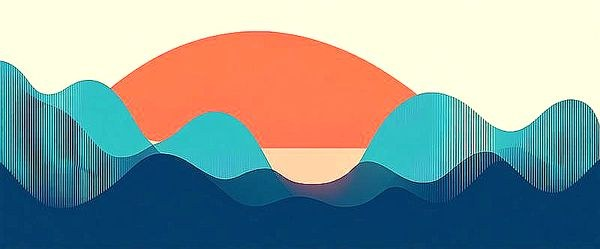
El Pulso
Sentir la música con el cuerpo
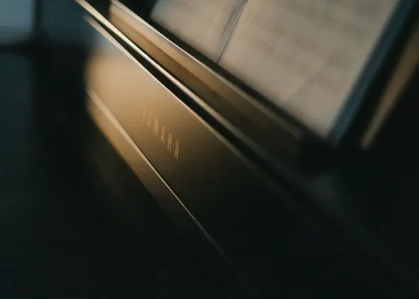
Ritmo
Las figuras que dan vida a la música
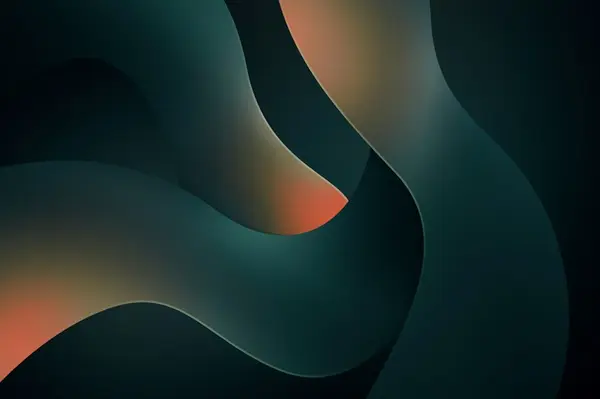
Melodía y Notas
Los colores del sonido
Lectura Musical
No es tan difícil como parece
Técnica Vocal
Tu voz es un instrumento
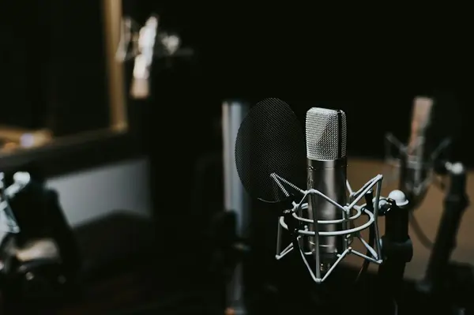
La Voz Adolescente
Tu voz está cambiando — y está bien
Canto Coral
30 voces respirando juntas
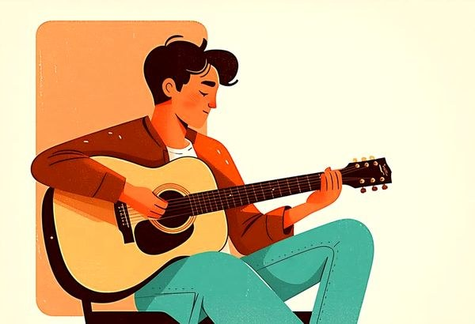
Guitarra
Del primer acorde al primer riff
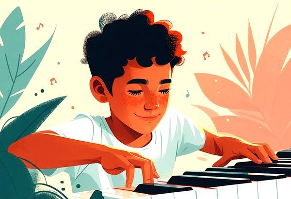
Piano/Teclado
El instrumento donde ves la música
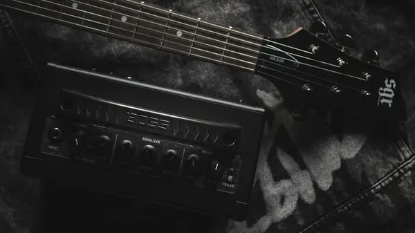
Bajo Eléctrico
El héroe invisible de toda banda
Percusión
Congas, bongós, cajón y más
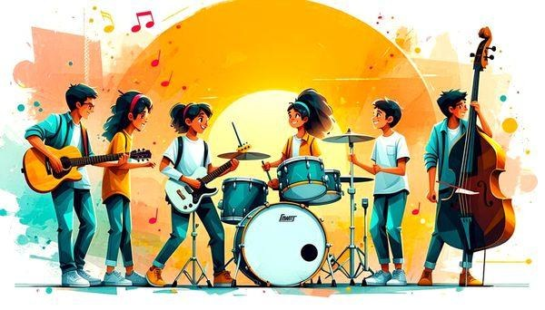
Ensamble
Cuando todos los instrumentos convergen
Crea
Armonía, creatividad y el arte de hacer música propia
Acordes
3 amigos cantando juntos
Progresiones
Los 4 acordes que tocan 50 canciones
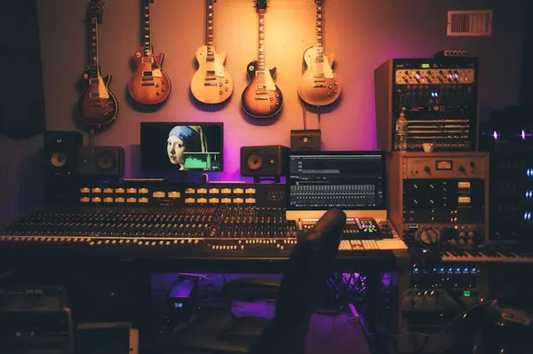
Arreglos
El chef de la música
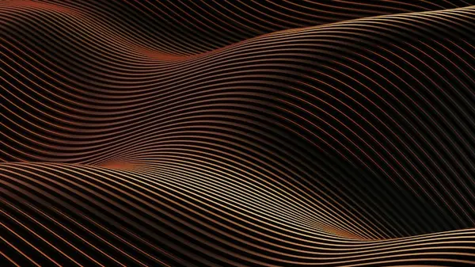
Improvisación
No hay notas equivocadas
Composición
Tu primera canción
Fusión
Mezclar géneros como mezclar sabores
Herramientas
Recursos, glosario y formatos de evaluación
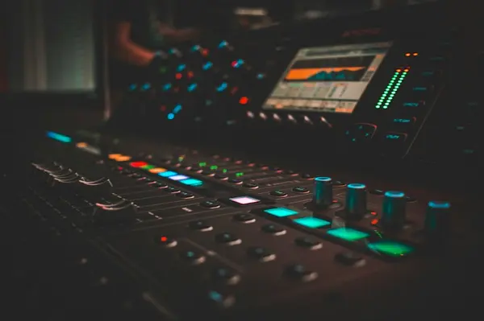
Herramientas
Apps, sitios y recursos para practicar
Glosario Musical
De A a Z — todo lo que necesitas saber
Mi Perfil Musical
¿Quién eres como músico?
Autoevaluación Corte 1
¿Cómo vas en el primer corte?
Autoevaluación Completa
Evaluación de fin de semestre
Coevaluación de Ensayo
Evalúa a tu equipo de ensayo
Coevaluación de Presentación
Evalúa la presentación de tu equipo
Bitácora Musical
Tu diario de aprendizaje musical
Más
Presentaciones, historia y configuración
Presentaciones
18 años de conciertos y actuaciones
Configuración
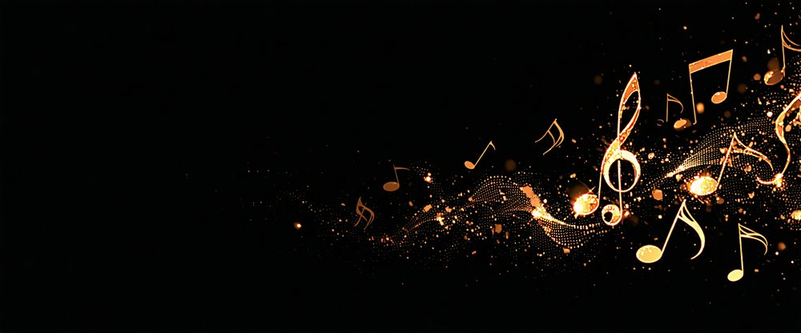
El Pulso: Sentir la Música con el Cuerpo
"Tú ya tienes ritmo. En serio. Si tu corazón late, ya tienes pulso musical."
¿Qué es el pulso?
El pulso es el latido constante de la música. Es eso que te hace mover el pie, la cabeza, o los hombros automáticamente cuando escuchas tu canción favorita. No lo piensas — tu cuerpo lo siente solo. Algo que siempre les digo el primer día: ustedes ya tienen ritmo. Llevo años dirigiendo ensambles aquí en Mérida y nunca he conocido a alguien que no pueda mantener un pulso. A veces solo necesitan que alguien se los confirme.
Piénsalo así:
Tu corazón late a un ritmo constante: tum-tum-tum-tum
Cuando caminas, tus pasos son más o menos iguales: paso-paso-paso-paso
La música también tiene ese latido: el pulso
El pulso no cambia dentro de una canción. Es constante, como un reloj. Lo que cambia es el ritmo (los patrones de sonidos largos y cortos que van encima del pulso). Pero eso lo vemos en la siguiente sección.
Prueba esto: Encuentra el pulso
Pon tu canción favorita en el celular
Cierra los ojos
Empieza a aplaudir al ritmo
Las palmadas que das de forma natural y constante = el pulso
¿Ya? Felicidades. Acabas de encontrar el pulso. No necesitaste partitura, ni teoría, ni años de estudio. Tu cuerpo ya sabía.
El tempo: ¿Rápido o lento?
La velocidad del pulso se llama tempo. Se mide en BPM (beats per minute = golpes por minuto).
Tempo
BPM
Se siente como...
Ejemplo
Muy lento
40-60
Caminar por un parque tranquilo
Algunas baladas clásicas
Lento
60-80
Caminar normal
"Someone Like You" (Adele) ~68 BPM
Moderado
80-110
Caminar con propósito
"Nada" (Zoé) ~90 BPM
Rápido
110-140
Trotar
"Blinding Lights" (The Weeknd) ~171 BPM
Muy rápido
140-200+
Correr
"Mr. Brightside" (The Killers) ~148 BPM
Intenta esto: Siente la diferencia
Busca una balada lenta en tu playlist → Aplaude al pulso
Ahora busca una canción rápida → Aplaude al pulso
¿Sientes cómo cambia la velocidad de tus palmadas? Eso es el cambio de tempo
Dato curioso: El tempo del corazón humano en reposo es de ~60-80 BPM. Por eso las canciones lentas (~60 BPM) nos relajan — van al ritmo de nuestro cuerpo. Y las rápidas (~120+ BPM) nos activan porque van al doble.
El compás: Organizar el tiempo
Si el pulso es "tum-tum-tum-tum", el compás es cómo agrupamos esos golpes. Los dos compases más comunes son:
Compás de 4/4 (el rey del pop)
4 tiempos por compás: UN-dos-tres-cuatro, UN-dos-tres-cuatro
Es EL compás del pop, rock, reggaetón, hip-hop, cumbia, EDM, y prácticamente el 80% de la música que escuchas. Siente el "UN" (tiempo fuerte) y verás que las canciones "respiran" cada 4 tiempos.
Canción para sentirlo: "We Will Rock You" de Queen → BUM-BUM-CLAP = los tiempos 1-2-3 de cada compás. Tú lo sabes hacer, ¿verdad?
Compás de 3/4 (el vals)
3 tiempos por compás: UN-dos-tres, UN-dos-tres
Es el compás del vals, de algunas baladas, y de la música yucateca (¡la jarana se toca en 3/4!). Tiene un balanceo diferente — como si la música "girara" en vez de "caminar".
Canción para sentirlo: "My Heart Will Go On" de Titanic → Siente el UN-dos-tres, UN-dos-tres mientras suena.
Reto rápido: ¿4/4 o 3/4?
Pon estas canciones y cuenta los tiempos:
"Shape of You" (Ed Sheeran) → ¿Cuántos tiempos tiene? 4/4
"Fly Me to the Moon" (Frank Sinatra) → ¿Y esta? 3/4
"Despacito" (Luis Fonsi) → 4/4
Una jarana yucateca → 3/4
Pulso vs. Ritmo: ¿Cuál es la diferencia?
Esta confusión es MUY común, así que vamos a aclararla de una vez:
Pulso
Ritmo
Qué es
El latido constante
Los patrones de sonidos largos y cortos
Cambia?
NO — es estable
SÍ — varía todo el tiempo
Analogía
El tic-tac de un reloj ⏱️
La melodía de tu canción favorita
Ejemplo
Aplaudir uniformemente
La letra de "Despacito" (des-pa-ci-to)
Quién lo siente
Tu cuerpo (pie, cabeza)
Tu oído y tu cerebro
El pulso es el piso sobre el que camina el ritmo. Sin pulso, el ritmo no tendría dónde apoyarse.
[INFOGRAFÍA: Pulso vs Ritmo — PRODUCIR]
Herramientas para practicar
El metrónomo: tu mejor amigo
Un metrónomo es un aparato (o app) que hace "clic-clic-clic" al tempo que tú elijas. Es como tener a alguien que aplaude constantemente para que no te pierdas.
Cómo usarlo:
Elige un tempo (empieza en 80 BPM si no sabes cuál)
Escucha los clics
Aplaude exactamente con cada clic
Si te atrasas o te adelantas, no pares — ajusta
Cuando lo domines, intenta hacer patrones más complejos (aplaudir solo en tiempos 1 y 3, o solo en 2 y 4)
Más allá del 4/4 y el 3/4, existen los compases compuestos La jarana yucateca, por ejemplo, se baila en compás ternario — por eso tiene ese vaivén tan particular que reconoces en las vaquerías.:
6/8: Se siente como un "3/4 doble" → UN-dos-tres-CUATRO-cinco-seis. Es el compás de muchas baladas tipo "Nothing Else Matters" de Metallica, y de la salsa.
5/4: Cinco tiempos por compás — suena "raro" porque no estás acostumbrado. "Take Five" de Dave Brubeck está en 5/4. Escúchala e intenta contar los 5 tiempos. Es un reto.
7/8: Siete tiempos. Música de los Balcanes, prog rock. "Money" de Pink Floyd tiene partes en 7/4.
¿Qué es el groove?
El groove es esa sensación de que la música "te jala" para moverte. No es solo el pulso ni solo el ritmo — es la combinación de ambos con una sensación que es casi imposible de explicar con palabras. Cuando una banda "tiene groove", TODO el mundo quiere bailar.
El groove se siente, no se lee. Y se desarrolla tocando con otros. Por eso el ensamble es tan importante.
¿Sabías que...? ¿Sabes bailar jarana? Si sí, ya tienes sentido rítmico. Si no, YouTube te enseña y ya tienes tarea cultural
Taller de Música · Prepa UADY · MEFI · Fundamentos
Ritmo: Las Figuras que dan Vida a la Música
"El ritmo es lo primero que aprendemos en la vida. Los latidos de tu mamá fueron tu primera canción Y si algún día quieres explorar la trova yucateca, el requinto (una guitarra más pequeña) es el instrumento estrella.."
¿Qué es el ritmo?
Ya sabes lo que es el pulso — ese latido constante que no cambia. Ahora imagina que encima de ese latido empiezas a hacer patrones: sonidos largos, sonidos cortos, silencios. Eso es el ritmo. Les voy a ser honesto: la lectura rítmica puede ser frustrante al principio. Las primeras veces que lo intenté de estudiante, sentía que mi cerebro y mis manos hablaban idiomas diferentes. Es normal. Con práctica, se conectan.
El ritmo es la combinación de sonidos y silencios con diferentes duraciones organizados sobre el pulso. Es lo que le da personalidad a la música. Dos canciones pueden tener el mismo pulso (el mismo tempo), pero suenan completamente diferente porque su ritmo es diferente.
Ejemplo rápido:
Aplaude 4 veces iguales: ta-ta-ta-ta → Eso es pulso
Ahora aplaude así: ta-titi-ta-sh (largo-corto corto-largo-silencio) → Eso es ritmo
¿Sientes la diferencia? El ritmo tiene vida. El pulso es el corazón; el ritmo es cómo caminas, cómo hablas, cómo bailas.
Las figuras rítmicas: el abecedario del ritmo
Así como las letras forman palabras, las figuras rítmicas forman patrones de ritmo. Estas son las 5 figuras básicas que necesitas conocer:
Las 4 figuras esenciales (+1)
Figura
Nombre
Duración
Sílaba Kodály
Color
Se ve como...
♩
Negra
1 tiempo
ta
Azul
Óvalo relleno con palito
♫
Corcheas (par)
½ + ½ tiempo
ti-ti
Verde
2 negras unidas por una barra
𝄾
Silencio de negra
1 tiempo (sin sonido)
sh
Rojo
Un rayito zigzagueante
𝅗𝅥
Blanca
2 tiempos
ta-a
Amarillo
Óvalo vacío con palito
𝅝
Redonda
4 tiempos
ta-a-a-a
Morado
Óvalo vacío sin palito
[INFOGRAFÍA: Las 5 figuras rítmicas con colores, notación, sílaba y movimiento — PRODUCIR]
Prueba esto: Las sílabas Kodály
Las sílabas Kodály son una forma genial de leer ritmo con la voz antes de tocar un instrumento. Así funcionan:
Aplaude un pulso constante (ta-ta-ta-ta)
Ahora di estas sílabas al ritmo de tus palmadas:
Patrón 1: ta ta ta ta (4 negras — el más básico)
Patrón 2: ta ti-ti ta sh (negra, 2 corcheas, negra, silencio)
Patrón 3: ti-ti ti-ti ta ta-a (2 corcheas, 2 corcheas, negra, blanca)
Patrón 4: ta-a ta ti-ti (blanca, negra, 2 corcheas)
¿Lo hiciste? Ya estás leyendo ritmo. Sin partitura. Solo con tu voz y tus palmas.
¿Cómo se relacionan las figuras entre sí?
Todas las figuras se relacionan por duración relativa. Es como una familia:
Si entiendes esto, ya entiendes el 90% de la lectura rítmica. Lo demás son variaciones.
El silencio: tan importante como el sonido
En música, el silencio no es "no tocar". Es un espacio intencionado, medido, que tiene la misma duración que su figura equivalente:
Silencio de...
Dura...
Lo que haces
Negra (𝄾)
1 tiempo
Dices "sh" pero NO suenas
Corchea
½ tiempo
Pausa brevísima
Blanca
2 tiempos
Te quedas en silencio por 2 tiempos
Redonda
4 tiempos (compás completo)
Silencio total por un compás
Por cierto: Claude Debussy, compositor francés, dijo: "La música es el espacio entre las notas." El silencio en la música es como la pausa antes de un chiste — sin ella, el chiste no funciona. Sin silencios, la música sería solo ruido.
Manos a la obra: El poder del silencio
Aplaude este patrón:
ta ta sh ta | ti-ti ta sh sh | ta ta-a sh |
¿Sentiste cómo los silencios crean tensión? ¿Cómo "esperas" que algo pase después? Eso es lo que el silencio le hace a la música. Es poderoso.
Lectura rítmica paso a paso
Leer ritmo no es tan difícil como parece. Es como leer palabras, pero en vez de letras, son figuras que te dicen cuánto dura cada sonido.
Paso 1: Identifica el compás
Si dice 4/4 al inicio, cada compás tiene 4 tiempos (4 negras o su equivalente).
Paso 2: Lee figura por figura
De izquierda a derecha, identifica cada figura y di su sílaba:
Ejemplo en 4/4:
| ♩ ♩ ♫ ♩ | ♩ ♫ ♩ 𝄾 |
ta ta ti-ti ta ta ti-ti ta sh
¿Cuántos tiempos tiene cada compás?
Compás 1: 1 + 1 + 1 + 1 = 4
Compás 2: 1 + 1 + 1 + 1 = 4
Paso 3: Prueba con palmadas
Una vez que puedes decir las sílabas, reemplaza la voz con palmadas. Aplaude los "ta" y "ti-ti", y deja las manos abajo en los "sh".
Paso 4: Agrega el metrónomo
Pon el metrónomo a 70 BPM y trata de leer el patrón al tempo. Si no sale, baja a 60. Si sale fácil, sube a 80.
Actividad: "Compón tu ritmo"
Ahora es tu turno. Crea tus propios patrones rítmicos combinando las figuras. Aquí tienes las reglas:
Regla del juego: Cada compás debe sumar exactamente 4 tiempos (si estás en 4/4).
Semicorcheas (ti-ka-ti-ka): Duran ¼ de tiempo cada una. 4 semicorcheas = 1 negra. Son las que hacen que el reggaetón suene como suena (esa guitarra que va rápido en el fondo: ti-ka-ti-ka-ti-ka-ti-ka).
Tresillos: Cuando metes 3 notas en el espacio de 2. Tienen un "swing" que suena a blues y jazz. La batería del shuffle (la que suena "chueca" pero genial) usa tresillos.
Síncopas: Cuando el acento cae donde NO lo esperas — en los tiempos débiles en vez de los fuertes. Es lo que hace que la salsa, el funk y el reggae suenen como suenan. Cuando la música te "sorprende" rítmicamente, probablemente es una síncopa.
Puntillo: Un punto después de una figura que le agrega la mitad de su duración. Negra con puntillo = 1.5 tiempos. Blanca con puntillo = 3 tiempos.
El ritmo en diferentes géneros
Género
Característica rítmica
Escucha esto
Rock
Bombo en 1 y 3, caja en 2 y 4
"We Will Rock You" — Queen
Reggaetón
"Dem Bow" — bombo-caja en patrón sincopado
"Gasolina" — Daddy Yankee
Cumbia
Ritmo de güira + tumba
"La Bamba" — Ritchie Valens
Son jarocho
Patrón de jarana con acentos desplazados
"La Bruja" — tradicional
Vals
3/4 con acento en tiempo 1
"Sobre las Olas" — Juventino Rosas MX
Dato curioso: La palabra "ritmo" viene del griego "rhythmos", que significa "flujo". Y eso es exactamente lo que es — un flujo de sonidos y silencios que te envuelve.
Taller de Música · Prepa UADY · MEFI · Fundamentos
Melodía y Notas: Los Colores del Sonido
"La melodía es la parte de la canción que no puedes sacar de tu cabeza. La que tarareas sin darte cuenta."
¿Qué es la melodía?
La melodía es una secuencia de notas que van una después de otra formando una línea musical que puedes cantar, silbar o tararear Piensa en las melodías de la trova yucateca — son tan pegajosas que tu abuelo las tararea sin darse cuenta.. Es lo que más recuerdas de una canción. Es la voz de Adele en "Hello". Es el silbido de "Hedwig's Theme" de Harry Potter. Es lo que cantas en la regadera.
Si el ritmo es cuándo suenan las cosas, la melodía es qué notas suenan y en qué orden. Juntos, ritmo + melodía, crean la canción.
Las notas: los 7 colores de la música
Toda la música del mundo se construye con solo 12 notas (7 naturales + 5 alteradas). Las 7 naturales las conoces desde la primaria:
Do - Re - Mi - Fa - Sol - La - Si
Después del Si, la secuencia se repite pero más aguda: Do - Re - Mi... y así hasta el infinito (bueno, hasta donde alcance tu instrumento o tu voz).
Un dato que te va a gustar: La famosa canción "Do-Re-Mi" de The Sound of Music (La Novicia Rebelde) fue diseñada específicamente para enseñar la escala. Y funciona — 60 años después, seguimos aprendiéndola así.
La escala de Do mayor: tu primera escala
Una escala es una secuencia ordenada de notas que sube y baja como una escalera (de ahí el nombre). La escala más famosa del mundo es la de Do mayor:
Do Re Mi Fa Sol La Si Do
1 2 3 4 5 6 7 8 (octava)
¿Por qué Do mayor? Porque es la única escala mayor que no tiene ninguna nota alterada (ni sostenidos ni bemoles). En el piano, es tocar solo las teclas blancas de Do a Do.
Toca las teclas blancas desde ese Do hacia la derecha: Do-Re-Mi-Fa-Sol-La-Si-Do
Canta cada nota mientras la tocas
Ahora hazlo de regreso: Do-Si-La-Sol-Fa-Mi-Re-Do
¡Ya tocaste y cantaste tu primera escala!
3 idiomas para escribir lo mismo
Aquí viene algo que confunde a muchos al principio: existen 3 formas diferentes de escribir las mismas notas. Son como 3 idiomas que dicen lo mismo:
Nota
Pentagrama
Cifrado americano
Tablatura (guitarra)
Do
Nota en la línea adicional inferior
C
3er traste, 5ta cuerda
Re
Nota debajo de la 1ª línea
D
Cuerda 4 al aire
Mi
Nota en la 1ª línea
E
Cuerda 3 al aire (o 2do traste, 4ta)
Fa
Nota en el 1er espacio
F
1er traste, 1ra cuerda
Sol
Nota en la 2ª línea
G
3er traste, 1ra cuerda
La
Nota en el 2º espacio
A
Cuerda 1 al aire
Si
Nota en la 3ª línea
B
2do traste, 5ta cuerda
"Son 3 idiomas para decir lo mismo."
[INFOGRAFÍA: 3 sistemas de notación lado a lado — Pentagrama vs Cifrado vs Tablatura — PRODUCIR]
Pentagrama: El sistema clásico. Lo usan en el conservatorio, en orquestas, en coros. Es el más completo pero el más difícil de aprender.
Cifrado americano: Letras (C, D, E, F, G, A, B) para representar acordes y notas. Lo usan guitarristas, pianistas de pop/rock, bandas. Es rápido y práctico.
Tablatura (Tab): Números en líneas que representan las cuerdas. Exclusivo para guitarra y bajo. Es el más fácil de leer si tocas cuerdas.
¿Cuál debo aprender?
Idealmente, los 3. Pero no te agobies — elige el que más te sirva para TU instrumento:
Si tocas...
Empieza con...
Después aprende...
Guitarra
Cifrado + Tab
Pentagrama
Piano
Cifrado + Pentagrama
(Tab no aplica)
Bajo
Tab + Cifrado
Pentagrama
Percusión
Lectura rítmica
Cifrado
Voz
Pentagrama + Cifrado
(Tab no aplica)
Las señales de mano Kodály
Las señales de mano Kodály son gestos con la mano que representan cada nota de la escala. Son una herramienta increíble para "sentir" las notas con el cuerpo antes de cantarlas. Zoltán Kodály, un educador musical húngaro, popularizó este sistema en el siglo XX.
Nota
Señal
Descripción
Do
Puño cerrado
Firme, como el inicio
Re
Mano inclinada hacia arriba
Señalando hacia donde va la escala
Mi
Mano plana, horizontal
Plataforma estable
Fa
Pulgar hacia abajo
"Caída" hacia Mi — tensión
Sol
Mano plana mirando al frente
Abierta, como diciendo "hola"
La
Mano relajada, dedos apuntando al suelo
Suave, pendiente
Si
Dedo índice apuntando hacia arriba
"Quiere llegar al Do de arriba" — máxima tensión
Do (agudo)
Puño cerrado más arriba
Resolución — "llegamos"
Prueba esto: Canta con las manos
Pon la mano a nivel de tu cintura = Do
Sube gradualmente hasta arriba de tu cabeza = Do agudo
Haz cada señal mientras cantas la nota correspondiente
Empieza lento: Do... Re... Mi... Fa... Sol... La... Si... Do
Ahora de regreso: Do... Si... La... Sol... Fa... Mi... Re... Do
¿Notas cómo tus manos te ayudan a "sentir" si la nota sube o baja? Ese es el poder de Kodály.
Los intervalos: la distancia entre notas
Un intervalo es la distancia entre dos notas. Cada intervalo tiene un sonido único que puedes reconocer por canciones famosas:
Si la escala mayor suena "feliz" y "luminosa", la escala menor suena "triste", "profunda" o "dramática". La escala de La menor natural es:
La - Si - Do - Re - Mi - Fa - Sol - La
Es la misma que Do mayor pero empezando desde La. Usa las mismas notas, las mismas teclas blancas — pero al cambiar el punto de partida, cambia completamente el color emocional. Increíble, ¿no?
La escala pentatónica: 5 notas que SIEMPRE funcionan
La pentatónica tiene solo 5 notas (penta = 5) y es la escala más usada para improvisar porque es casi imposible que suene mal:
Pentatónica de Do mayor: Do - Re - Mi - Sol - La
Pentatónica de La menor: La - Do - Re - Mi - Sol
¿Notas que son las mismas notas? Solo 5 de las 7, eliminando las que causan "tensión" (Fa y Si). Por eso siempre suena bien.
Esto te va a sorprender: La escala pentatónica es universal — la usan en el rock, el blues, la música china, la música celta, el jazz, la jarana yucateca, y la música africana. Es como el llave maestra de la improvisación: funciona en todos lados
Los sostenidos y bemoles
Entre las 7 notas naturales hay 5 notas más (las teclas negras del piano):
Do - Do#/Re♭ - Re - Re#/Mi♭ - Mi - Fa - Fa#/Sol♭ - Sol - Sol#/La♭ - La - La#/Si♭ - Si
En total = 12 notas. Con esas 12 se construye TODA la música occidental. Cada una está separada de la siguiente por un semitono (medio tono) — la distancia más pequeña posible en nuestra música.
Taller de Música · Prepa UADY · MEFI · Fundamentos
Lectura Musical: No es tan Difícil como Parece
No les voy a mentir: leer música no es fácil al principio. Es como aprender un idioma nuevo. Pero como cualquier idioma, con práctica se vuelve natural.
"Leer música es como aprender otro idioma. Al principio ves garabatos. Después de un rato, escuchas canciones con los ojos."
¿Para qué aprender a leer música?
Seamos honestos: millones de músicos no leen música — y tocan muy bien. Jimi Hendrix, los Beatles (al inicio), Wyclef Jean, y probablemente la mitad de los artistas de tu playlist. Tocan de oído, con cifrado, con tablaturas, o simplemente "saben" dónde poner los dedos.
Entonces, ¿para qué molestarse en aprender?
Porque leer música te da habilidad secretaes:
Puedes tocar una canción sin haberla escuchado nunca — solo leyendo la partitura
Puedes comunicarte con cualquier músico del mundo, aunque hablen otro idioma
Puedes recordar y compartir tus composiciones de forma precisa
Puedes entender por qué la música suena como suena
¿Es obligatorio? No. ¿Es útil? Muchísimo. ¿Es difícil? Menos de lo que crees.
El pentagrama: las 5 líneas mágicas
El pentagrama son 5 líneas horizontales donde viven las notas. Cada línea y cada espacio representan una nota diferente.
─────────────── 5ª línea ── Fa
4º espacio ── Mi
─────────────── 4ª línea ── Re
3er espacio ── Do
─────────────── 3ª línea ── Si
2º espacio ── La
─────────────── 2ª línea ── Sol
1er espacio ── Fa
─────────────── 1ª línea ── Mi
Al inicio del pentagrama siempre hay una clave que dice exactamente dónde está cada nota. La más común es la clave de Sol (𝄞), que indica que la 2ª línea = Sol.
Cómo ubicar las notas: tips mnemotécnicos
Notas en las LÍNEAS (de abajo hacia arriba)
5ª línea ───── Fa
4ª línea ───── Re
3ª línea ───── Si
2ª línea ───── Sol
1ª línea ───── Mi
Mnemotécnico:MiSolSiReFa
Inventa tu frase para recordarlo:
"MiSolSiempre Resalta en la Farra"
"Mi aSoleado Sillón de Reyes Famosos"
O la tuya propia — la que te haga reír la recuerdas mejor
Notas en los ESPACIOS (de abajo hacia arriba)
4º espacio ── Mi
3er espacio ── Do
2º espacio ── La
1er espacio ── Fa
Mnemotécnico:FaLaDoMi
Esto es más fácil — suena casi como una frase:
"Fa-La-Do-Mi" → ¡ya suena a música!
Ahora tú: Identifica las notas
Dibuja un pentagrama en tu cuaderno (5 líneas)
Dibuja la clave de Sol al inicio
Pon una nota (un círculito) en la 1ª línea → ¿Qué nota es? Mi
Pon otra en el 2º espacio → ¿Qué nota es? La
Ahora intenta poner las notas de "Do-Re-Mi-Fa-Sol" en el pentagrama
¿Te trabaste? Normal. Usa el ejercicio interactivo de Musicca para practicar — es como cuando progresas en algo que te importa de notas.
El cifrado americano: letras = notas
Si el pentagrama es el "idioma clásico", el cifrado es el idioma callejero de la música popular. Usa letras del abecedario para representar las notas:
Nota
Cifrado
Do
C
Re
D
Mi
E
Fa
F
Sol
G
La
A
Si
B
¿Por qué letras?
Porque en el sistema anglosajón (inglés), las notas se nombran con letras. Y como la mayoría de la música popular se escribe en inglés... el cifrado se quedó.
Dato clave: La secuencia empieza en La (A), no en Do (C):
A = La, B = Si, C = Do, D = Re, E = Mi, F = Fa, G = Sol
¿Cómo se usa?
Cuando ves esto encima de la letra de una canción:
C G Am F
"Somewhere over the rainbow, way up high..."
Significa: toca el acorde de Do (C) cuando empieza "Somewhere", cambia a Sol (G) en "over", La menor (Am) en "rainbow", y Fa (F) en "way up high".
Minúsculas y extras:
C = Do mayor (alegre)
Cm = Do menor (triste)
C7 = Do séptima (con sabor a blues)
Cmaj7 = Do mayor séptima (con sabor a jazz/bossa)
Csus4 = Do suspendido (tensión sin resolver)
No te agobies con todos ahora — los iremos viendo durante el año.
La tablatura: números para guitarristas y bajistas
La tablatura (tab) es el sistema más fácil de leer si tocas guitarra o bajo. En vez de un pentagrama con notas, son líneas que representan cuerdas y números que dicen dónde poner el dedo.
Tablatura de guitarra (6 líneas = 6 cuerdas)
e |───0───1───3───| ← 1ª cuerda (la más delgada)
B |───1───0───0───| ← 2ª cuerda
G |───0───0───0───| ← 3ª cuerda
D |───2───2───0───| ← 4ª cuerda
A |───3───3───2───| ← 5ª cuerda
E |───────────3───| ← 6ª cuerda (la más gruesa)
C F G
¿Cómo se lee?
Cada línea = una cuerda
Cada número = el traste donde pones el dedo (0 = cuerda al aire)
Se lee de izquierda a derecha (como texto)
Tablatura de bajo (4 líneas = 4 cuerdas)
G |───────────────|
D |───────────────|
A |───3───0───2───|
E |───────────────|
C Am D
Mismo principio: líneas = cuerdas, números = trastes.
Prueba esto: Lee tu primera tab
Si tocas guitarra, intenta esto (es la intro de "Smoke on the Water" de Deep Purple):
e |─────────────────────|
B |─────────────────────|
G |─0──3──5──0──3──6─5──|
D |─0──3──5──0──3──6─5──|
A |─────────────────────|
E |─────────────────────|
Si suena a "da-da-DAAAA, da-da-da-DAAAA", ¡lo hiciste bien!
Mientras la clave de Sol cubre las notas medias-agudas (voz, guitarra, flauta), la clave de Fa (𝄢) cubre las notas graves: bajo, mano izquierda del piano, chelo, trombón.
En la clave de Fa, las notas en las líneas son: Sol-Si-Re-Fa-La (de abajo arriba) y en los espacios: La-Do-Mi-Sol.
Si tocas bajo y quieres leer partitura (en vez de tab), necesitarás la clave de Fa.
Lectura a primera vista (sight reading)
La habilidad de leer y tocar al mismo tiempo, sin haber practicado antes, se llama lectura a primera vista. Es como leer un texto en voz alta: reconoces las palabras y las dices al mismo tiempo.
Tips para mejorarla:
Lee un poco todos los días — 5 minutos de lectura a primera vista valen más que 1 hora una vez por semana
No te detengas — si te equivocas, sigue. El objetivo es mantener el flujo
Mira adelante — como cuando lees texto, tus ojos deben ir 1-2 notas adelante de lo que estás tocando
Empieza más lento de lo que crees necesario
Usa las apps: MusikBrain y Musicca tienen ejercicios progresivos
Transposición: cambiar la tonalidad
A veces una canción está escrita en una tonalidad que no te queda bien (muy aguda, muy grave). Transponer es mover todas las notas la misma distancia para que quede en una tonalidad cómoda.
Si conoces los intervalos y las escalas, transponer es cuestión de mover todo "X tonos arriba" o "X tonos abajo". En cifrado es aún más fácil: si una canción está en G-C-D y la quieres en C, subes todo 5 semitonos: C-F-G. Listo.
Dato curioso: Mozart podía leer una partitura y tocarla perfectamente a primera vista. Pero tú tienes algo que Mozart no tenía: internet, apps interactivas, y un taller con compañeros que van contigo en este viaje. Estás en ventaja
Taller de Música · Prepa UADY · MEFI · Fundamentos
Técnica Vocal: Tu Instrumento más Personal
"Tu voz ya es perfecta. Aquí solo vamos a cuidarla y expandirla."
Una cosa que aprendí dirigiendo coros: la voz es el único instrumento que no puedes separar de ti. Cuando cantas, te expones. Y eso requiere valentía — más que tocar cualquier instrumento.
No importa si cantas en la regadera, en el carro con la ventana abierta, o si todavía no te animas a cantar frente a alguien. Tu voz es el único instrumento que ya traes contigo. No necesitas comprarlo, afinarlo con un aparato, ni cargarlo en un estuche. Siempre está ahí.
Pero como cualquier instrumento, funciona mejor cuando lo cuidas y lo conoces. Aquí vamos a aprender a hacer exactamente eso.
Respiración Diafragmática: El Secreto de Todo
Si pudieras mejorar una sola cosa de tu forma de cantar, debería ser la respiración. En serio. Todo lo demás viene después.
¿Qué es el diafragma?
Es un músculo grande en forma de paraguas que está debajo de tus pulmones, justo donde termina tu caja torácica. Cuando respiras bien, el diafragma baja y tus pulmones se llenan de aire desde abajo, como si inflaras un globo dentro de tu abdomen.
Cuando respiras mal (como la mayoría de las personas en su día a día), solo usas la parte de arriba del pecho. Eso te da menos aire, menos control, y te cansas más rápido.
Tu turno: Ejercicio de respiración en 4 pasos
Paso 1 — Descubre tu diafragma
Acuéstate boca arriba y pon un libro sobre tu abdomen (un cuaderno grueso funciona). Respira profundo por la nariz. Si el libro sube, ¡lo estás haciendo bien! Si sube tu pecho pero el libro no se mueve, estás respirando solo con la parte de arriba.
Paso 2 — Inhala en 4 tiempos
Sentado o de pie, pon tu mano sobre tu abdomen. Inhala contando hasta 4 por la nariz. Siente cómo tu mano se aleja de ti (tu abdomen se expande).
Paso 3 — Sostén en 4 tiempos
Mantén el aire adentro contando hasta 4. Sin tensión en los hombros — relaja la mandíbula.
Paso 4 — Exhala en 8 tiempos
Suelta el aire lentamente haciendo "sssss" (como una serpiente) durante 8 tiempos. Siente cómo tu abdomen vuelve hacia adentro.
Repite 5 veces. Cuando te sientas cómodo/a, intenta exhalar en 12 tiempos. Luego en 16. Eso es control de aire — y es lo que te permite sostener notas largas sin quedarte sin aire a media frase.
Dato interesante: Los cantantes de ópera pueden sostener una nota durante más de 20 segundos. No es porque tengan pulmones de superhéroe — es porque su diafragma trabaja como un reloj suizo.
Postura: Tu Cuerpo como Caja de Resonancia
Tu cuerpo entero participa cuando cantas. Si estás encorvado, encogido o con los hombros tensos, estás cerrando las puertas por donde sale tu voz.
Postura de pie (para ensayos y presentaciones)
Pies: Separados al ancho de tus hombros. Peso repartido entre los dos pies.
Rodillas: Ligeramente flexionadas (no rígidas como soldado).
Cadera: Centrada, no inclinada hacia adelante ni hacia atrás.
Pecho: Abierto, como si tuvieras un hilo invisible que te jala suavemente hacia arriba desde el esternón.
Hombros: Abajo y atrás. Imagina que tus omóplatos son alitas que se juntan atrás.
Cuello: Recto, ni para arriba ni para abajo. La barbilla paralela al piso.
Mandíbula: Relajada. Si aprietas los dientes, tu voz se aprieta también.
Postura sentado (para clase y práctica)
Lo mismo, pero:
Siéntate en el borde de la silla, no recargado en el respaldo
Los pies bien plantados en el piso
La espalda recta pero sin tensión
Intenta esto: El test del espejo
Canta una frase de tu canción favorita frente a un espejo. Observa:
¿Se te suben los hombros cuando respiras? → Relaja
¿Inclinas la cabeza hacia arriba en las notas agudas? → Mantén la barbilla fija
¿Tu mandíbula se tensa? → Haz como si tuvieras una papa caliente en la boca (espacio interno)
Colocación de la Voz: Dónde Resuena tu Sonido
Tu cabeza tiene varias "cajas de resonancia" naturales: la boca, la nariz, los senos paranasales, y hasta el espacio detrás de tus ojos. Dependiendo de dónde "coloques" tu voz, suena diferente.
Los 3 resonadores principales
Resonador
Dónde se siente
Cómo suena
Cuándo usarlo
Pecho
Vibración en el esternón/pecho
Profundo, cálido, potente
Notas graves y medias
Máscara
Vibración en la nariz, pómulos, frente
Brillante, proyectado, claro
La mayor parte del tiempo al cantar
Cabeza
Vibración en la parte alta de la cabeza
Ligero, aéreo, dulce
Notas agudas
Prueba esto: Encuentra tus resonadores
Resonancia de pecho: Pon tu mano en el pecho y di "ommm" en tu nota más grave. ¿Sientes la vibración? Eso es voz de pecho.
Resonancia de máscara: Tararea "mmmm" con la boca cerrada. Siente la vibración en tu nariz, labios y pómulos. Ahora abre la boca sin dejar de tararear: "mmmmaaaa". Esa sensación de vibración en la cara es la colocación en máscara.
Resonancia de cabeza: Haz un sonido de sirena de ambulancia: "uuuuiiiii" subiendo mucho. Cuando llegas a las notas más agudas, sientes la vibración arriba de la cabeza.
La meta no es usar solo uno — es aprender a mezclarlos según lo que necesites.
Higiene Vocal: Cuida tu Instrumento
Tu voz es el único instrumento que no puedes reemplazar si lo dañas. Suena dramático, pero es real. Aquí van las reglas de oro:
SÍ hacer
Hábito
Por qué importa
Tomar agua constantemente
Las cuerdas vocales necesitan estar hidratadas para vibrar bien. Lleva tu botella de agua siempre
Calentar antes de cantar
Como un deportista no corre sin estirar, tú no cantas sin calentar
Descansar la voz
Después de un ensayo largo, dale a tu voz tiempo de recuperarse
Dormir bien
Tu voz suena mejor cuando descansaste (en serio, es ciencia)
Usar amplificación si es necesario
En espacios grandes, un micrófono te salva de gritar
NO hacer
Hábito
El daño que causa
Gritar
Irrita y puede inflamar las cuerdas vocales
Susurrar mucho tiempo
Paradójicamente, susurrar fuerza más las cuerdas que hablar normal
Carraspear constantemente
Es como frotar tus cuerdas vocales entre sí. Mejor toma un trago de agua
Cantar cuando estás enfermo de la garganta
Tus cuerdas están inflamadas. Cantar así es como correr con un tobillo torcido
Fumar / vapear
El humo irrita y seca las cuerdas vocales. No hay vuelta con esto
Tomar bebidas muy frías o muy calientes antes de cantar
El shock de temperatura tensa la musculatura
Dato curioso: Adele tuvo que cancelar giras enteras y someterse a cirugía de cuerdas vocales por no cuidar su higiene vocal. Si le pasa a una de las mejores voces del mundo, imagina. ¡Cuida tu instrumento!
Calentamiento Vocal: 5 Minutos que Cambian Todo
Haz esta rutina ANTES de cada clase y antes de practicar en casa. Son 5 minutos. Solo 5. Pero marcan toda la diferencia.
Exhala haciendo "sssss" y luego "fffff" y luego "shhhh"
Minuto 2 — Vibración de labios (lip trill)
Relaja los labios y sopla para que vibren (como haciendo "brrrrr" cuando tienes frío)
Haz una escala subiendo y bajando con los labios vibrando
Si no te sale el lip trill, haz "rrrr" rodando la lengua
Minuto 3 — Humming (tarareo)
Tararea "mmmm" empezando en una nota cómoda
Sube medio tono a la vez, tarareando 3-4 notas y bajando
Siente la vibración en la cara (resonancia de máscara)
Minuto 4 — Vocalizaciones abiertas
Canta "ma-me-mi-mo-mu" en una escala de 5 notas, subiendo medio tono cada vez
No fuerces las notas agudas. Si sientes tensión, baja
Abre bien la boca en las vocales "a" y "o"
Minuto 5 — Escala completa + legato
Canta una escala de 8 notas (Do a Do) con "la-la-la" subiendo
Repite con "no-no-no" y luego con "mi-mi-mi"
Intenta que las notas estén conectadas (legato), sin cortar entre una y otra
Ahora tú: El reto del calentamiento semanal
Lleva un registro: cada día que calientes antes de practicar, ponle una en tu bitácora. Después de 2 semanas, compara cómo suena tu voz el día que calientas vs. el día que no. Vas a notar la diferencia.
Reto avanzado
Si ya dominas lo básico y quieres profundizar:
Apoyo (appoggio): La técnica italiana de mantener la expansión del torso mientras cantas, para un flujo de aire constante y controlado. Es el siguiente nivel de la respiración diafragmática.
Registros vocales: Explora la diferencia entre voz de pecho, voz mixta, voz de cabeza y falsete. Cada registro tiene un color diferente y se usa para cosas diferentes.
Belting: La técnica de cantar notas agudas con potencia (piensa en Beyoncé, Demi Lovato, o Luis Miguel en los agudos). Requiere excelente apoyo y colocación en máscara.
Vibrato: Esa oscilación natural de la voz que hace que suene más cálida y expresiva. No se fuerza — aparece cuando tienes buen apoyo y relajación.
"Tu voz es como tu huella digital: nadie en el mundo tiene una igual. Lo que hacemos aquí es descubrir qué puede hacer la tuya."
Vamos a hablar de algo que probablemente ya notaste pero que nadie te ha explicado bien: tu voz está en plena transformación. Y no, no es solo cosa de hombres. Todas las voces cambian durante la adolescencia.
Si tu voz se quiebra, se sale de control, suena raro un día y diferente al siguiente — felicidades, eres completamente normal. Tu instrumento está creciendo, igual que tú.
¿Qué Está Pasando con tu Voz?
La muda vocal: tu voz está en obras
Entre los 12 y los 17 años (más o menos — cada cuerpo tiene su propio horario), la laringe crece. Es donde viven tus cuerdas vocales, y cuando la laringe crece, las cuerdas se hacen más largas y gruesas.
Lo que pasa
El resultado
Las cuerdas vocales se alargan
Tu voz se vuelve más grave
La laringe baja de posición
La "manzana de Adán" se nota más (sobre todo en hombres)
Los músculos aún no se adaptan al nuevo tamaño
Tu voz "se quiebra" o salta entre registros
Las hormonas hacen lo suyo
El tono de tu voz cambia de un día a otro
En hombres
El cambio es más dramático. La voz puede bajar hasta una octava completa. Hay una etapa donde no sabes qué nota va a salir — puedes empezar hablando grave y de repente sale un agudo inesperado. Esto dura entre 6 meses y 2 años. Es temporal.
En mujeres
El cambio es más sutil pero también existe. La voz gana cuerpo y profundidad. Puede haber momentos de "aire" en la voz (como si se escapara el aire al cantar) o notas que antes salían fácil y ahora cuestan un poco. Esto dura un poco menos, pero varía mucho.
Dato curioso: La voz de Camilo Sesto, una de las más potentes del rock en español, se "quebró" tanto en su adolescencia que le dijeron que nunca podría ser cantante. La de Bad Bunny tampoco era lo que es hoy — empezó cantando en el coro de su iglesia sin ninguna técnica formal. ¿Y Rosalía? Cuenta que de adolescente le daba pena cantar frente a otros porque su voz sonaba "diferente". Mírala ahora.
No Hay Voces Feas. Hay Voces sin Práctica.
Esto necesitamos que lo leas despacio:
No existe tal cosa como una voz fea.
Existen voces graves, agudas, rasposas, suaves, potentes, delicadas, brillantes, oscuras — y TODAS tienen un lugar en la música.
¿Tu voz es muy grave? → Las voces graves son la base de cualquier coro. Sin ti, todo suena hueco.
¿Tu voz es muy aguda? → Las melodías principales casi siempre las llevan voces agudas o medias.
¿Tu voz es "rara"? → Las voces más interesantes del mundo son las "raras". Billie Eilish canta susurrando. Tom Waits suena como si masticara grava. Chavela Vargas hacía llorar a todo México con una voz que los puristas llamarían "imperfecta". La diferencia es lo que te hace memorable.
Lo único que existe es una voz sin entrenar vs. una voz con práctica. Y adivina qué — estás en un taller de música. Eso ya te pone en ventaja.
Clasificación Vocal: No es una Etiqueta, es una Guía
En el coro, a veces necesitamos organizarnos por tipo de voz para que los arreglos funcionen. Esto NO es una sentencia de por vida — es una referencia para saber qué parte te queda más cómoda HOY.
Voces femeninas
Clasificación
Rango aproximado
Se siente como...
Ejemplo famoso
Soprano
Aguda
Las notas altas te salen sin esfuerzo
Ariana Grande, Mon Laferte (en agudos)
Mezzosoprano
Media
Tu zona cómoda está en el centro
Shakira, Natalia Lafourcade
Contralto
Grave
Las notas bajas son tu fortaleza
Amy Winehouse, Cher, Tracy Chapman
Voces masculinas
Clasificación
Rango aproximado
Se siente como...
Ejemplo famoso
Tenor
Aguda
Los agudos te fluyen bien
Freddie Mercury, Luis Miguel, Peso Pluma
Barítono
Media
Tu zona más cómoda está en el centro
Elvis Presley, Frank Sinatra, Ed Sheeran
Bajo
Grave
Las notas graves resuenan en tu pecho
Johnny Cash, Barry White
Importante para el taller
NO te claves en la clasificación. Tu voz está cambiando y puede que hoy seas tenor y el próximo año barítono. Está bien.
Canta donde te sientas cómodo/a. Si una nota te duele, te aprieta o te hace forzar, baja. Siempre.
Tu clasificación no determina tu valor. No es mejor ser soprano que contralto, ni tenor que bajo. Todas las voces son necesarias.
Tips para Cantar Durante la Muda de Voz
Si estás en plena muda vocal, aquí van reglas de oro para cantar sin lastimarte:
1. No fuerces los extremos
Si una nota aguda ya no te sale como antes, no la empujes. Tu rango está cambiando y eso es normal. Canta en tu zona cómoda y poco a poco explora los límites.
2. Calienta SIEMPRE
Ahora más que nunca, el calentamiento es crucial. Tus cuerdas vocales están en una etapa sensible — tratarlas con cariño es la prioridad.
3. Canta suave
Durante la muda, canta a un volumen cómodo. No es momento de intentar el grito de "Bohemian Rhapsody" a todo pulmón. Ya tendrás tiempo para eso.
4. Hidrátate más de lo que crees
Agua, agua, y más agua. Las cuerdas vocales en crecimiento necesitan estar hidratadas para funcionar bien.
5. Descansa si algo duele
Dolor = señal de alto. Si sientes molestia, ardor, o ronquera que dura más de 2 días después de cantar, dile a Memo. No te hagas el/la fuerte.
6. Acepta los gallos
Sí, va a pasar. Tu voz va a saltar cuando menos te lo esperes. Frente a tus compañeros. En medio de una canción. Y te vas a morir de la pena por 3 segundos. Pero después te vas a reír. Y todos se van a reír contigo (no de ti). Porque a todos les ha pasado o les va a pasar.
"Un gallo es tu voz diciendo: 'Estoy creciendo y todavía estoy aprendiendo a usar mi nuevo tamaño.' Dale tiempo."
Manos a la obra: Conoce tu Voz Hoy
Haz este ejercicio para saber dónde está tu voz en este momento:
Encuentra tu nota más grave cómoda: Empezando desde una nota media, ve bajando poco a poco hasta que sientas que ya no puedes bajar sin forzar. Esa es tu límite grave hoy.
Encuentra tu nota más aguda cómoda: Desde la misma nota media, sube poco a poco. Cuando sientas tensión en el cuello o la mandíbula, detente. Esa es tu límite agudo hoy.
Tu zona de confort: El espacio entre esas dos notas es donde tu voz funciona mejor HOY. Y ese espacio va a cambiar — probablemente se va a ampliar con el tiempo y la práctica.
Grábate: Canta una canción que te guste (la que sea) y grábate con tu celular. Escúchala. No para juzgarte — para CONOCERTE. ¿Cómo suena tu voz? ¿Qué te gusta de ella? ¿Qué partes te cuestan más?
Para los que quieren más
Passaggio: Es la zona de "cruce" entre tu voz de pecho y tu voz de cabeza. Es donde normalmente ocurren los quiebres. Aprende a suavizar esa transición y tu voz sonará más uniforme.
Voz mixta: La técnica de mezclar resonancia de pecho y cabeza para un sonido potente pero flexible. Es lo que usan la mayoría de los cantantes de pop y rock contemporáneo.
Falsete: Sí, los hombres pueden cantar en falsete (piensa en "Staying Alive" de los Bee Gees o cualquier canción de The Weeknd). Es un registro más, no un truco.
"Dentro de un año tu voz va a sonar diferente a como suena hoy. Y dentro de dos años, diferente otra vez. Tu voz es un instrumento que está haciéndose a tu medida. Lo único que tú tienes que hacer es cuidarla, usarla y disfrutarla."
— Memo: En diciembre de 2007, escuché Joy to the World a 4 voces por primera vez. La misma pieza que yo había cantado como corista. Pero escucharla en las voces de mis primeros alumnos fue completamente diferente.
Hay algo que pasa cuando un grupo de personas canta al mismo tiempo y todo encaja. No es solo un sonido bonito — es una sensación física. Se te pone la piel chinita. Se te olvida dónde estás. Por un momento, las 20 o 30 personas que están cantando se convierten en una sola cosa.
Eso es cantar en coro. Y es una de las experiencias más poderosas. No exagero cuando digo esto. Llevo años dirigiendo ensambles corales y todavía se me pone la piel chinita cuando un grupo logra ese momento donde todas las voces encajan. Es de las pocas cosas en la vida que no se puede describir — hay que vivirlo. que puedes tener en el taller de música.
¿Qué es un Coro?
Un coro es un grupo de personas que cantan juntas de forma organizada. Puede ser desde 5 personas hasta 200. Lo que lo hace especial no es la cantidad, sino la intención de sonar como uno solo.
Los tipos de coro que vamos a practicar
Tipo
Qué significa
Cuándo lo usamos
Unísono
Todos cantan la MISMA melodía al mismo tiempo
Primeras canciones, estribillos, cantos grupales
Canon
Todos cantan la misma melodía, pero empezando en momentos diferentes (como "Martinillo" / "Frère Jacques")
Ejercicios de independencia vocal, calentamiento
2 voces
Un grupo canta la melodía principal y otro canta una segunda voz (generalmente una tercera arriba o abajo)
Repertorio del semestre 1
3 voces
Tres grupos con líneas melódicas diferentes que se complementan
Repertorio del semestre 2 (más avanzado)
Con acompañamiento
El coro canta y los instrumentos (guitarra, piano, bajo, percusión) acompañan
¡Las presentaciones!
Conceptos Clave del Canto Coral
El unísono: la base de todo
Cantar al unísono suena simple — todos cantan lo mismo, ¿no? Pero hacerlo BIEN requiere:
Misma afinación: Que todos estén en la misma nota, no "más o menos" la misma nota
Mismo ritmo: Que todas las sílabas caigan al mismo tiempo
Mismo volumen: Que nadie sobresalga por encima de los demás (a menos que sea intencional)
Mismas vocales: Que todos digan "aaaa" igual, no unos "aaaa" y otros "eeee"
Cuando un grupo de 25 personas logra un unísono perfecto, suena como UNA voz gigante. Es impresionante.
El canon: tu primer reto de independencia
Un canon es como una conversación donde todos dicen lo mismo pero desfasados. El grupo 1 empieza, y cuando llega al segundo verso, el grupo 2 empieza desde el primer verso.
El reto: no dejarte jalar por el grupo que va adelante o atrás de ti. Cada grupo tiene que mantener su parte firme.
Prueba esto: Canon en casa
Pon la canción "Row, Row, Row Your Boat" (o "Martinillo / Frère Jacques") y canta. Ahora grábate cantando la primera vez. Reprodúcela y canta encima empezando 4 tiempos después. ¡Estás haciendo un canon contigo mismo/a!
El bordón: el ancla vocal
Un bordón es una nota larga que un grupo sostiene mientras otro canta la melodía. Es como el pedal de un órgano — una base constante sobre la que todo se construye.
Ejemplo: Mientras un grupo canta "Cielito Lindo", otro grupo sostiene la nota fundamental del acorde (el bajo de la armonía) con un "mmmmm" o un "uuuuu". Parece simple, pero le da profundidad y cuerpo al sonido.
Las voces: cada una tiene un trabajo
En un arreglo a 2 o 3 voces, cada grupo vocal tiene un rol:
Voz
Su trabajo
Analogía
Melodía principal (generalmente la voz más aguda)
Llevar la línea que todos reconocen
El actor principal de una película
Segunda voz (generalmente una tercera por debajo)
Armonizar — agregar color y profundidad
El mejor amigo que hace que el protagonista brille
Tercera voz / bajo (la más grave)
Dar la base armónica, conectar con los instrumentos
Los cimientos de una casa — no los ves, pero sin ellos todo se cae
Ninguna voz es más importante que otra. La magia del coro está en que TODAS se necesitan.
Independencia Vocal: La Habilidad #1
La independencia vocal es la capacidad de mantener tu parte mientras escuchas otras partes diferentes. Es como tener una conversación en un lugar ruidoso — necesitas enfocarte en tu línea sin perderla.
¿Por qué cuesta al principio?
Porque tu cerebro naturalmente quiere "ir con la mayoría." Si el grupo de al lado canta una melodía más fuerte o más familiar, tu cerebro dice "¡ándale, canta eso!" y te jala hacia la otra parte. Es instintivo — no significa que no puedas.
Tips para desarrollar independencia vocal
Conoce TU parte de memoria. Si tienes que leer y pensar en tu parte, cualquier distracción te tumba. Cuando la sabes de memoria, puedes resistir.
Canta con una oreja tapada. Literalmente. Tapa tu oído derecho con la mano y canta tu parte. Vas a escuchar tu propia voz más fuerte "por dentro" (por la conducción ósea) y eso te ayuda a mantenerte.
Graba tu parte y practica encima. Graba tu línea vocal con el celular. Luego pon la grabación de la OTRA voz y canta tu parte encima. Si te pierdes, pausa, ubícate, y sigue.
Empieza con intervalos simples. Cantar a una tercera de distancia es más fácil que cantar una línea completamente independiente. Por eso empezamos con arreglos sencillos.
Mira al director. Cuando estés en el coro y sientas que te pierdes, mira al director (o al compañero que dirige tu sección). Su gesto te va a reubicar.
Intenta esto: El reto del "no me muevo"
Canta "Las Mañanitas" (la melodía principal). Mientras cantas, pide a alguien que cante otra canción al mismo tiempo (cualquiera). Tu trabajo: NO DEJAR de cantar Las Mañanitas. Si llegas al final sin haberte ido a la otra canción, tu independencia vocal es buena. Si te jalaron — no pasa nada, es cuestión de práctica.
♥ ¿Por Qué Cantar en Coro se Siente TAN Bien?
Esto no es poesía — es ciencia real:
1. Oxitocina
Cantar con otros libera oxitocina — la misma hormona que se produce cuando abrazas a alguien. Es literal: cantar en coro es un abrazo bioquímico.
2. Sincronización cardíaca ♥
Un estudio de la Universidad de Gotemburgo (Suecia) encontró que cuando un coro canta junto, los corazones de los cantantes empiezan a latir al mismo ritmo. No es metáfora. Los ritmos cardíacos se sincronizan de verdad.
3. Reducción del cortisol
Cantar en grupo baja los niveles de cortisol (la hormona del estrés). Después de un ensayo de coro, estás menos estresado/a que antes de empezar.
4. Sentido de pertenencia
En un mundo donde pasamos mucho tiempo solos frente a pantallas, cantar en coro es una de las pocas actividades donde necesitas a los demás y los demás te necesitan a ti. Tu voz tiene un lugar. Si tú no cantas, hay un hueco.
Por cierto: En la antigua Grecia, los coros no eran solo musicales — eran la voz del pueblo en el teatro. Cantar en coro era un acto comunitario tan importante como votar. Hoy sigue siéndolo, pero con mejores canciones.
Reglas de Oro del Coro (para pegar en el aula y en el sitio)
Escucha más de lo que cantas. El coro que se escucha entre sí suena 10 veces mejor.
Canta con la misma intensidad que tus compañeros. Si todos cantan suave, tú suave. Si todos fuerte, tú fuerte.
Respira donde dice la partitura. Si todos respiran en el mismo lugar, el fraseo es limpio. Si cada quien respira donde quiere, suena entrecortado.
Las consonantes se atacan juntas. "Todos" tiene que sonar "Todos" al mismo tiempo, especialmente la T y la S.
Las vocales se unifican. Si el texto dice "aaa", todos hacemos la misma "aaa" — ni muy abierta ni muy cerrada.
Mira al director. Es tu GPS. Si te pierdes, levanta la mirada.
Si te equivocas, no pares. Reincorpórate en silencio y sigue. Nadie murió por un compás perdido.
Para los que quieren más
Técnica de blend: El arte de hacer que las voces individuales "desaparezcan" dentro del sonido grupal. No se trata de cantar sin personalidad — se trata de ajustar tu timbre para que se funda con los demás.
Dirigir una sección: Si te sientes seguro/a, ofrécete para ser líder de tu sección vocal. Tu trabajo: ayudar a que tu grupo mantenga su parte y marcar las entradas.
Repertorio a cappella: Cantar sin acompañamiento instrumental es el reto máximo del coro. Todo depende de las voces. Grupos como Pentatonix, Voctave o los Swingle Singers son referencia.
"Hacer música con otros es la forma más antigua de decir: 'estoy aquí contigo.' Y cuando el coro suena bien, todos lo sienten — los que cantan y los que escuchan."
Antes de leer: Toma tu guitarra (o imagina una) y pon los dedos como si fueras a rasguear. ¿Ya? Ahora intenta tocar las cuerdas de arriba hacia abajo con el pulgar. Eso que escuchaste es tu primer rasgueo. Ahora sí, lee.
Guitarra: Tu Compañera de Aventuras
"La guitarra es probablemente el instrumento más democrático del mundo. Con 3 acordes puedes tocar miles de canciones."
Si traes guitarra al taller (o quieres empezar a tocar una), estás en el lugar correcto. La guitarra es perfecta para acompañar al coro, para tocar en ensamble, y para componer tus propias canciones. Y lo mejor: con solo 4 acordes puedes tocar cientos de canciones que ya conoces.
Conoce tu Guitarra
Antes de tocar, hay que saber cómo se llama cada parte. Es como aprender las partes de un carro antes de manejarlo.
Anatomía de la guitarra acústica
[INFOGRAFÍA: Anatomía de la guitarra — PRODUCIR]
Partes principales:
┌──────────────────────────────┐
│ CLAVIJERO (cabeza) │ ← Donde están las clavijas para afinar
│ Clavijas (6) │
├──────────────────────────────┤
│ CEJUELA (nut) │ ← La pieza blanca donde las cuerdas pasan del clavijero al mástil
├──────────────────────────────┤
│ MÁSTIL │ ← La parte larga que sujetas con la mano izquierda
│ Trastes (divisiones │
│ metálicas) │
│ Diapasón (la superficie │
│ donde presionas) │
│ Marcadores (puntos en │
│ trastes 3, 5, 7, 9, 12) │
├──────────────────────────────┤
│ CUERPO │ ← La parte grande y hueca que amplifica el sonido
│ Boca (agujero central) │
│ Tapa armónica (frente) │
│ Puente (donde se anclan │
│ las cuerdas abajo) │
│ Selleta (pieza en el │
│ puente) │
└──────────────────────────────┘
Las 6 cuerdas (de la más gruesa a la más delgada)
Cuerda
Nota
Nemotécnico
Número
6ª (la más gruesa, arriba)
Mi grave (E)
El
6
5ª
La (A)
Amigo
5
4ª
Re (D)
De
4
3ª
Sol (G)
Gustavo
3
2ª
Si (B)
Bailó
2
1ª (la más delgada, abajo)
Mi agudo (E)
Electro
1
Nemotécnico completo: "El Amigo De Gustavo Bailó Electro"
Algo curioso: Las cuerdas de guitarra se contaban al revés — la 1ª es la más delgada (abajo), no la más gruesa (arriba). Esto confunde a todo el mundo al principio. No eres tú.
Afinación: El Primer Paso Obligatorio
Una guitarra desafinada hace que TODO suene mal, aunque toques los acordes perfectos. Siempre afina antes de tocar.
Cómo afinar con un afinador online
Abre un afinador cromático (hay miles de apps gratis, o usa el de TeoriaMusical.com.es)
Toca la cuerda 6ª (la más gruesa) al aire (sin presionar ningún traste)
El afinador te dice qué nota está sonando y si estás arriba o abajo
Gira la clavija correspondiente: hacia ti = sube el tono, alejándola = baja el tono
Cuando el afinador marque E (Mi) y esté en verde/centro, esa cuerda está afinada
Repite con las demás: A, D, G, B, E
Reto rápido: Afina cada vez
Hazte el hábito: cada vez que agarres la guitarra, lo primero que haces es afinar. Son 2 minutos. Tus oídos (y los de todos los que te escuchen) lo agradecerán.
Posición Básica
Mano izquierda (la que presiona las cuerdas)
Pulgar: Detrás del mástil, más o menos a la mitad. No lo pases por arriba (aunque a veces se vale para ciertos acordes avanzados).
Dedos: Curvados, presionando con la punta del dedo, justo detrás del traste (no encima del traste).
Muñeca: Ligeramente curvada hacia abajo. No recta ni doblada en exceso.
Uñas: Cortas en la mano izquierda. Si te crecen, cuesta presionar bien.
Nomenclatura de los dedos:
Dedo
Nombre
Número
Índice
Índice
1
Medio
Medio
2
Anular
Anular
3
Meñique
Meñique
4
Pulgar
Pulgar
T
Mano derecha (la que rasguea o puntea)
Para rasgueo: Usa la parte de atrás de las uñas o una plumilla (pick). El movimiento viene de la muñeca, no del brazo.
Para punteo (fingerpicking): Pulgar para cuerdas graves (6, 5, 4), índice para cuerda 3, medio para cuerda 2, anular para cuerda 1.
Tus Primeros 4 Acordes: G, Em, C, D
Con estos 4 acordes puedes tocar cientos de canciones. No es exageración — es la progresión más usada en la música pop de los últimos 50 años.
Cómo leer un diagrama de acordes
E A D G B E ← Cuerdas (de gruesa a delgada)
┌─┬─┬─┬─┬─┐
│ │ │ │ │ │ ← Traste 1
├─┼─┼─┼─┼─┤
│ │ │ │ │ │ ← Traste 2
├─┼─┼─┼─┼─┤
│ │ │ │ │ │ ← Traste 3
└─┴─┴─┴─┴─┘
● = Presiona aquí (el número indica qué dedo)
○ = Toca al aire (sin presionar)
X = No toques esta cuerda
Acorde de G (Sol Mayor)
E A D G B E
○ ○ ○ ○ ○ ○
┌─┬─┬─┬─┬─┐
│ │ │ │ │ │
├─┼─┼─┼─┼─┤
│ ②│ │ │ │ ← Dedo 2 en cuerda 5, traste 2
├─┼─┼─┼─┼─┤
③│ │ │ │ ④ ← Dedo 3 en cuerda 6, traste 3 / Dedo 4 en cuerda 1, traste 3
└─┴─┴─┴─┴─┘
Rasguea TODAS las cuerdas
Acorde de Em (Mi menor)
E A D G B E
○ ○ ○ ○ ○ ○
┌─┬─┬─┬─┬─┐
│ │ │ │ │ │
├─┼─┼─┼─┼─┤
│ ②③│ │ │ ← Dedo 2 en cuerda 5, traste 2 / Dedo 3 en cuerda 4, traste 2
├─┼─┼─┼─┼─┤
│ │ │ │ │ │
└─┴─┴─┴─┴─┘
Rasguea TODAS las cuerdas. ¡El más fácil!
Acorde de C (Do Mayor)
E A D G B E
X ○ ○ ○ ①○
┌─┬─┬─┬─┬─┐
│ │ │ │ ①│ ← Dedo 1 en cuerda 2, traste 1
├─┼─┼─┼─┼─┤
│ │ ②│ │ │ ← Dedo 2 en cuerda 4, traste 2
├─┼─┼─┼─┼─┤
│ ③│ │ │ │ ← Dedo 3 en cuerda 5, traste 3
└─┴─┴─┴─┴─┘
NO toques la cuerda 6 (la más gruesa)
Acorde de D (Re Mayor)
E A D G B E
X X ○
┌─┬─┬─┬─┬─┐
│ │ │ │ │ │
├─┼─┼─┼─┼─┤
│ │ │ ①│ ③ ← Dedo 1 en cuerda 3, traste 2 / Dedo 3 en cuerda 1, traste 2
├─┼─┼─┼─┼─┤
│ │ │ │ ②│ ← Dedo 2 en cuerda 2, traste 3
└─┴─┴─┴─┴─┘
Solo cuerdas 1, 2, 3 y 4. NO toques la 5 ni la 6.
Tu Primer Rasgueo
El rasgueo más básico y versátil:
↓ ↓ ↑ ↓ ↑
1 2 y 3 y
↓ = Rasgueo hacia abajo
↑ = Rasgueo hacia arriba
Practica así:
Solo rasgueos hacia abajo (↓ ↓ ↓ ↓) con un solo acorde. Despacio. Con metrónomo a 60 BPM.
Agrega los rasgueos hacia arriba: ↓ ↓ ↑ ↓ ↑
Cambia entre Em y G (son los dos más fáciles) cada 4 rasgueos
Cuando puedas cambiar sin parar la música, agrega C y D
Prueba esto: Tu primera canción — "Lean on Me"
Con los acordes C, Em y G puedes tocar una versión simplificada de "Lean on Me" de Bill Withers:
C Em
Lean on me, when you're not strong
G C
And I'll be your friend, I'll help you carry on
Rasgueo básico. Cambia de acorde cuando cambie la línea. Es normal que cueste — pregúntale a cualquiera que ya haya pasado por aquí — TODOS tardan al principio. Después de 50 repeticiones, tus dedos ya saben a dónde ir solos.
Si quieres ir más allá
Acordes con cejilla
La cejilla es cuando usas tu dedo índice para presionar TODAS las cuerdas en un mismo traste. El acorde más famoso con cejilla es el F (Fa Mayor). Es el muro que todo guitarrista tiene que escalar. Tips: presiona con el borde del dedo (no la parte plana), acerca el codo al cuerpo, y ten paciencia. Puede tomar semanas.
Patrones de fingerpicking
En lugar de rasguear, puntea las cuerdas individualmente con los dedos. Empieza con el patrón básico de Travis picking: pulgar alterna entre cuerdas 6 y 4 (o 5 y 4) mientras los dedos tocan las cuerdas agudas.
Tablaturas
Si quieres tocar melodías (no solo acordes), aprende a leer tablaturas. Son como mapas de la guitarra — 6 líneas = 6 cuerdas, y los números te dicen qué traste presionar. Hay miles de tabs en internet para cualquier canción.
"La guitarra te va a frustrar al principio. Los dedos te van a doler. Los cambios de acorde van a sonar feo. Y un día, sin previo aviso, todo va a fluir. Ese día vas a sonreír solo/a mientras tocas. Y ahí ya no hay vuelta atrás."
Tu turno primero: Si tienes un teclado o piano cerca, busca el grupo de 2 teclas negras. La tecla blanca justo a la izquierda de ese grupo es DO. Tócala. Acabas de encontrar la nota más importante del piano. Ahora sigue leyendo.
Piano/Teclado: 88 Posibilidades
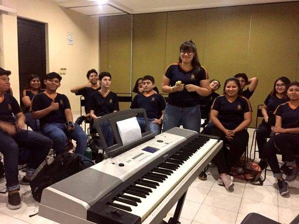
"El piano es como un mapa de toda la música: todo lo que existe en sonido cabe ahí, en blanco y negro."
El piano (o teclado) es uno de los instrumentos más visuales que existen. Las notas están ahí, ordenaditas de izquierda a derecha, de grave a agudo. No necesitas adivinar dónde está cada nota — la puedes ver. Por eso es perfecto para entender armonía, acompañar al coro, y componer.
Si nunca has tocado un piano, esta guía es para ti. Si ya lo tocas, salta a la sección "Para los que quieren más" al final.
Conoce tu Teclado
Las teclas blancas y negras
[INFOGRAFÍA: Teclado del piano — PRODUCIR]
┌──┐ ┌──┐ ┌──┐ ┌──┐ ┌──┐ ┌──┐ ┌──┐
│Do#│ │Re#│ │Fa#│ │Sol#│La#│ │Do#│ │Re#│
│Reb│ │Mib│ │Solb││Lab││Sib│ │Reb│ │Mib│
┌─┴──┴┬┴──┴─┬──┬─┴──┴┬┴──┴┬┴──┴─┬──┬─┴──┴┬┴──┴─┐
│ Do │ Re │ Mi│ Fa │ Sol│ La │ Si│ Do │ Re │
│ C │ D │ E │ F │ G │ A │ B │ C │ D │
└─────┴─────┴───┴─────┴────┴─────┴───┴─────┴─────┘
7 notas blancas que se repiten: Do Re Mi Fa Sol La Si (C D E F G A B)
5 notas negras entre medio: son los sostenidos (#) o bemoles (♭) — la misma tecla tiene 2 nombres.
Patrón clave para ubicarte: Las teclas negras vienen en grupos de 2 y 3. El Do siempre está justo a la izquierda del grupo de 2 negras. Una vez que ubicas el Do, todo lo demás cae en su lugar.
El Do Central
En un piano de 88 teclas, el Do Central (también llamado Do4 o C4) está más o menos en el centro del teclado. Es tu punto de referencia universal. Es la nota que conecta la clave de sol con la clave de fa en la partitura.
En un teclado de 61 teclas, generalmente es la tercera tecla Do contando desde la izquierda.
Manos a la obra: Encuentra todos los Do
Ubica TODOS los Do en tu teclado. Son las teclas blancas justo a la izquierda de cada grupo de 2 negras. ¿Cuántos encontraste? En un piano completo hay 8. Cada uno suena igual pero más agudo o grave que el anterior. Eso se llama octava.
Posición de las Manos
Numeración de los dedos
Mano izquierda
Dedo
Mano derecha
5
Meñique
5
4
Anular
4
3
Medio
3
2
Índice
2
1
Pulgar
1
Posición básica (Do mayor, mano derecha)
Coloca tu mano derecha con:
Pulgar (1) en Do
Índice (2) en Re
Medio (3) en Mi
Anular (4) en Fa
Meñique (5) en Sol
Imagina que sostienes una pelotita de tenis dentro de la mano — los dedos curvados, la muñeca relajada, y los dedos presionan con la punta (no con la yema plana).
Dato curioso: Los pianistas profesionales pueden mover cada dedo de forma completamente independiente. Pero eso toma años. Por ahora, solo asegúrate de que tus dedos estén curvados y relajados, no planos ni tensos.
Tus Primeros 4 Acordes: C, Am, F, G
Estos 4 acordes son la versión para piano de los "acordes mágicos" de la música pop. Con ellos puedes acompañar muchísimas canciones.
Cómo tocar un acorde en el piano
Un acorde básico (tríada) = 3 notas al mismo tiempo. Presionas las 3 teclas con la mano izquierda o derecha y suenan juntas.
Acorde de C (Do Mayor)
Notas: Do - Mi - Sol (C - E - G)
Dedos mano izquierda: 5 - 3 - 1
┌─┬─┬─┬─┬─┬─┬─┐
│●│ │●│ │●│ │ │
│C│D│E│F│G│A│B│
└─┴─┴─┴─┴─┴─┴─┘
Suena: alegre, abierto, brillante. Es "el acorde base" de la música.
Acorde de Am (La menor)
Notas: La - Do - Mi (A - C - E)
Dedos mano izquierda: 5 - 3 - 1
┌─┬─┬─┬─┬─┬─┬─┐
│ │ │●│ │ │●│ │ ← Do y Mi
│C│D│E│F│G│A│B│
└─┴─┴─┴─┴─┴─┴─┘
● ← La (una octava abajo)
Suena: melancólico, profundo, emotivo.
Acorde de F (Fa Mayor)
Notas: Fa - La - Do (F - A - C)
Dedos mano izquierda: 5 - 3 - 1
┌─┬─┬─┬─┬─┬─┬─┐
│●│ │ │●│ │●│ │
│C│D│E│F│G│A│B│
└─┴─┴─┴─┴─┴─┴─┘
Suena: cálido, nostálgico, como un suspiro.
Acorde de G (Sol Mayor)
Notas: Sol - Si - Re (G - B - D)
Dedos mano izquierda: 5 - 3 - 1
┌─┬─┬─┬─┬─┬─┬─┬─┬─┐
│ │ │ │ │●│ │●│ │●│
│C│D│E│F│G│A│B│C│D│
└─┴─┴─┴─┴─┴─┴─┴─┴─┘
Suena: poderoso, resuelto, como un final feliz.
Tu Primer Patrón de Acompañamiento
En lugar de tocar las 3 notas del acorde juntas todo el tiempo (que suena un poco estático), prueba el acorde partido (arpegio):
Mano izquierda, patrón básico:
Tiempo: 1 2 3 4
Acorde: Nota Nota Nota Nota
grave media aguda media
Para C: Do Mi Sol Mi
Para Am: La Do Mi Do
Para F: Fa La Do La
Para G: Sol Si Re Si
Toca cada nota por separado, una por tiempo, con un ritmo constante. Suena como un arpa suave — perfecto para acompañar una voz.
Tu turno: Acompaña "Someone Like You" de Adele
La progresión es: C - G - Am - F (repite)
Toca cada acorde partido durante 4 tiempos
Con metrónomo a 60-70 BPM
Cuando te sientas cómodo/a, canta encima (o pide a alguien que cante)
Tips Prácticos
Para principiantes
Empieza solo con la mano izquierda haciendo acordes mientras cantas. No intentes las dos manos al principio.
Practica los cambios de acorde antes que las canciones. Va de C a Am 10 veces. De Am a F 10 veces. De F a G 10 veces. Luego la secuencia completa.
Usa un teclado con sensibilidad (weighted keys) si puedes. Si no, cualquier teclado funciona para empezar.
No mires las teclas todo el tiempo. Intenta sentir la distancia entre notas. Tu mano tiene memoria muscular — confía en ella.
Para el ensamble
Tu rol: En el ensamble, el piano generalmente hace la armonía (acordes) y a veces la melodía. Coordina con el guitarrista para no duplicar.
Volumen: Si tocas con un teclado eléctrico, ajusta el volumen para que no tape al coro. Si tocas un piano acústico, controla la dinámica con los dedos.
Para los curiosos
Inversiones
Un acorde de C (Do-Mi-Sol) se puede tocar con Mi en el bajo (Mi-Sol-Do) o Sol en el bajo (Sol-Do-Mi). Son las mismas notas, pero suenan diferente. Esto se llama inversión y hace que los cambios de acorde sean más suaves.
Patrones de mano izquierda + derecha
Mano izquierda: nota grave (fundamental) en tiempos 1 y 3
Mano derecha: acorde en tiempos 2 y 4
Esto suena más lleno y es la base del acompañamiento de balada pop.
Acordes de séptima
Agrega una cuarta nota al acorde: Cmaj7 (Do-Mi-Sol-Si) suena a bossa nova. C7 (Do-Mi-Sol-Si♭) suena a blues. Am7 (La-Do-Mi-Sol) suena a neo-soul. Experimenta.
"El piano te muestra TODA la música en una superficie plana. Cada tecla es una puerta. No tienes que abrir las 88 hoy — empieza con 7 y ve agregando."
¿Sabías que el bajo eléctrico fue inventado en 1951 por Leo Fender? Antes de eso, todos usaban contrabajo — imagina cargar ESO al ensayo. El bajo eléctrico cambió la música popular para siempre.
Bajo: El que Sostiene Todo
"Sin el bajo, la música flota sin dirección. Con el bajo, todo tiene raíz."
El bajo es el instrumento más subestimado y más necesario de cualquier ensamble. No siempre se nota — pero cuando no está, todo el mundo lo siente. Es el puente entre el ritmo (batería/percusión) y la armonía (guitarra/piano). Es el esqueleto invisible que sostiene la canción.
Si tocas bajo (o quieres empezar), vas a descubrir el instrumento que nadie nota pero todos necesitan.
Conoce tu Bajo
Anatomía del bajo eléctrico
[INFOGRAFÍA: Anatomía del bajo eléctrico — PRODUCIR]
Partes principales:
┌──────────────────────────────┐
│ CLAVIJERO (cabeza) │ ← 4 clavijas de afinación
│ Clavijas (4) │
├──────────────────────────────┤
│ CEJUELA (nut) │
├──────────────────────────────┤
│ MÁSTIL │ ← Más largo y grueso que el de guitarra
│ Trastes │
│ Diapasón │
│ Marcadores (trastes │
│ 3, 5, 7, 9, 12) │
├──────────────────────────────┤
│ CUERPO │ ← Sólido (no hueco como la guitarra acústica)
│ Pastillas (pickups) │ ← Captan la vibración de las cuerdas
│ Perillas (volumen, tono) │
│ Puente │
│ Jack (donde conectas │
│ el cable al amplificador) │
└──────────────────────────────┘
Las 4 cuerdas (de la más gruesa a la más delgada)
Cuerda
Nota
Nemotécnico
Número
4ª (la más gruesa, arriba)
Mi grave (E)
El
4
3ª
La (A)
Alto
3
2ª
Re (D)
Dueño
2
1ª (la más delgada, abajo)
Sol (G)
Ganó
1
Nemotécnico: "El Alto Dueño Ganó"
Esto te va a sorprender: Las cuerdas del bajo son las mismas 4 cuerdas más gruesas de la guitarra (EADG), pero una octava más grave. Si tocas guitarra, ya sabes la afinación del bajo. Bonus.
Afinación
Igual que la guitarra, el bajo se afina SIEMPRE antes de tocar. Usa un afinador cromático o una app.
Cuerda 4: E (Mi)
Cuerda 3: A (La)
Cuerda 2: D (Re)
Cuerda 1: G (Sol)
Posición Básica
Mano izquierda (la que presiona las cuerdas)
Pulgar: Detrás del mástil, apuntando hacia arriba. Es tu ancla.
Dedos: Un dedo por traste. Si tu mano está en el traste 3: índice en traste 3, medio en traste 4, anular en traste 5, meñique en traste 6.
Presión: Presiona justo detrás del traste (no encima). No necesitas aplastar — solo lo suficiente para que suene limpio.
Mano derecha (la que toca las cuerdas)
Hay dos técnicas principales:
Dedos (fingerstyle) — La más usada:
Alterna entre índice y medio para tocar las cuerdas
El pulgar descansa sobre la pastilla (pickup) o sobre la cuerda de arriba como ancla
El movimiento es de "jalar" la cuerda hacia ti y dejar que tu dedo pase a la siguiente cuerda
Plumilla (pick) — Para sonido más agresivo:
Sujeta la plumilla entre pulgar e índice
Movimiento de muñeca, no de brazo
Alterna golpes hacia abajo y hacia arriba
Prueba esto: Ejercicio de alternancia
Toca la cuerda de La (3ª) al aire, alternando índice y medio de la mano derecha: i-m-i-m-i-m-i-m. Con metrónomo a 60 BPM, una nota por pulso. Suena simple pero es LA base de toda la técnica del bajo.
Cómo Leer Tablatura de Bajo
La tablatura (tab) es la forma más directa de leer música para bajo. Son 4 líneas (una por cuerda) y los números te dicen qué traste presionar.
G |-----|-----|-----|-----|
D |-----|-----|-----|-----|
A |--0--|--2--|--3--|--2--|
E |-----|-----|-----|-----|
= Toca la cuerda de La (A) en:
traste 0 (al aire), traste 2, traste 3, traste 2
Eso es: La, Si, Do, Si (las notas de la escala)
Reglas de lectura:
La línea de abajo = cuerda más gruesa (E)
La línea de arriba = cuerda más delgada (G)
0 = al aire (sin presionar)
Los números = qué traste presionar
Tus Primeros Patrones
Patrón 1: Raíz en negras
El trabajo más básico del bajo: tocar la nota fundamental del acorde, una vez por tiempo.
Acorde C (Do):
G |-----|-----|-----|-----|
D |-----|-----|-----|-----|
A |--3--|--3--|--3--|--3--| ← Do en traste 3 de la cuerda A
E |-----|-----|-----|-----|
Acorde Am (La menor):
G |-----|-----|-----|-----|
D |-----|-----|-----|-----|
A |--0--|--0--|--0--|--0--| ← La al aire
E |-----|-----|-----|-----|
Acorde G (Sol):
G |-----|-----|-----|-----|
D |-----|-----|-----|-----|
A |-----|-----|-----|-----|
E |--3--|--3--|--3--|--3--| ← Sol en traste 3 de la cuerda E
Parece aburrido, pero ESTO es exactamente lo que hace el bajo en el 80% de las canciones pop. La clave es hacerlo con buen ritmo y buen sonido.
Patrón 2: Raíz-quinta
Agrega la quinta del acorde para más movimiento:
Acorde C (Do):
G |-----|-----|-----|-----|
D |-----|-----|-----|-----|
A |--3--|--3--|-----|-----| ← Do, Do
E |-----|-----|--3--|--3--| ← Sol, Sol (quinta de Do... wait, está en la E)
Mejor así:
A |--3--|-----|--3--|-----| ← Do (tiempo 1 y 3)
E |-----|--3--|-----|--3--| ← Sol (tiempo 2 y 4)
Patrón 3: Walking bass básico
Camina entre las notas del acorde y las notas de paso:
Acorde C:
A |--3--|----|-----|-----|
E |-----|--0-|--1--|--2--| ← Do, Mi(abierto no, corregir)
Simplificado:
A |--3--|--2--|--0--|-----| ← Do, Si, La
E |-----|-----|-----|--3--| ← Sol
El walking bass es como caminar con la música — cada paso te lleva al siguiente acorde.
Reto rápido: Tu Primera Línea de Bajo
"Stand By Me" — Ben E. King
Una de las líneas de bajo más famosas y fáciles del mundo:
Tonalidad de C:
A |--3--3--3--3--|--3--3--3--3--|
E |--------------|--------------| (Do, Do, Do, Do)
A |--0--0--0--0--|--0--0--0--0--|
E |--------------|--------------| (La, La, La, La = Am)
A |--------------|--3--3--3--3--|
E |--1--1--1--1--|--------------| (Fa, Fa... = F, luego G)
A |--3--3--3--3--|--3--3--3--3--|
E |--------------|--------------| (vuelta a C)
Progresión: C — Am — F — G — C
Con metrónomo a 100 BPM. Cuando te salga fluido, intenta agregar la raíz-quinta en cada acorde.
Tips Prácticos para el Ensamble
Escucha a la batería/percusión. Tu trabajo es conectar el ritmo con la armonía. Si te sincronizas con el bombo de la batería, todo el ensamble suena sólido.
Menos es más. Un bajo que toca las notas correctas en el momento correcto suena mejor que un bajo que toca mil notas fuera de lugar.
Cuidado con el volumen. El bajo tiene mucha energía en frecuencias graves. Si suena muy fuerte, tapa todo lo demás. Ajusta para que se sienta más de lo que se escucha.
Marca el cambio de acorde. La primera nota de cada nuevo acorde es tu responsabilidad — cuando tú tocas la raíz, todo el grupo sabe dónde estamos.
Profundiza aquí
Slap básico
El slap es esa técnica donde pegas con el pulgar en la cuerda (slap) y jalas con el índice (pop). Suena funky, agresivo, y muy cool. Empieza con: slap en la cuerda de E + pop en la cuerda de G. Practica el rebote del pulgar — debe rebotar como una baqueta en un tambor, no quedarse pegado.
Patrones de funk
La diferencia entre un bajista normal y un bajista funky es el uso de notas fantasma (ghost notes) — notas que apenas se escuchan pero dan groove. Toca suavemente las cuerdas sin presionar ningún traste: "tch-tch" entre las notas reales. Eso es lo que hacía Flea (Red Hot Chili Peppers) y lo que hace la magia.
Líneas de bajo melódicas
Escucha "Come Together" de los Beatles (Paul McCartney), "Money" de Pink Floyd, o "Another One Bites the Dust" de Queen (John Deacon). Todas son líneas de bajo que son prácticamente la melodía de la canción. Cuando llegas a ese nivel, el bajo deja de ser "acompañamiento" y se convierte en protagonista.
"El bajista no es el que suena más fuerte. Es el que hace que TODOS suenen mejor. Eso es un habilidad secreta silencioso."
Reto rápido antes de empezar: Aplaude 4 veces iguales. Ahora golpea tus muslos 2 veces, aplaude 1 vez, chasquea 1 vez. Repite. Acabas de hacer percusión corporal — y no necesitaste ningún instrumento.
Percusión: El Corazón del Ensamble
"No necesitas instrumento para hacer percusión — tu cuerpo YA ES uno."
La percusión es lo primero que existió en la música. Antes de que existieran cuerdas, teclas o siquiera melodías, alguien golpeó un tronco con un palo y descubrió el ritmo. Ese ritmo está en todo: en tu corazón, en tu caminar, en el tic-tac del reloj, en el goteo de la lluvia.
Si tocas batería, bongós, cajón, claves, o si simplemente te gusta golpear cosas con ritmo — esta sección es tu territorio. Y si nunca has tocado percusión, prepárate: vas a descubrir que ya eres percusionista sin saberlo.
Percusión Corporal: Tu Primer Instrumento
Antes de tocar cualquier instrumento de percusión, vamos con el que ya tienes: tu cuerpo.
Los 5 sonidos corporales básicos
Sonido
Cómo hacerlo
Carácter sonoro
Equivalente en batería
Palmas
Manos planas, una contra otra
Agudo, seco, definido
Caja (snare)
Muslos
Palmas planas contra los muslos (sentado)
Medio, suave, cálido
Tom
Pecho
Puño cerrado (suave) contra el pecho
Grave, profundo
Bombo (bass drum)
Pies
Pisada firme contra el piso
Grave, sólido
Bombo
Chasquidos
Dedo medio contra la base del pulgar
Agudo, metálico
Hi-hat
Ahora tú: Tu primer beat corporal
Combina estos sonidos para hacer un ritmo de 4 tiempos:
Tiempo: 1 2 3 4
Pecho:
Palmas:
Pies:
Lee: PECHO-PALMA-PECHO-PALMA
con pie en cada tiempo
¡Eso es un ritmo de rock básico hecho con tu cuerpo!
Ahora hazlo 4 veces seguidas sin parar. Cuando te salga fluido, intenta hacerlo con metrónomo a 80 BPM.
Para que lo sepas: Hay grupos enteros que hacen música solo con percusión corporal — como STOMP o Barbatuques. Búscalos en YouTube. Te sorprendería lo que se puede hacer sin ningún instrumento.
Batería: Las Partes Básicas
Si el aula tiene batería (o si tocas una), aquí están las partes que necesitas conocer:
Anatomía básica de la batería
[INFOGRAFÍA: Partes de la batería — PRODUCIR]
Vista desde arriba:
Platillo Crash Platillo Ride
\ /
Hi-Hat Tom 1 Tom 2
| | |
| Tom de piso
|
Caja (Snare)
|
⚫ Bombo (Bass drum) — se toca con pedal
Pieza
Sonido
Función
Bombo (bass drum) ⚫
Grave, profundo: "BUM"
El pulso — marca los tiempos fuertes (1 y 3)
Caja (snare)
Agudo, seco: "TAK"
El acento — marca los tiempos 2 y 4 (el backbeat)
Hi-hat
Metálico, constante: "tss-tss-tss"
La subdivisión — mantiene el flujo constante
Toms
Medios, melódicos: "tom-tom"
Rellenos (fills) — transiciones entre secciones
Platillos
Brillantes, largos: "TSHHH"
Acentos — marcar comienzos de sección
Tu primer ritmo de rock
Hi-hat: x x x x x x x x
Caja: TAK TAK
Bombo: BUM BUM BUM
Contando: 1 y 2 y 3 y 4 y
Traducción: el hi-hat va en todos los tiempos (constante), el bombo en 1 y 3, la caja en 2 y 4.
ESTE es el ritmo que suena en el 90% del rock y pop. Si lo dominas, puedes tocar cientos de canciones.
Percusiones Latinas: El Sabor del Ensamble
En el aula tenemos percusiones latinas Aquí en Yucatán, los mayas tenían el tunkul — un tambor de madera que se tocaba en ceremonias. La percusión lleva siglos en esta tierra. y menores. Cada una tiene su personalidad y su patrón básico.
Claves
Dos palitos de madera. El instrumento más simple y más importante de la música latina.
Patrón de clave 3-2 (son):
Tiempo: 1 y 2 y 3 y 4 y
Clave: X X X X X
Lee: TIN TIN TIN TIN TIN
(3 golpes) (2 golpes)
Este patrón es la COLUMNA de la salsa, el son cubano, y mucha música latina. Todo lo demás se organiza alrededor de la clave.
Maracas
Agita con ritmo constante. El truco: una mano marca los tiempos fuertes (1, 2, 3, 4) y la otra rellena los "y" entre medio.
Mano der: X X X X
Mano izq: x x x x
Contando: 1 y 2 y 3 y 4 y
Suena: TCA tca TCA tca TCA tca TCA tca
Güiro
Ese instrumento rugoso que se raspa con un palito. El patrón básico:
Largo: ───────>
Corto: -> ->
Patrón: ───────> -> -> ───────> -> ->
Contando: 1 y 2 y 3 y 4 y
Bongós
Dos tambores pequeños unidos — uno agudo (macho) y uno grave (hembra). Se tocan con los dedos.
Patrón básico (martillo):
Agudo: x x x x x
Grave: X X
Contando: 1 y 2 y 3 y 4 y
Cajón peruano
Una caja de madera donde te sientas encima y tocas con las manos. Dos sonidos principales:
Zona
Sonido
Cómo
Centro
Grave (como bombo)
Palma plana en el centro de la tapa
Borde superior
Agudo (como caja)
Dedos en el borde de arriba
Patrón básico de cajón (rock/pop):
Agudo: TAK TAK
Grave: BUM BUM BUM
Contando: 1 y 2 y 3 y 4 y
¡Es el mismo patrón del ritmo de rock de la batería, pero en un cajón!
Cómo Leer un Patrón Rítmico de Percusión
Los patrones de percusión se escriben con una notación simplificada:
X = golpe fuerte / acento
x = golpe suave
. = silencio
> = acento especial
Ejemplo de ritmo de cumbia:
Hi-hat: x . x . x . x . x . x . x . x .
Caja: . . . . X . . . . . . . X . . .
Bombo: X . . . . . X . X . . . . . X .
Tu Primer Acompañamiento: 3 Ritmos Esenciales
Ritmo de Rock / Pop
Hi-hat: x x x x x x x x
Caja: X X
Bombo: X X X
Úsalo para: rock, pop, balada, soundtrack
Ritmo de Cumbia
Hi-hat: x x x x x x x x
Caja: X X
Bombo: X X X X
La diferencia con el rock: el bombo va en TODOS los tiempos. Eso le da el rebote.
Ritmo de Son / Bolero MX
Claves: X X X X X (clave 3-2)
Maracas: x x x x x x x x
Bongós: x x x x x
Güiro: ───────> -> -> ───────> -> ->
Todos juntos crean el tejido rítmico de la música latina. Cada instrumento hace algo diferente pero encajan como engranajes.
Tips para el Ensamble
Tú eres el reloj. Si la percusión acelera, todo el ensamble acelera. Si frena, todos frenan. Tu tempo debe ser sólido como roca.
Practica con metrónomo. No es opcional. El metrónomo es tu mejor amigo y tu crítico más honesto.
Toca para la canción, no para lucirte. Un ritmo simple bien ejecutado suena infinitamente mejor que un fill complicado fuera de tiempo.
Escucha al bajo. Tú y el bajista son la sección rítmica — si se coordinan, todo suena profesional. Si no, suena a desastre.
Dinámicas: No toques siempre igual de fuerte. En los versos, suave. En los coros, más fuerte. En los momentos íntimos, casi en silencio. La percusión es emoción.
Para los que quieren más
Fills (rellenos)
Un fill es una frase rítmica corta que se toca en la transición entre secciones (por ejemplo, entre el verso y el coro). Básico: tom 1 → tom 2 → tom de piso → platillo crash en el 1 del siguiente compás.
Polirritmos
Tocar un patrón con una mano y otro diferente con la otra. Ejemplo: 3 contra 2 (una mano toca 3 golpes iguales mientras la otra toca 2 en el mismo tiempo). Es difícil al principio pero entrena la independencia de manos como nada.
Percusión en la música yucateca
La jarana yucateca usa güiro, timbales pequeños y a veces cajón. Si quieres explorar la música de tu región con percusión, hay un mundo entero ahí.
"Las claves son el instrumento más subestimado del mundo. 2 palitos de madera + ritmo = poder absoluto."
Por cierto: la palabra "ensamble" viene del francés ensemble, que simplemente significa "juntos". No es una palabra técnica complicada — es literalmente "tocar juntos". Y resulta que es lo más difícil y lo más gratificante de la música.
Ensamble: Los 3 Pilares
Algo que siempre les digo antes del primer ensayo grupal: lo más difícil de tocar en ensamble no es tu parte — es ESCUCHAR a los demás mientras tocas la tuya. Parece sencillo, pero cambia todo.
Cómo se Arma una Canción
— Memo: Un gran músico no es el que toca mejor o más fuerte. Es el que hace que sus compañeros suenen mejor.
"Patitos, si uno falla, todos fallan."
"Solo es de esas cosas que te marcan. Juntos es mágico."
Imagina una canción que te encanta — la que sea. Ahora imagina que le quitas la batería. Suena vacía. Quítale los acordes de guitarra o piano. Se siente hueca. Quítale la voz o la melodía. Ya no es canción.
Cada parte necesita a las demás. Y eso es exactamente lo que somos en el ensamble del taller: un grupo de personas que hace algo que ninguno podría hacer solo.
Los 3 Pilares de la Música
Toda la música (TODA: desde reggaetón hasta Beethoven, desde Disney hasta trova yucateca) se construye sobre 3 pilares:
Pilar 1: RITMO
Quién lo hace: Batería, percusión, cajón, palmas, cuerpo Qué hace: Marca el tiempo, da el pulso, crea el groove Analogía: Es el esqueleto del cuerpo. Sin él, todo se desploma.
Pilar 2: ARMONÍA
Quién lo hace: Guitarra (acordes), piano/teclado, bajo Qué hace: Pone los colores, crea la atmósfera, define si suena alegre, triste, épico o íntimo Analogía: Es la piel y la ropa — le da carácter y personalidad.
Pilar 3: MELODÍA
Quién lo hace: Voz (coro), instrumentos melódicos (flauta, violín, etc.) Qué hace: Cuenta la historia, es la línea que todos reconocen y tararean Analogía: Es la cara — lo primero que notas y lo que recuerdas.
[INFOGRAFÍA: Los 3 Pilares del Ensamble — PRODUCIR]
╔═══════════════╗
║ MELODÍA ║ ← Lo que todos cantan/tararean
║ (voz, flauta) ║
╚═══════╦═══════╝
║
╔═══════╩═══════╗
║ ARMONÍA ║ ← Los acordes que dan color
║(guitarra,piano)║
╚═══════╦═══════╝
║
╔═══════╩═══════╗
║ RITMO ║ ← El pulso que sostiene todo
║ (percusión) ║
╚═══════════════╝
Cómo Encajan las Piezas: Cada Instrumento Tiene su Rol
En nuestro ensamble, cada persona cumple una función específica. No hay instrumentos más o menos importantes — hay instrumentos con diferentes trabajos.
Instrumento
Pilar
Su trabajo en el ensamble
Analogía en un equipo de futbol
Batería / Percusión
Ritmo
Mantener el tempo, dar el groove, marcar las secciones
Portero + defensa central
Bajo
Ritmo + Armonía
Conectar el ritmo con los acordes, dar profundidad
Mediocampista defensivo
Guitarra (acordes)
Armonía
Llenar el espacio con los acordes, dar el color emocional
Mediocampista creativo
Piano/Teclado
Armonía (+ melodía)
Acordes, contramelodías, rellenos melódicos
Mediocampista ofensivo
Coro
Melodía (+ armonía)
Llevar la melodía principal, armonizar en 2-3 voces
Delanteros
Percusión menor (claves, maracas, güiro)
Ritmo
Agregar textura y sabor al ritmo base
Laterales
La regla de oro del ensamble
Ningún instrumento es más importante que el grupo.
Si el guitarrista toca fortísimo y no se escucha al coro, hay un problema. Si la batería va a un tempo diferente que el bajo, todo se desmorona. Si todos tocan al mismo volumen todo el tiempo, suena plano y aburrido.
El ensamble funciona cuando todos se ESCUCHAN entre sí.
Escucharse: La Habilidad #1 del Ensamble
No es broma: la habilidad más importante cuando tocas con otros NO es tocar bien tu instrumento. Es escuchar lo que están haciendo los demás mientras tocas.
¿Por qué es tan difícil?
Porque tu cerebro quiere enfocarse en una sola cosa a la vez. Cuando estás concentrado en tus acordes de guitarra o en tu línea de bajo, tu atención se va hacia adentro y dejas de escuchar al grupo. Es natural — pero hay que entrenarlo.
Tips para mejorar la escucha en ensamble
Toca más suave de lo que crees necesario. Si tocas fuerte, solo te escuchas a ti. Si tocas suave, escuchas a TODOS.
Antes de empezar una canción, haz 4 compases solo escuchando. Deja que la percusión marque 4 compases. Solo escucha. Siente el tempo. LUEGO entra.
Busca al bajista/percusionista con el oído. Ellos son tu ancla rítmica. Si estás sincronizado con ellos, estás en el lugar correcto.
Mira al director (o al que dirige la sección). El contacto visual comunica entradas, dinámicas y cambios sin necesidad de palabras.
Si te pierdes, ESPERA. No intentes adivinar dónde va la canción. Deja de tocar por un momento, escucha dónde están los demás, y reincorpórate en el siguiente "1" (el primer tiempo del compás).
Prueba esto: El juego del volumen
En un ensayo, intenten esto: todos tocan una canción que ya se saben. El director señala con la mano: mano arriba = sube el volumen, mano abajo = baja el volumen. Vean qué tan suave pueden tocar sin dejar de sonar juntos. Ese control es la diferencia entre un grupo y un ENSAMBLE.
Las Dinámicas: El Secreto de los Profesionales
Las dinámicas son los cambios de volumen durante una canción. Y son lo que separa a un ensamble escolar que suena "bien" de uno que suena increíble.
Dinámica
Significado
Cuándo usarla
pp (pianissimo)
Muy suave
Momentos íntimos, inicio de una balada
p (piano)
Suave
Versos, partes conversacionales
mp (mezzopiano)
Medio-suave
Verso con algo de intensidad
mf (mezzoforte)
Medio-fuerte
Precoro, transiciones
f (forte)
Fuerte
Coros, momentos de energía
ff (fortissimo)
Muy fuerte
Clímax, final épico
La regla práctica de dinámicas
Verso: p ──────> mp ──────> mf (va creciendo)
Coro: f ──────────────────────
Puente: mp ──────────> ff (construye al clímax)
Final: ff ──────> p (o al revés, dependiendo de la canción)
Piensa en tu canción favorita: ¿empieza suave y termina fuerte? ¿O empieza fuerte, baja en el puente, y explota en el coro final? Eso son dinámicas, y nosotros las vamos a aplicar en nuestras presentaciones.
Dato curioso: La orquesta que acompaña las películas de Hans Zimmer (Inception, Interstellar, Piratas del Caribe) usa dinámicas extremas — pasa de un susurro a una explosión en 2 compases. Eso es lo que te da la piel chinita en el cine.
Tips de Ensamble: Las 7 Reglas de Oro
Estas reglas aplican desde tu primer ensayo hasta la presentación final:
1. "Toca más suave de lo que crees"
Si todos tocan fuerte, nadie se escucha. Si todos tocan un poco más suave, todos se escuchan. Es contraintuitivo pero funciona.
2. "Mira al director"
En un ensamble, el director (Memo, o el compañero que dirige) es el GPS de todos. Si todos miran al director, las entradas son limpias y los finales son precisos.
3. "Si te pierdes, espera al 1"
El "1" es el primer tiempo de cada compás. Es como un punto de encuentro. Si te perdiste en el compás 3, espera al siguiente "1" y reincorpórate. Nadie va a notar si te saltaste medio compás. Todos van a notar si entras en un lugar random.
4. "Tu error importa menos de lo que crees"
En un ensamble de 15-20 personas, un error individual casi no se nota si tú sigues adelante con confianza. Lo que SÍ se nota es si te detienes, si pones cara de pánico, o si dejas de tocar por vergüenza.
5. "Respeta el espacio sonoro"
No todos los instrumentos deben sonar todo el tiempo. A veces la guitarra descansa mientras el piano llena. A veces la percusión baja mientras el coro canta a cappella. Dejar espacio es tan musical como llenar espacio.
6. "Conecta con alguien"
Busca contacto visual con al menos un compañero/a durante el ensayo. Puede ser el bajista, el que está al lado tuyo en el coro, o el percusionista. Esa conexión humana es lo que transforma notas en música.
7. "Disfruta"
Al final del día, esto es un taller de música, no una competencia. Si te diviertes tocando, se nota. Si estás tenso/a y asustado/a, también se nota. Respira, sonríe, y deja que la música fluya.
Cómo se Prepara una Canción para el Ensamble
Cuando montamos una canción nueva para el ensamble, seguimos estos pasos:
Paso 1: ESCUCHAR
→ Todos escuchan la canción original juntos
→ Identificar: ¿cuál es la melodía? ¿los acordes? ¿el ritmo?
Paso 2: SEPARAR
→ Cada sección aprende su parte por separado
→ Coro ensaya la melodía/armonía vocal
→ Instrumentistas aprenden sus partes
Paso 3: UNIR POR CAPAS
→ Primero: solo percusión + bajo (la base rítmica)
→ Después: agregar guitarra/piano (la armonía)
→ Al final: agregar coro (la melodía)
→ Como construir un edificio: cimientos → muros → techo
Paso 4: PULIR
→ Trabajar dinámicas (dónde sube, dónde baja)
→ Limpiar entradas y salidas
→ Ensayar transiciones entre secciones
→ Agregar detalles (un fill de batería aquí, un silencio dramático allá)
Paso 5: PRESENTAR
→ Ensayo general (como si fuera la presentación real)
→ Notas de ajuste
→ ¡AL ESCENARIO!
Para los que quieren explorar más
Arreglar canciones para el ensamble
Si te interesa decidir quién toca qué y cómo suena el ensamble, estás pensando como un arreglista. En el segundo semestre vamos a trabajar esto a fondo — aprender a tomar una canción y adaptarla a los instrumentos y voces que tenemos.
Dirigir una sección
Si dominas tu parte y puedes ayudar a otros a aprender la suya, puedes ser líder de sección. Es como ser capitán de un equipo — tu trabajo es que todos en tu sección sepan su parte y entren a tiempo.
Composición colectiva
El nivel máximo del ensamble: crear una canción ORIGINAL entre todos. Cada sección propone su parte, se negocia, se ajusta, y al final tienen una pieza que no existe en ningún otro lugar del mundo. Eso lo haremos en el segundo semestre.
"Hacer música con otros es la forma más antigua de decir: 'estoy aquí contigo.' Y cuando el ensamble suena bien, todos lo sienten — los que tocan y los que escuchan."
"¿Por qué esa canción te pone triste? Aquí vas a descubrir la respuesta."
¿Qué es un acorde?
Imagina que estás con dos amigos. Cada uno dice una palabra diferente, pero al mismo tiempo. Si las palabras se complementan, el resultado tiene sentido — como una frase dicha entre tres.
Eso es un acorde: 3 o más notas sonando al mismo tiempo. Así de simple. Les cuento algo: cuando yo descubrí qué eran los acordes, sentí que me habían dado los lentes para ver la Matrix. De repente todas las canciones que escuchaba tenían sentido. Les va a pasar lo mismo.
Cuando tocas un Do, un Mi y un Sol juntos en el piano, estás tocando el acorde de Do mayor. Cuando rasgueas las cuerdas de la guitarra con los dedos en posición de La menor, estás tocando un acorde. Cada vez que en una canción escuchas esa "cama de sonido" sobre la que va la melodía… esos son acordes.
Dato curioso: La palabra "acorde" viene del latín accordare, que significa "poner de acuerdo". Literalmente: poner notas de acuerdo entre sí.
Mayores vs. Menores: Los dos sabores básicos
No todos los acordes suenan igual. Los dos tipos más comunes son los mayores y los menores, y la diferencia es… emocional.
Tipo
Cómo suena
Piensa en…
Ejemplo
Mayor
Brillante, alegre, abierto
Un día soleado en la playa
Do mayor (C), Sol mayor (G)
Menor
Melancólico, profundo, introspectivo
Una tarde de lluvia con tu playlist sad
La menor (Am), Re menor (Dm)
¿La diferencia técnica? Una sola nota cambia. En un acorde mayor, la nota del medio (la tercera) está un poquito más arriba que en un acorde menor. Eso es todo. Un medio tono de diferencia entre alegría y melancolía.
Tu turno: Si tienes guitarra o piano a la mano, toca un Do mayor (C). Ahora toca un Do menor (Cm). ¿Escuchas cómo cambia la emoción? Esa nota que bajó medio tono lo cambió TODO.
Los 4 Acordes Mágicos
Aquí viene la parte que te va a volar la cabeza.
Existe una progresión de 4 acordes que aparece en CIENTOS de canciones famosas. Se escribe así en números romanos:
I – V – vi – IV
En la tonalidad de Do mayor, eso se traduce a:
Grado
Acorde
Cifrado
I
Do mayor
C
V
Sol mayor
G
vi
La menor
Am
IV
Fa mayor
F
¿Y qué canciones usan estos 4 acordes? Prepárate:
"Someone Like You" — Adele "Let It Be" — The Beatles "Nada" — Zoé "No Woman, No Cry" — Bob Marley "With or Without You" — U2 "Zombie" — The Cranberries "Can You Feel the Love Tonight" — Elton John (El Rey León) "Photograph" — Ed Sheeran "Riptide" — Vance Joy "Don't Stop Believin'" — Journey
Y como 500 más. No estamos exagerando.
¿Sabías que...? El comediante australiano Axis of Awesome hizo un video tocando 40+ canciones seguidas con los mismos 4 acordes. Se volvió viral. Búscalo: "4 Chords" — es real y es hilarante.
Cómo tocarlos
En guitarra
C G Am F
e|--0-- e|--3-- e|--0-- e|--1--
B|--1-- B|--0-- B|--1-- B|--1--
G|--0-- G|--0-- G|--2-- G|--2--
D|--2-- D|--0-- D|--2-- D|--3--
A|--3-- A|--2-- A|--0-- A|--3--
E|--x-- E|--3-- E|--x-- E|--1--
Si Fa (F) te cuesta por la cejilla, no te preocupes — es el acorde que MÁS trabajo le da a los guitarristas principiantes. Intenta esta versión simplificada mientras tanto:
F (fácil)
e|--1--
B|--1--
G|--2--
D|--3--
A|--x--
E|--x--
En piano/teclado
C = Do + Mi + Sol (teclas blancas: C - E - G)
G = Sol + Si + Re (teclas blancas: G - B - D)
Am = La + Do + Mi (teclas blancas: A - C - E)
F = Fa + La + Do (teclas blancas: F - A - C)
¿Lo notaste? En la tonalidad de Do mayor, los 4 acordes mágicos se tocan solo con teclas blancas. Cero complicaciones.
Si quieres entender POR QUÉ un acorde suena como suena (y no solo memorizarlos), aquí va la fórmula:
Acorde Mayor = Tónica + 3ª Mayor + 5ª Justa
Traducción: la nota base + la nota que está 4 semitonos arriba + la nota que está 7 semitonos arriba desde la base.
Acorde Menor = Tónica + 3ª Menor + 5ª Justa
Traducción: la nota base + la nota que está 3 semitonos arriba + la nota que está 7 semitonos arriba desde la base.
¿Ves? La única diferencia entre mayor y menor es esa tercera: 4 semitonos (mayor) vs 3 semitonos (menor). Un solo medio tono cambia todo.
Tu turno: Pon tu canción favorita y escucha con atención. ¿Puedes identificar cuándo suenan acordes mayores y cuándo menores? Al principio es difícil, pero con práctica tu oído lo detecta automáticamente.
Para los que quieren más
Si ya dominas las tríadas mayores y menores, el mundo armónico tiene mucho más por ofrecerte:
Acordes de séptima
Agrega una 4ª nota al acorde y cambia completamente el color:
Acorde
Notas
Carácter
Cmaj7 (Do mayor séptima)
Do Mi Sol Si
Suave, soñador, bossa nova
C7 (Do séptima dominante)
Do Mi Sol Sib
Tenso, bluesy, quiere resolver
Cm7 (Do menor séptima)
Do Mib Sol Sib
Jazzy, sofisticado, melancólico
Cdim7 (Do disminuido séptima)
Do Mib Solb La
Misterioso, suspenso de película
Acordes suspendidos
Ni mayores ni menores — están en un limbo emocional:
Csus2 (Do La Re): Abierto, flotante, como un amanecer
Csus4 (Do Fa Sol): Tenso, quiere resolver a mayor — muy usado en rock
Reto
Toca la progresión I-V-vi-IV en Do mayor, pero reemplaza cada acorde con su versión séptima (Cmaj7 – G7 – Am7 – Fmaj7). ¿Cómo cambia la vibra? Suena a café, noche tranquila y buena conversación.
"Con 4 acordes puedes tocar cientos de canciones. Con la curiosidad de explorar más allá, puedes crear la tuya."
"La música no manipula tus emociones por arte de magia — lo hace con matemáticas hermosas."
¿Qué es una progresión armónica?
Esto va a requerir un poco más de concentración que las secciones anteriores. La armonía es donde la música se pone más "cerebral". Si al principio no le encuentras sentido, no te frustres — es normal. Dale tiempo.
Una progresión es simplemente una secuencia de acordes que se repite a lo largo de una canción. Es el camino que recorre la armonía.
Piénsalo así: si los acordes son las estaciones de un tren, la progresión es la ruta del tren. Siempre va por las mismas estaciones, en el mismo orden, una y otra vez — y cada ruta te lleva a un lugar emocional diferente.
La mayoría de las canciones pop que escuchas usan una de unas pocas progresiones muy conocidas. Y cuando las aprendas a reconocer, la música nunca va a volver a sonar igual para ti.
Las 4 Progresiones del Pop
1. I – V – vi – IV: La Clásica del Pop
Esta es LA progresión. La que suena en todos lados. La que aparece en comerciales, películas y la radio cada 5 minutos.
En Do mayor: C – G – Am – F
¿Cómo suena? Épica, emotiva, universal. Funciona para TODO: baladas, himnos, rock, pop, reggaetón, Disney.
Canciones que la usan:
"Someone Like You" — Adele
"Let It Be" — The Beatles
"Nada" — Zoé
"No Woman, No Cry" — Bob Marley
"Can You Feel the Love Tonight" — Elton John (El Rey León)
"Photograph" — Ed Sheeran
"Riptide" — Vance Joy
"Pompeii" — Bastille
¿Por qué funciona? Empieza en casa (I), sube la energía (V), pasa por un momento emocional (vi menor) y resuelve con calidez (IV). Es un viaje emocional completo en 4 acordes.
2. i – III – VII – VI: La Dramática
Esta progresión vive en tonalidad menor. Es oscura, intensa, cinematográfica.
En La menor: Am – C – G – F
¿Cómo suena? Poderosa, dramática, como un soundtrack de película épica. Te da ganas de caminar en cámara lenta con el viento en la cara.
Canciones que la usan:
"Rolling in the Deep" — Adele
"Radioactive" — Imagine Dragons
"Pumped Up Kicks" — Foster the People
"All of Me" — John Legend (variación)
Básicamente cualquier trailer de película épica
¿Por qué funciona? Estar en menor le da un tono serio y emocional. Los acordes mayores dentro de la tonalidad menor (III y VII) crean momentos de luz entre la oscuridad — como un rayo de sol entre las nubes.
3. I – vi – IV – V: La de los Años 50
Esta progresión dominó la música de los 50s y 60s, pero sigue apareciendo en baladas modernas.
En Do mayor: C – Am – F – G
¿Cómo suena? Nostálgica, cálida, como un abrazo. Piensa en canciones de amor atemporales.
Canciones que la usan:
"Stand By Me" — Ben E. King
"Every Breath You Take" — The Police
"Last Kiss" — Pearl Jam / Taylor Swift
"Unchained Melody" — Righteous Brothers
"Earth Angel" — The Penguins (la de Volver al Futuro)
"Creep" — Radiohead (variación)
¿Por qué funciona? Empieza alegre (I), pasa por la melancolía (vi), crea tensión suave (IV) y resuelve con fuerza (V que quiere volver al I). Es un ciclo perfecto de emoción.
Dato curioso: Esta progresión se conoce como "doo-wop changes" porque los grupos vocales de los 50s la usaban CONSTANTEMENTE. Si alguna vez has visto "Grease", ahí está.
4. vi – IV – I – V: La Emotiva
Mismos 4 acordes que la primera progresión, pero empezando desde otro punto. Y suena COMPLETAMENTE diferente.
En Do mayor: Am – F – C – G
¿Cómo suena? Vulnerable, íntima, como cuando le confiesas algo a alguien. Muy usada en pop latino y baladas modernas.
Canciones que la usan:
"Despacito" — Luis Fonsi ft. Daddy Yankee
"Memories" — Maroon 5
"Save Tonight" — Eagle-Eye Cherry
"Complicated" — Avril Lavigne
"Africa" — Toto (variación)
¿Por qué funciona? Empezar en menor (vi) te pone en un estado emocional vulnerable desde el primer acorde. Luego el camino hacia el I mayor se siente como una resolución, como encontrar la luz.
¿Cómo identificar progresiones?
No necesitas oído absoluto ni 10 años de conservatorio. Solo necesitas práctica y atención:
Escucha el bajo. La nota más grave en cada sección te dice cuál es el acorde fundamental.
Siente el "reposo". El acorde donde la canción se siente "en casa" probablemente es el I.
Busca el patrón. Las progresiones se repiten — si identificas 4 compases, probablemente tienes la progresión completa.
Canta la línea de bajo. Tararea la nota más grave de cada acorde. Eso te ayuda a separar la armonía de la melodía.
Haz esto ahora: Pon 5 canciones que te gusten. Intenta identificar cuál de las 4 progresiones están usando. No importa si no aciertas a la primera — el ejercicio entrena tu oído.
La gran revelación
¿Te fijaste que las 4 progresiones usan los mismos 4 acordes (I, IV, V, vi)? Solo cambian el orden.
Eso significa que en la tonalidad de Do mayor, prácticamente toda la música pop se puede tocar con C, F, G y Am. Cuatro acordes. Miles de canciones. Diferentes emociones.
La magia no está en los acordes — está en el orden en que los pones, el ritmo que les das, y la historia que cuentas encima.
Más allá de las emociones: ¿Cómo funciona esto?
Cada acorde dentro de una tonalidad tiene una "personalidad" o función:
Grado
Función
Personalidad
I
Tónica
CASA. Reposo, estabilidad, "aquí empiezo y aquí termino"
ii
Supertónica
Transición suave, preparación
iii
Mediante
Sutil, conectora, puente entre mundos
IV
Subdominante
Calidez, movimiento, "voy de viaje"
V
Dominante
TENSIÓN. "Necesito resolver, quiero volver a casa"
vi
Relativo menor
Emoción, melancolía, vulnerabilidad
vii°
Sensible
Máxima tensión, inestabilidad, rara vez aparece sola
Las progresiones funcionan porque juegan con la tensión y la resolución. Van de casa (I) → viaje (IV, vi) → tensión (V) → vuelta a casa (I). Ese ciclo es tan natural para nuestro cerebro como inhalar y exhalar.
Para los que quieren más
Funciones tonales a fondo
En armonía clásica y jazz, los acordes se agrupan en 3 familias funcionales:
Función
Acordes
Qué hacen
Tónica
I, iii, vi
Reposo, estabilidad
Subdominante
IV, ii
Movimiento, alejamiento
Dominante
V, vii°
Tensión, necesidad de resolver
Toda la armonía funcional se reduce a: Tónica → Subdominante → Dominante → Tónica. Ese es el ciclo de la música occidental desde hace 400 años.
Progresiones menos comunes pero geniales
I – IV – vi – V: "With or Without You" (U2), "Firework" (Katy Perry)
i – iv – v – i: Blues menor puro
I – IV – I – V: Rock and roll clásico ("La Bamba", "Twist and Shout")
ii – V – I: La progresión del jazz por excelencia
Reto
Escucha 10 canciones de tu playlist esta semana. Para cada una, anota:
¿Está en mayor o menor?
¿Cuántos acordes diferentes escuchas?
¿Se parece a alguna de las 4 progresiones?
¿Qué emoción te genera y por qué crees que esa progresión lo causa?
Trae tus notas al taller — las compartimos y hacemos una estadística grupal de cuáles progresiones dominan nuestras playlists.
"Ahora ya sabes: cada vez que una canción te eriza la piel, no es casualidad. Es armonía."
— Memo: En junio de 2008, después de querer tirar la toalla muchas veces, en mi ensayo general escuché mi arreglo de La Bella y la Bestia. Lloré. Después de tantos fallos, por fin la música de mi cabeza sonaba en la realidad.
"Un arreglo es como cocinar: la receta existe, pero TÚ decides si le pones más chile ️"
¿Qué es un arreglo musical?
Cuando escuchas "Cielito Lindo", probablemente piensas en guitarras, voces y mariachi. Pero ¿y si esa misma canción la tocara una banda de rock? ¿O un coro a cappella? ¿O una orquesta? Seguiría siendo "Cielito Lindo"… pero sonaría COMPLETAMENTE diferente.
Un arreglo es la decisión de CÓMO va a sonar una canción con TU grupo. Es tomar una pieza musical y adaptarla: elegir qué instrumentos tocan, quién canta qué parte, qué ritmo le pones, qué tan fuerte o suave suena cada sección.
El compositor escribe la canción. El arreglista decide cómo se viste.
Algo curioso: Muchas canciones que consideras "clásicas" en realidad suenan totalmente diferentes a la versión original. "Hallelujah" de Leonard Cohen era una canción tranquila con sintetizadores de los 80s. La versión que todo el mundo conoce es el ARREGLO de Jeff Buckley (solo guitarra y voz). El arreglo la hizo inmortal.
Las 6 Preguntas del Arreglista
Cada vez que vamos a montar una canción en el taller, nos hacemos estas 6 preguntas. Son como tu checklist creativo:
1. ¿En qué tonalidad?
La canción original puede estar en una tonalidad incómoda para nuestras voces o instrumentos. Cambiar la tonalidad (transponer) es lo primero que un arreglista decide.
Si las voces no llegan a las notas agudas → baja la tonalidad
Si suena muy grave y sin energía → sube la tonalidad
Si quieres que la guitarra use acordes cómodos → elige una tonalidad "guitarrera" (G, C, D, E, A)
No es hacer trampa. Es ser inteligente. Los profesionales lo hacen siempre.
2. ¿Quién canta la melodía?
La melodía principal puede ser cantada por:
Todo el coro al unísono (todos cantan lo mismo — simple y poderoso)
Un solista con el coro haciendo armonías detrás
Dos grupos alternados (call & response: uno pregunta, otro responde)
Dividida entre secciones (las sopranos cantan el verso, los tenores el coro)
No hay respuesta correcta — depende de la canción y de las voces que tengas.
3. ¿Quién hace la armonía?
Mientras alguien canta la melodía, otros pueden cantar:
Un bordón (una nota larga sostenida — "aaah" o "mmm")
Una segunda voz (otra melodía que suena bien con la principal)
Tercera voz (para coros más avanzados)
Percusión vocal (beatbox, chasquidos, palmas)
Regla de oro: la armonía NUNCA debe opacar a la melodía. Si no se entiende la letra, baja el volumen de las armonías.
4. ¿Qué ritmo le ponemos?
El ritmo es lo que le da CARÁCTER al arreglo. La misma melodía con diferente ritmo cambia de género:
Ritmo
Carácter
Ejemplo
Rock (bombo-caja-bombo-caja)
Energético, directo
"Bohemian Rhapsody" en versión rock
Cumbia (tumbao latino)
Bailable, festivo
"Let It Be" en cumbia (sí, existe y es genial)
Bossa nova (ritmo brasileño suave)
Relajado, sofisticado
"Cielito Lindo" versión café
A cappella (sin instrumentos)
Íntimo, puro, vocal
Cualquier canción solo con voces
Reggaetón (dembow)
Urbano, moderno
Lo que sea que esté sonando en TikTok
Intenta esto: Canta o toca "Las Mañanitas" con ritmo de rock. Ahora con ritmo de reggaetón. Ahora como bossa nova. ¿Ves cómo la MISMA canción se transforma completamente? Eso es el poder del arreglo.
5. ¿Qué instrumentos?
Con los instrumentos que tenemos en el taller, un arreglo típico podría ser:
Rol
Instrumento(s)
Qué hace
Melodía
Voz(es) principal(es)
Lleva la canción
Armonía
Piano, guitarra, coro de fondo
El "colchón" armónico
Bajo
Bajo eléctrico o nota grave del piano
La base, las raíces de los acordes
Ritmo
Batería, percusiones, palmas
El motor, el pulso
Color
Percusión latina, efectos vocales
Lo que le da personalidad
No todos tienen que tocar todo el tiempo. Los silencios también son parte del arreglo. A veces lo más poderoso es que solo suene una voz sola.
6. ¿Qué dinámicas?
Las dinámicas son los cambios de volumen e intensidad a lo largo de la canción:
¿El verso es suave y el coro es fuerte? (lo más común)
¿Hay un momento donde todo se calla y solo canta una voz? (brutal emocionalmente)
¿La canción va creciendo poco a poco hasta explotar al final? (build up)
¿Hay un momento donde todos paran y entran juntos de golpe? (drop)
El mapa dinámico es una de las herramientas más poderosas del arreglista. Una canción sin dinámicas es como hablar todo el tiempo al mismo volumen — aburre.
Ejemplo Práctico: "Cielito Lindo" en 3 versiones
Tomemos la misma canción y veamos cómo las 6 preguntas crean 3 arreglos totalmente diferentes:
Versión A: Rock
Pregunta
Decisión
Tonalidad
La mayor (A) — guitarrera
Melodía
Voz solista (con actitud)
Armonía
Coro grita "¡Ay ay ay ay!" a todo pulmón
Ritmo
Rock directo, batería fuerte
Instrumentos
Guitarra eléctrica (power chords), bajo, batería
Dinámicas
Verso tranquilo → Coro explota → Final épico
Versión B: Bossa nova ☕
Pregunta
Decisión
Tonalidad
Re mayor (D) — suave
Melodía
Dos voces cantando la melodía en terceras
Armonía
Acordes con séptima (Dmaj7, A7, Bm7, Gmaj7)
Ritmo
Bossa nova suave con cajón peruano
Instrumentos
Guitarra acústica (fingerpicking), cajón, voces
Dinámicas
Todo suave, como una conversación susurrada
Versión C: A cappella
Pregunta
Decisión
Tonalidad
Do mayor (C) — cómoda para voces
Melodía
Solista (tenor o soprano)
Armonía
3 voces haciendo acordes sostenidos
Ritmo
Beatbox (alguien hace percusión con la boca)
Instrumentos
NINGUNO — solo voces
Dinámicas
Empieza con una voz sola, se van sumando una a una hasta el gran final
Misma canción. Tres mundos diferentes. ESO es arreglar.
Técnicas básicas de arreglo
Transposición (cambiar de tonalidad)
Si una canción está en Si mayor (B) y eso es incómodo, muévela a Sol mayor (G). La melodía y los acordes cambian de nombre pero la relación entre ellos es la misma.
Truco rápido: Si usas cifrado, solo mueve todos los acordes el mismo número de semitonos. Si bajas 4 semitonos, TODOS bajan 4 semitonos.
Simplificación
No toda la canción original tiene que estar en tu arreglo. Puedes:
Quitar el puente si es muy complicado
Hacer el coro solo 2 veces en vez de 3
Simplificar una línea de bajo compleja a solo las notas fundamentales
Convertir una armonía de 4 voces en 2 voces
Menos puede ser más. Un arreglo simple bien ejecutado suena mejor que uno complejo a medias.
Agregar intro y outro
La canción original puede empezar directamente con el verso, pero en tu arreglo puedes agregar:
Intro: Un humming del coro, un riff de guitarra, un patrón de percusión que prepare el ambiente
Outro: Repetir el coro bajando el volumen (fade out), o hacer un final dramático donde todos paran al mismo tiempo
Tu turno: El arreglo como decisión creativa
La próxima vez que el taller elija una canción para montar, recuerda: no la vas a copiar — la vas a INTERPRETAR. Y cada decisión que tomes la hace un poco más tuya.
El arreglo es donde la creatividad del grupo entra en acción. No hay versión "correcta" — hay la versión que USTEDES quieran crear.
Un dato que te va a gustar: Cuando Natalia Lafourcade grabó "Hasta la Raíz", existían 4 versiones diferentes del arreglo antes de la que conoces. La que eligió era la más simple de todas. A veces quitar cosas es el arreglo más valiente.
Nivel extra
Arreglo para coro SATB
Si tu grupo tiene voces suficientes, puedes escribir arreglos a 4 voces:
Soprano (melodía principal o voz aguda)
Alto (armonía, generalmente tercera abajo)
Tenor (puede doblar melodía una octava abajo o hacer contramelodía)
Bajo (notas fundamentales de los acordes)
Contramelodía
En vez de que la segunda voz cante notas sostenidas, escribe una melodía DIFERENTE que suene bien con la principal. Es como dos conversaciones que se complementan. Más difícil de escribir, pero el resultado es espectacular.
Reto
Elige una canción que te guste. Haz 2 arreglos completamente diferentes de la misma canción (puedes escribirlos, dibujarlos o solo describirlos con las 6 preguntas). Compártelos en el taller — votamos cuál montamos.
"La canción ya existe. Tu arreglo es lo que la hace NUESTRA."
Improvisar es crear música en el momento, sin partitura, sin plan escrito, sin saber exactamente qué nota viene después. Es como tener una conversación… pero con sonidos.
"Pero yo no sé hacer eso."
Claro que sí. Cada vez que tarareas una melodía en la regadera, cuando le cambias la letra a una canción para hacerla chistosa, cuando golpeas la mesa con un ritmo que se te ocurrió — estás improvisando. Lo haces todo el tiempo. Un truco que aprendí dirigiendo: la improvisación no se trata de saber muchas notas — se trata de escuchar mucho y tocar poco. Los mejores improvisadores que conozco son los que más escuchan. Solo que no le habías puesto nombre.
La improvisación no es "tocar lo que sea al azar". Es escuchar, sentir y responder con tu instrumento o tu voz. Es una conversación musical donde cada quien aporta algo y nadie sabe exactamente a dónde va a llegar… y ESO es lo emocionante.
Dato curioso: El jazz nació de la improvisación. Músicos afroamericanos en Nueva Orleans a principios del 1900 tocaban sobre melodías conocidas pero inventaban variaciones en tiempo real. No había dos presentaciones iguales. NUNCA.
La regla más importante
Léela bien, porque la vamos a repetir muchas veces:
En la improvisación NO HAY notas equivocadas.
Solo hay decisiones que no repetirías.
Si tocas una nota que "suena raro", tienes 3 opciones:
Repítela — si la tocas con confianza, suena intencional
Muévete — sube o baja medio tono y llegas a una nota que sí te gusta
Abrázala — a veces lo "raro" es exactamente lo que hace tu improvisación única
Los grandes improvisadores no son los que nunca se equivocan — son los que reaccionan tan rápido que nadie nota el "error". Y para llegar ahí, solo necesitas una cosa: práctica jugando.
Tu kit de supervivencia: La Escala Pentatónica
Si quisieras improvisar con TODAS las notas posibles (12 en total), muchas combinaciones sonarían feo. Pero existe un truco que usan desde los guitarristas de blues hasta los músicos tradicionales chinos:
La escala pentatónica — 5 notas que SIEMPRE suenan bien juntas.
En Do mayor: Do – Re – Mi – Sol – La (C – D – E – G – A)
Eso es. Solo 5 notas. Y con ellas puedes improvisar sobre casi cualquier canción en tonalidad mayor sin que nada suene mal.
En La menor: La – Do – Re – Mi – Sol (A – C – D – E – G)
Las mismas notas, pero empezando desde La. Para canciones en menor.
Intenta esto: Pon una pista de acompañamiento en Do mayor (búscala en YouTube como "C major backing track"). Ahora toca SOLO las notas Do, Re, Mi, Sol y La en tu instrumento, en cualquier orden, con cualquier ritmo. ¿Escuchas cómo TODO suena bien? Acabas de improvisar.
Para que lo sepas: La escala pentatónica es tan universal que aparece en la música tradicional de China, Japón, Irlanda, África, los Andes y el blues americano. Es como si fuera el idioma musical que TODOS los humanos compartimos.
Juegos de Improvisación
No empezamos improvisando solos sobre un escenario. Empezamos JUGANDO. Aquí van los juegos que hacemos en el taller:
1. Call & Response (Pregunta y Respuesta)
Alguien toca o canta una frase rítmica/melódica corta (la "pregunta")
Tú respondes con algo diferente pero que tenga sentido (la "respuesta")
Se turnan ida y vuelta
Es como un diálogo musical. No necesitas pensar mucho — solo escucha y reacciona.
Ejemplo vocal:
Pregunta: "Ta ta ti-ti ta" (con palmas)
Respuesta: "Ti-ti ti-ti ta-a" (tu invento)
Ejemplo melódico:
Pregunta: Do – Mi – Sol (subiendo)
Respuesta: La – Sol – Mi (bajando — como un eco invertido)
2. Jam Circle (Círculo de Jam)
Todos en círculo. Un ritmo base (palmas, percusión o metrónomo). Cada persona tiene 4 compases para improvisar algo — lo que sea — y luego le toca al siguiente.
Reglas:
Vale cantar, tocar, hacer percusión corporal, beatbox, silbar
Vale repetir lo que hizo otro y cambiarlo un poco
Vale hacer silencio creativo (pausar y dejar que el ritmo hable)
NO vale juzgar ni burlarse. Jamás.
3. Beatbox Básico
Tu boca puede ser una batería. Los 3 sonidos fundamentales:
Sonido
Cómo hacerlo
Equivalente
B (bombo)
Di "B" fuerte con los labios cerrados
Bombo de batería
T (caja)
Di "TS" con la lengua en el paladar
Caja/snare
TK (hi-hat)
Di "TK" rápido con la punta de la lengua
Hi-hat cerrado
Patrón básico de beatbox: B T TK B B T
Practica lento. Luego acelera. Cuando te salga fluido, ya tienes una base rítmica sobre la que alguien más puede improvisar melodía.
4. Scat Singing
El scat es improvisación vocal usando sílabas sin significado: "du-ba-di-ba-du-bi-da".
No es "cantar mal" — es usar tu voz como si fuera un instrumento de viento. Los grandes del jazz (Ella Fitzgerald, Louis Armstrong, Bobby McFerrin) eran maestros del scat.
Cómo empezar:
Pon una progresión de acordes (los 4 acordes mágicos, por ejemplo)
Tararea la melodía primero
Ahora cámbiala: inventa otra melodía tarareando
Agrega sílabas: "du", "ba", "di", "shu", "bi"
Juega con el ritmo y las notas
No tiene que sonar "bien" al principio. Tiene que sonar TUYO.
5. Improvisación Libre
Sin tonalidad, sin reglas, sin métrica. Todos tocan lo que sienten durante 2 minutos.
Suena caótico al principio. Pero algo mágico pasa: después de unos 30 segundos, el grupo empieza a ESCUCHARSE y aparecen patrones, ritmos compartidos, momentos de silencio colectivo.
Es como una meditación musical. No tiene objetivo — solo estar presentes, juntos, en el sonido.
Cómo empezar si nunca has improvisado
Empieza con 2 notas. Solo Do y Sol. Toca esas 2 notas en cualquier orden y ritmo sobre una base. Te sorprenderá lo mucho que puedes hacer con tan poco.
Agrega una nota a la vez. Cuando te sientas cómodo con 2, agrega una tercera (Mi). Luego una cuarta. No corras.
Imita primero. Escucha una frase de alguien más y repítela. Luego cámbiala un poco. Luego cámbiala mucho. Eso es improvisación.
Deja espacios. Los principiantes quieren llenar cada segundo de sonido. Los buenos improvisadores saben que el silencio es parte de la música. Toca una frase. Para. Respira. Toca otra.
Cierra los ojos. Cuando no ves, escuchas mejor. Y la improvisación es 80% escuchar.
El secreto que nadie te dice
La improvisación parece espontánea, pero los grandes improvisadores tienen un secreto: han practicado muchísimo. No practican "lo que van a tocar" — practican HERRAMIENTAS (escalas, patrones, ritmos) que luego combinan libremente en el momento.
Es como hablar un idioma: no memorizas conversaciones enteras — aprendes palabras, gramática y expresiones, y luego las combinas sobre la marcha. Cada conversación es diferente, pero usas las mismas herramientas.
Cuanto más practiques las herramientas, más libre será tu improvisación.
Para los curiosos
Modos griegos
Además de la pentatónica, existen 7 modos que le dan diferentes "sabores" a tu improvisación:
Modo
Carácter
Piensa en…
Jónico (Mayor)
Brillante, alegre
Disney, pop
Dórico
Menor pero optimista
Funk, Santana
Frigio
Oscuro, exótico
Flamenco, metal
Lidio
Mágico, flotante
Soundtracks de Spielberg
Mixolidio
Rockero, bluesy
Rock clásico, country
Eólico (Menor natural)
Triste, melancólico
Baladas, pop menor
Locrio
Tenso, inestable
Casi nadie lo usa — pero queda increíble en momentos específicos
Blue notes
Agrega una nota "fuera" de la escala (la 3ª menor en una tonalidad mayor) y obtienes el sonido del blues. Esa nota "equivocada" es lo que hace al blues sonar como blues.
Improvisar sobre cambios de acordes
Nivel avanzado: en vez de usar una sola escala sobre toda la canción, cambias de escala con cada acorde. Esto es lo que hacen los músicos de jazz. Es como cambiar de idioma cada 4 segundos… pero te pone la piel chinita.
Reto
Graba una improvisación de 1 minuto sobre una base en Do mayor usando solo la pentatónica. Escúchala al día siguiente. Anota qué te gustó y qué harías diferente. Graba otra. Compara. Repite cada semana.
"No necesitas ser Mozart para componer. Necesitas una idea y 3 acordes."
Les voy a contar un secreto: la primera canción que escribí era malísima. Y la segunda también. Pero la tercera ya tenía algo. El punto no es que sea buena — es que exista. Después la mejoras.
Vamos a componer una canción
Sí, tú. Hoy. No mañana. No "cuando sepa más". Ahora.
Componer una canción no requiere años de estudio ni un don misterioso que solo tienen los elegidos. Requiere algo que decir y las ganas de decirlo con música. Y si llegaste hasta esta parte del taller, ya tienes ambas cosas.
¿La verdad? La mayoría de las canciones que amas fueron escritas por personas que no se sentían listas. Las escribieron de todos modos. Y aquí estamos, cantándolas.
Así que respira, suelta el miedo al ridículo, y vamos paso a paso.
La Receta de Canción
Aquí tienes un framework — una receta — que funciona para tu primera canción. No es la ÚNICA forma de componer, pero es un buen punto de partida. Después, cuando tengas más confianza, rompe las reglas todo lo que quieras.
Paso 1: Elige una emoción o historia
Toda buena canción empieza con algo que SENTIR. No empieces por la música — empieza por lo que quieres expresar.
Pregúntate:
¿Qué me ha pasado últimamente que me movió?
¿Qué siento que no he podido decir con palabras normales?
¿Qué quisiera que alguien me dijera?
¿Qué momento me gustaría congelar en el tiempo?
No tiene que ser profundo. Puede ser:
"Estoy harto del tráfico de Mérida"
"Me gusta alguien y no sabe que existo"
"Mi perro me entiende mejor que cualquier humano"
"La lluvia de verano en Yucatán huele a tierra"
"Quiero ser valiente pero me da miedo"
Cualquier emoción real es material para una canción. CUALQUIERA.
Paso 2: Escribe frases/ideas (no tiene que rimar)
Abre las notas de tu teléfono y escribe TODO lo que se te ocurra sobre esa emoción. Sin filtro. Sin autocensura. Sin preocuparte por la gramática.
Frases sueltas
Imágenes ("el cielo estaba naranja")
Sensaciones ("sentí frío por dentro")
Cosas que dirías o que te gustaría decir
Palabras sueltas que te gustan cómo suenan
Regla sagrada: NO borres nada en esta etapa. Todo vale. Después filtras.
Dato interesante: Ed Sheeran tiene más de 5,000 notas en su teléfono con ideas para canciones. La mayoría nunca se usaron. Pero las que sí… bueno, ya sabes cómo le fue.
Paso 3: Elige una progresión armónica
Ya conoces las 4 progresiones del pop (si no, ve a la sección de Armonía > Progresiones). Elige una:
Progresión
Emoción
En Do mayor
I - V - vi - IV
Épica, universal
C - G - Am - F
vi - IV - I - V
Vulnerable, íntima
Am - F - C - G
I - vi - IV - V
Nostálgica, cálida
C - Am - F - G
i - III - VII - VI
Dramática, intensa
Am - C - G - F
Toca la progresión en loop. Escúchala. ¿Cómo te hace sentir? ¿Va con la emoción de tu canción? Si no, prueba otra.
Paso 4: Tararea una melodía sobre los acordes
Con la progresión sonando (pide a un amigo que la toque, usa una app como BandLab, o grábala y ponla en loop), empieza a tararear encima.
No pienses. Solo deja que tu voz haga lo que quiera.
Graba TODO (la grabadora de voz de tu teléfono es tu mejor amiga).
Tararea 10 melodías diferentes sobre los mismos acordes.
Escúchalas después. Una de ellas te va a gustar. Esa es.
Truco profesional: Muchos compositores usan "gibberish" — sílabas sin sentido — en vez de palabras reales al principio. "Da-ba-di-ba-du" puede convertirse en "Cuando me miras tú" después. La melodía primero, las palabras después.
Paso 5: Ajusta las palabras a la melodía
Ahora toma tus frases del Paso 2 y encájalas en la melodía del Paso 4.
Tips:
Las sílabas acentuadas de las palabras deben caer en los tiempos fuertes de la melodía ("co-RA-zón" → la sílaba "RA" cae en el beat fuerte)
Si una frase no cabe, cámbiala. La letra sirve a la melodía, no al revés.
No tiene que rimar. En serio. Muchas canciones notables no riman. Pero si quieres rimar, está bien también.
Menos es más: una frase clara y directa es mejor que un párrafo rebuscado
Paso 6: Dale estructura
La estructura más usada en canciones pop:
Verso 1 → Cuenta la historia (tranquilo)
Coro → El mensaje principal (la parte que se pega, más energía)
Verso 2 → Desarrolla la historia (puede cambiar un poco)
Coro → Repite el mensaje (ya lo empezamos a cantar)
Puente → Un giro: nueva melodía, nuevo ángulo emocional
Coro final → La resolución (puede ser más intenso que los anteriores)
El coro es lo más importante. Es la parte que la gente recuerda, la que se queda en la cabeza, la que se canta en el carro. Dedícale el mayor esfuerzo.
El puente es opcional pero poderoso — es como un plot twist en una película.
Tips de los pros (que no se sienten como pros)
Graba TODO. Usa notas de voz de WhatsApp, la grabadora del teléfono, lo que sea. Las mejores ideas se olvidan en 5 minutos si no las capturas.
No censures la primera versión. Tu primer borrador no tiene que ser bueno. Tiene que EXISTIR. Después lo mejoras.
Compón regularmente. No esperes la "inspiración". Siéntate 10 minutos al día con tu instrumento y prueba ideas. La inspiración aparece MIENTRAS trabajas, no antes.
Roba con estilo. Todos los compositores se inspiran en otros. Escucha una canción que te guste, identifica QUÉ te gusta de ella (la melodía, el ritmo, la emoción) y úsalo como punto de partida. No copies — TRANSFÓRMA.
Colabora. Escribir con alguien más es como un habilidad secreta. Lo que a ti no se te ocurre, a tu compañero sí. Lennon y McCartney, Peso Pluma y sus productores, Mon Laferte y su banda — la composición colaborativa produce magia.
Acepta que las primeras 10 canciones pueden no ser geniales. Y ESO ESTÁ BIEN. Cada canción que escribes te enseña algo. La canción 11 puede ser la que te vuele la cabeza.
Ahora tú: Esta semana, escribe una canción de 8 compases (un verso y un coro). Solo 8. Con la progresión que quieras. Con la letra que te salga. Grábala con tu teléfono. No tiene que ser perfecta — solo tiene que existir.
Para los que quieren más
Formas musicales
Además de la estructura verso-coro, existen otras formas:
Forma
Estructura
Ejemplo
Estrófica
A - A - A (misma música, diferente letra)
"Blowin' in the Wind" — Bob Dylan
Binaria
A - B
Muchas canciones tradicionales
Ternaria
A - B - A
Arias de ópera, estándares de jazz
Rondó
A - B - A - C - A
Sinfonías clásicas, algunas canciones prog rock
Through-composed
Sin repetición — siempre avanza
"Bohemian Rhapsody" — Queen
Letras avanzadas
Técnicas de escritura para cuando quieras ir más allá:
Metáfora extendida: Toda la canción es una metáfora (como "Castle on the Hill" de Ed Sheeran — la colina es la infancia)
Perspectiva inusual: Escribe desde el punto de vista de un objeto, un animal, o alguien que no eres tú
Sensorialidad: No digas "estoy triste" — describe lo que ve, oye, huele y siente alguien triste
Inner rhyme: Rimas dentro del verso, no solo al final de las líneas
Reto
Compón 2 canciones sobre el MISMO tema pero con progresiones diferentes. ¿Cómo cambia el mensaje emocional cuando cambias la armonía? Lleva ambas versiones al taller — las tocamos juntos y el grupo elige cuál le mueve más.
"Toda canción que existe empezó con alguien que no sabía cómo terminarla. Empieza la tuya."
Imagina que tomas el ritmo de una cumbia, la melodía de una balada pop, la distorsión de guitarra del rock y la actitud del rap. ¿Qué sale? Algo que no existía antes. Algo nuevo. Algo TUYO.
Fusionar géneros es tomar elementos de diferentes estilos musicales y combinarlos para crear algo que no pertenece a ninguno de los dos… y pertenece a ambos. Es el Frankenstein musical: piezas de diferentes mundos cosidas juntas que cobran vida propia.
Y no es algo raro ni experimental. Es lo que ha hecho la música evolucionar durante toda la historia. Cada género "nuevo" que conoces nació de una fusión:
Género "nuevo"
De dónde vino
Rock and roll
Blues + country + gospel
Reggaetón
Reggae + hip hop + dancehall
Bossa nova
Jazz + samba brasileña
K-pop
Pop occidental + R&B + hip hop + electrónica
Norteño-urbano
Corridos + trap + reggaetón
Latin jazz
Jazz americano + ritmos afrocubanos
La "música pura" no existe. TODO es fusión. La pregunta no es SI vas a fusionar, sino QUÉ vas a mezclar.
Ejemplos que ya conoces (aunque no los pienses como "fusión")
MX Café Tacvba: Rock + Son Jarocho + Electrónica + Punk + Bolero
Los de Café Tacvba llevan 30+ años demostrando que puedes mezclar CUALQUIER COSA. "La Ingrata" es polka norteña con actitud punk. "Eres" es electrónica con poesía. Son la definición de fusión mexicana.
MX Natalia Lafourcade: Indie Pop + Son Tradicional Mexicano
"Hasta la Raíz" suena a canción indie contemporánea, pero las raíces (literalmente) están en el son jarocho y la música tradicional veracruzana. Demostró que lo "mexicano" y lo "moderno" no son enemigos — son aliados perfectos.
** Rosalía: Flamenco + Electrónica + Reggaetón + Pop
"Malamente" tomó la esencia del flamenco — palmas, cante jondo, pasión — y la metió en una producción electrónica moderna. El resultado rompió el internet y le demostró al mundo que la tradición puede sonar a futuro.
Bad Bunny: Reggaetón + Punk + Rock + Dembow + Bachata
"Dakiti" suena a reggaetón. "Yo Visto Así" suena a punk. "Andrea" suena a bachata. "El Apagón" suena a dembow puertorriqueño. Todo cabe en un mismo artista cuando te atreves a mezclar.
Los corridos tumbados son fusión en tiempo real: tuba + 808s (beats de trap) + requinto + autotune. Un género que literalmente se inventó ayer y ya es global.
Dato curioso: El son yucateco — la trova y la jarana — ya es una fusión ancestral. Mezcla ritmos mayas, melodías españolas coloniales y armonías caribeñas. Tu cultura yucateca ya es fusión desde antes de que nacieran tus abuelos.
Los ingredientes: ¿Qué puedes fusionar?
Una canción tiene varios elementos. Puedes tomar cada uno de un género diferente:
Elemento
¿De qué género lo tomas?
Ejemplo
Ritmo/groove
Cumbia, reggaetón, bossa, rock, son
Ritmo de cumbia con melodía de Adele
Melodía
Pop, balada, folklore, R&B
Melodía de trova yucateca con ritmo de trap
Armonía
Jazz, bossa, clásica, pop
Acordes de jazz en una canción de rock
Instrumentación
Regional, electrónica, acústica
Jarana yucateca + sintetizadores
Voz/estilo vocal
Rap, canto lírico, trova, beatbox
Rapear sobre acordes de bolero
Letras/temática
Corrido, poesía, protesta, fiesta
Letra de corrido con producción de electrónica
Actitud/energía
Punk, chill, épico, íntimo
Energía punk en una cumbia
La magia está en tomar los elementos que menos esperarías juntos y hacer que funcionen.
Taller práctico: "Hazla en otro estilo"
Este es uno de los ejercicios más divertidos del taller:
El ejercicio
Elige una canción que todos conozcan (por ejemplo: "Cielito Lindo", "Let It Be", "Despacito", "La Bamba")
Elige un género COMPLETAMENTE diferente al original
Adapta la canción a ese nuevo estilo
Ideas de combinaciones
Canción original
Estilo original
Tócala como…
¿Qué cambias?
"Cielito Lindo"
Ranchera
Reggaetón
Ritmo dembow, melodía cantada con flow, bajo marcado
"Let It Be"
Rock/balada
Cumbia
Ritmo de cumbia, requinto de guitarra, percusión latina
"Despacito"
Pop/reggaetón
A cappella coral
Sin instrumentos, 4 voces, beatbox como base rítmica
"Bohemian Rhapsody"
Rock/ópera
Bossa nova
Guitarra acústica suave, ritmo brasileño, voz susurrada
"Remember Me" (Coco)
Balada/folk
Rock
Distorsión, batería fuerte, gritos al coro
No tiene que ser perfecto. Tiene que ser DIVERTIDO. Y te vas a sorprender de lo bien que suenan algunas combinaciones que parecían imposibles.
Fusión con raíces yucatecas
Yucatán tiene un tesoro musical que la mayoría de los jóvenes no conoce a fondo. Pero esos elementos son ORO puro para fusionar:
Imagina: Un ritmo de jarana con guitarra distorsionada y bajo punk. Suena a vaquería del futuro.
Las Bombas Yucatecas
Qué tiene: Coplas improvisadas, humor, ritmo de jarana
Fusiona con: Rap, spoken word, poetry slam
Imagina: Un MC tirando bombas yucatecas sobre un beat de trap con jarana sampleada. Si eso no es fusión, nada lo es.
¿Sabías que...? ¿Sabías que "Chan Cil" (la canción maya yucateca más famosa) tiene una melodía que cabe perfectamente sobre una progresión de bossa nova? Alguien debería grabar esa versión. Quizá tú.
La ética de la fusión: Respeto + Creatividad
Un punto importante: fusionar no es BURLARSE de un género ni usarlo como "exótico" sin entenderlo. La buena fusión:
Respeta las raíces de cada género
Conoce al menos lo básico del estilo que está incorporando
Crea algo nuevo sin destruir lo que ya existe
Da crédito a las influencias
No usa elementos culturales como disfraz o caricatura
Rosalía estudió flamenco durante años antes de fusionarlo. Natalia Lafourcade se sumergió en la tradición veracruzana antes de reinventarla. Primero conoce, luego crea.
Tu turno
En la siguiente sesión del taller, vamos a hacer un ejercicio de fusión grupal:
Cada equipo elige 2 géneros al azar (los sacamos de una bolsa)
Tienen 20 minutos para crear un arreglo fusión de una canción conocida
Lo presentan al grupo
Votamos al "Frankenstein musical" más creativo
No hay forma de que salga mal. Si te pone la piel chinita: ganaron. Si suena desastroso pero se rieron: también ganaron.
Reto avanzado
Fusión a nivel de producción
Si quieres ir más allá de arreglos en vivo, las herramientas digitales permiten:
Samplear ritmos de un género y ponerlos debajo de otro
Layering (capas): grabar instrumentos de diferentes tradiciones uno encima del otro en BandLab o Soundtrap
Remixing: Tomar una canción existente y recontextualizarla con elementos nuevos
Artistas fusión para explorar
Artista
Fusión
Khruangbin
Funk + psicodelia + dub + surf
Tinariwen
Blues del desierto + rock
Bomba Estéreo
Cumbia electrónica
Gustavo Santaolalla
Rock + folclore argentino + cinematográfico
Ojos de Brujo
Flamenco + hip hop + electrónica
Lila Downs
Oaxaqueña + jazz + folk + rock
Rodrigo y Gabriela
Flamenco + metal (en guitarras acústicas!)
Reto
Crea tu propio "género fusión". Dale nombre. Describe sus características (¿qué ritmo tiene? ¿qué instrumentos usa? ¿de qué hablan las letras? ¿cómo suena?). Compón una canción corta en ese género. Preséntala al grupo como si fuera un género real. ¿Quién sabe? Quizá lo sea.
"De la jarana a la guitarra eléctrica, Yucatán siempre ha sido musical. La siguiente fusión te toca a ti."
Sesión 1 — Diagnóstico de inicio de año Este no es un examen. No hay respuestas correctas ni incorrectas. Solo queremos conocerte mejor para hacer de este taller algo especial para TI.
[ ] Música mexicana (ranchera, norteña, banda, cumbia)
[ ] Música latina (salsa, bachata, merengue)
[ ] Música clásica
[ ] Jazz / Blues
[ ] Indie / Alternativo
[ ] Electrónica / EDM
[ ] R&B / Soul
[ ] Metal / Punk
[ ] Trova / Trova yucateca
[ ] Otro: ___
8. ¿Cuál es TU canción favorita ahora mismo? (la que más escuchas)
9. ¿Y tu artista o banda favorita?
Tus expectativas
10. ¿Qué esperas de este taller? (marca las que apliquen)
[ ] Aprender a tocar un instrumento (o mejorar)
[ ] Aprender a cantar mejor
[ ] Aprender a leer música
[ ] Tocar en grupo / hacer ensambles
[ ] Participar en las presentaciones
[ ] Pasarla bien y divertirme
[ ] Relajarme y expresarme
[ ] Conocer gente con gustos parecidos
[ ] Componer mis propias canciones
[ ] No sé muy bien... a ver qué pasa
[ ] Otro: ___
11. Si pudieras elegir UNA canción para que todo el grupo tocara juntos, ¿cuál sería?
(No prometemos nada... pero tomamos nota )
12. ¿Hay algo que te preocupe del taller?
Puede ser cualquier cosa: "me da pena cantar", "no sé nada de música", "me da miedo no poder", "no conozco a nadie"... todo es válido.
Una última cosa
13. En una escala de emojis, ¿cómo te sientes HOY al empezar este taller?
Nervioso/a
Con algo de pena
Neutral
Emocionado/a
¡Super emocionado/a!
○
○
○
○
○
"Tu primera nota no tiene que ser perfecta. Solo tiene que existir."
¡Bienvenido/a al Taller de Música! Nos vemos la próxima semana para empezar a hacer ruido juntos.
Este formato es confidencial entre tú y Memo. Nadie más lo verá.
Autoevaluación — Corte 1
Sesión ~5 — ¿Cómo vamos? Llevamos unas semanas juntos y queremos saber cómo te sientes. No hay respuestas buenas ni malas — lo que importa es que seas honesto/a contigo mismo/a.
⏱️ Duración: 10-15 minutos Peso en tu calificación: 1.5% (se evalúa la calidad de tu reflexión, NO que te pongas buena nota)
Parte A — ¿Cómo me veo?
Marca el emoji que mejor describa cómo te sientes en cada aspecto:
Todavía nada
Me cuesta
Ahí voy
Me va bien
¡Lo tengo!
Mantengo el pulso cuando hago música (puedo aplaudir o tocar al ritmo sin perderme)
○
○
○
○
○
Me siento cómodo/a cantando con el grupo (no me da tanta pena como al inicio)
○
○
○
○
○
Entiendo la lectura rítmica básica (reconozco negras, corcheas, silencios)
○
○
○
○
○
Trabajo bien con mis compañeros (escucho, colaboro, aporto)
○
○
○
○
○
Me divierto en el taller (la paso bien y me dan ganas de venir)
○
○
○
○
○
He mejorado desde la primera sesión (noto algo diferente en mí)
○
○
○
○
○
He usado el sitio web para practicar o aprender algo por mi cuenta
○
○
○
○
○
Parte B — Con tus palabras
1. Lo que más me ha gustado del taller hasta ahora es...
2. Algo que me ha costado trabajo o me ha dado pena es...
3. Una cosa que aprendí que no esperaba aprender:
4. Mi meta para las próximas semanas (algo específico y alcanzable):
Ejemplo: "Quiero poder cantar sin que me dé pena", "Quiero aprender 2 acordes nuevos", "Quiero usar el sitio web al menos 1 vez por semana"
Parte C — Rápido y honesto
¿Cuánto tiempo has practicado fuera de clase esta semana?
[ ] ⏱️ Nada (0 minutos)
[ ] ⏱️ Poquito (menos de 15 min)
[ ] ⏱️ Algo (15-30 min)
[ ] ⏱️ Bastante (más de 30 min)
[ ] ⏱️ Mucho (más de 1 hora)
¿Qué tan seguido has visitado el sitio web del taller?
[ ] Nunca
[ ] Una vez
[ ] 2-3 veces
[ ] Más de 3 veces
[ ] Lo uso seguido
Tip: Ser honesto/a en tu autoevaluación es una habilidad tan importante como tocar un instrumento. Los músicos profesionales se autoevalúan CADA VEZ que practican.
"5 minutos de práctica hoy son mejores que 2 horas 'mañana'."
Este formato es entre tú y Memo. Se evalúa la calidad de tu reflexión — no que te pongas en todo.
Autoevaluación Completa — Cortes 2 y 3
Sesiones ~10 y ~14 — Momento de mirar hacia atrás y hacia adelante Ya llevas un buen tramo de este viaje musical. Es hora de hacer una pausa, respirar, y ver cuánto has caminado.
⏱️ Duración: 15-20 minutos Peso: Corte 2 = 1.5% | Corte 3 = 3% Se evalúa la profundidad de tu reflexión, no la nota que te pongas.
Parte A — Habilidades musicales
¿Cómo te sientes HOY en cada aspecto? Sé honesto/a — nadie te conoce mejor que tú.
(1)
(2)
(3)
(4)
(5)
Puedo mantener el pulso/ritmo cuando canto o toco con el grupo
○
○
○
○
○
Mi entonación ha mejorado — afino más que antes al cantar
○
○
○
○
○
Entiendo más de lectura musical (notas, ritmos, cifrado, tablatura)
○
○
○
○
○
He mejorado en mi instrumento o en el canto
○
○
○
○
○
Escucho a mis compañeros mientras toco/canto y me ajusto al grupo
○
○
○
○
○
Parte B — Desarrollo personal y social
(1)
(2)
(3)
(4)
(5)
Me siento más seguro/a para expresarme musicalmente
○
○
○
○
○
He descubierto cosas sobre mí a través de la música
○
○
○
○
○
He conocido mejor a compañeros con los que no convivía antes
○
○
○
○
○
La música me ha ayudado a manejar mis emociones (estrés, alegría, frustración)
○
○
○
○
○
Disfruto las clases del taller
○
○
○
○
○
Parte C — Esfuerzo y autonomía
(1)
(2)
(3)
(4)
(5)
He practicado fuera de clase (aunque sea poquito)
○
○
○
○
○
He usado el sitio web del taller por mi cuenta
○
○
○
○
○
He buscado música nueva o explorado géneros diferentes
○
○
○
○
○
Me preparé bien para la presentación / los ensayos
○
○
○
○
○
Parte D — Mi Termómetro Musical
Marca con una X dónde estabas al INICIO del semestre y con un ● dónde estás AHORA. Así podrás ver tu progresión con tus propios ojos.
Lo importante no es dónde estás, sino la DISTANCIA entre tu X y tu ●. Eso es lo que celebramos.
Parte E — Reflexión profunda
Tómate tu tiempo. Estas preguntas valen más que toda la parte de emojis.
1. ¿Cuál ha sido tu MAYOR logro musical este semestre? (algo específico)
Puede ser algo pequeño: "logré cantar una segunda voz sin perderme", "aprendí a leer cifrado", "me atreví a cantar solo/a frente al grupo"...
2. ¿Qué fue lo más difícil y cómo lo enfrentaste?
3. ¿Qué aprendiste que NO SABÍAS que ibas a aprender?
No solo de música — sobre ti, sobre tus compañeros, sobre el trabajo en equipo...
4. ¿Cómo te sientes cuando cantas/tocas con el grupo? Describe la emoción.
5. Si pudieras viajar al PRIMER DÍA del taller, ¿qué te dirías a ti mismo/a?
Parte F — Solo para Corte 3 (post-presentación)
Responde esto solo si ya hiciste la presentación:
6. ¿Cómo te sentiste en la presentación? ¿Qué emociones experimentaste?
Antes, durante y después — todo cuenta.
7. ¿Qué momento de la presentación vas a recordar siempre?
8. Si pudieras cambiar algo del taller, ¿qué sería?
9. ¿Qué calificación te pondrías del 1 al 10 y por qué?
Calificación: _____ / 10
Por qué:_________
Parte G — Mirando adelante
¿Cuál es tu meta musical para el siguiente periodo?
¿Hay algo que quieras decirle a Memosor/a? (opcional, confidencial)
"Evaluarte a ti mismo/a con honestidad es una de las habilidades más difíciles y más valiosas que existen. Si pudiste hacerlo aquí, puedes hacerlo en cualquier parte de tu vida."
"No eres el mismo/a que entró por esa puerta hace unas semanas. Y eso es hermoso."
Confidencial. Se evalúa la calidad de tu reflexión — los músicos profesionales hacen esto después de CADA concierto.
Coevaluación de Ensayo
Corte 2 (~Sesión 10) — Feedback entre compañeros El feedback es un REGALO. Cuando alguien te dice cómo puedes mejorar, te está regalando su atención y su honestidad. Dalo con cariño.
⏱️ Duración: 10 minutos Peso: Parte del 5% de coevaluación Anónimo — tu compañero/a no sabrá que tú escribiste esto
Instrucciones
Memo te asignará 2 compañeros/as de tu sección o grupo de ensayo para evaluar.
Piensa en cómo han contribuido al grupo durante los ensayos (no solo hoy — las últimas semanas).
Sé honesto/a pero SIEMPRE respetuoso/a.
Lo más valioso que puedes escribir es un consejo específico — "podrías mejorar en X" es mil veces más útil que "todo bien" o "todo mal".
Regla de oro: escribe lo que te gustaría que te dijeran A TI si fueras esa persona.
Evaluación — Compañero/a 1
Sección o grupo que evalúo: ☐ Voces | ☐ Guitarra | ☐ Piano | ☐ Bajo | ☐ Percusión
(No escribas el nombre del compañero — Memo te indicará a quién evalúas)
¿Cómo ha contribuido esta persona al grupo?
Criterio
(1)
(2)
(3)
(4)
Llega preparado/a a los ensayos (se sabe su parte)
○
○
○
○
Escucha al grupo mientras toca/canta (no va por su cuenta)
○
○
○
○
Ayuda a los demás o acepta ayuda cuando la necesita
○
○
○
○
Se esfuerza por mejorar (no se queda en "ya me salió una vez" )
○
○
○
○
Es respetuoso/a con todos (no se burla, no interrumpe, escucha)
○
○
○
○
Una cosa que hace MUY BIEN:
Un consejo para mejorar (constructivo y específico):
Ejemplo: "Podrías practicar más la entrada del coro en la canción X", "Intenta tocar un poco más suave en el verso para que se escuche la voz"
Evaluación — Compañero/a 2
Sección o grupo que evalúo: ☐ Voces | ☐ Guitarra | ☐ Piano | ☐ Bajo | ☐ Percusión
Criterio
(1)
(2)
(3)
(4)
Llega preparado/a a los ensayos
○
○
○
○
Escucha al grupo mientras toca/canta
○
○
○
○
Ayuda a los demás o acepta ayuda
○
○
○
○
Se esfuerza por mejorar
○
○
○
○
Es respetuoso/a con todos
○
○
○
○
Una cosa que hace MUY BIEN:
Un consejo para mejorar:
Bonus: Evalúate a ti mismo/a como compañero/a de ensayo
Rapidísimo — 1 minuto:
¿Qué tan buen compañero/a de ensayo SOY YO?
○
○
○
○
Una cosa que yo podría mejorar como compañero/a de ensayo:
"En un ensamble, tu silencio también cuenta. Tu feedback también."
Se evalúa que tu feedback sea respetuoso, específico y constructivo — no que pongas puros a tus amigos.
Formato anónimo. Memo usará estos comentarios para mejorar los ensayos. Nadie sabrá quién escribió qué.
Coevaluación Post-Presentación
Corte 3 (~Sesión 14) — Después del concierto Acabamos de hacer algo especial juntos. Antes de que la emoción se desvanezca, capturemos lo que sentimos y lo que aprendimos.
⏱️ Duración: 10-15 minutos (idealmente el mismo día o la sesión siguiente) Peso: Parte del 5% de coevaluación Evalúas a tu SECCIÓN/GRUPO, no a personas individuales
Sobre nuestra presentación
Fecha de la presentación:___
Presentación: ☐ Navidad (Diciembre) | ☐ Final (Junio)
Mi sección/grupo: ☐ Voces Agudas | ☐ Voces Medias | ☐ Voces Graves | ☐ Guitarra | ☐ Piano | ☐ Bajo | ☐ Percusión | ☐ Otro: _
¿Cómo sonamos como grupo?
Evalúa a TODO el ensamble (coro + instrumentos juntos):
Criterio
(1)
(2)
(3)
(4)
Afinación — ¿Sonamos afinados?
○
○
○
○
Ritmo/Tempo — ¿Mantuvimos el tiempo? ¿Entramos juntos?
○
○
○
○
Dinámica — ¿Fuimos suaves y fuertes cuando tocaba?
○
○
○
○
Nos escuchamos — ¿Cada sección escuchó a las demás?
○
○
○
○
Preparación — ¿Nos preparamos lo suficiente?
○
○
○
○
Apoyo mutuo — ¿Nos apoyamos en el escenario?
○
○
○
○
¿Cómo sonó mi sección?
Ahora evalúa solo a tu sección/grupo instrumental o vocal:
Criterio
(1)
(2)
(3)
(4)
Sonamos como equipo (no cada quien por su lado)
○
○
○
○
Sabíamos nuestras partes
○
○
○
○
Nos escuchamos entre nosotros
○
○
○
○
Dimos lo mejor que teníamos ese día
○
○
○
○
Con tus palabras
1. ¿Cómo se sintió estar en el escenario?
Describe las emociones: antes de empezar, durante, al terminar. Todo vale — nervios, emoción, orgullo, alivio, euforia...
2. ¿Qué fue lo MEJOR de nuestra presentación?
Puede ser un momento específico, una canción, cómo sonó algo, la reacción del público, un detalle...
3. ¿Qué haríamos DIFERENTE la próxima vez?
No para criticar — para mejorar. ¿Más ensayos? ¿Otra canción? ¿Algo de la logística?
4. Si tuvieras que describir la presentación en UNA PALABRA, ¿cuál sería?
[ ___ ]
5. ¿A quién le dedicarías esta presentación?
A alguien del grupo, a tu familia, a ti mismo/a, a alguien que no pudo venir...
Reconocimientos
Quiero reconocer a alguien del grupo que hizo algo especial:
No tiene que ser el/la mejor músico/a — puede ser alguien que siempre animó a los demás, que mejoró mucho, que nunca faltó a los ensayos, que ayudó a otros...
Nombre:___________
¿Por qué?:___________
Para terminar
¿Cómo te sientes AHORA comparado con tu primer día en el taller?
Igual de nervioso/a
Más o menos igual
Mejor
¡Soy otra persona!
○
○
○
○
¿Qué le dirías a alguien que está pensando en tomar este taller?
"Esto lo hicimos NOSOTROS. Cada nota, cada ensayo, cada nervio... todo valió la pena."
"No importa si fue perfecto. Importa que fue NUESTRO."
Este formato se comparte de forma anónima con el grupo (solo las respuestas generales). Los reconocimientos SÍ se leen en voz alta si tú quieres.
Mi Bitácora Musical
Tu diario de viaje por el Taller de Música Esta bitácora es tuya. No hay forma incorrecta de llenarla. Puedes escribir, dibujar, pegar letras de canciones, hacer listas, garabatear mientras escuchas música... lo que tú quieras.
Peso: 10% de tu calificación final Se revisa: Sesiones 5 (check rápido), 10 (revisión intermedia), 14 (entrega final) Formato: Cuaderno físico, carpeta digital, blog, notas en el celular, video-diario... TÚ ELIGES
¿Qué es esto?
Tu bitácora es como el cuaderno de viajes de un explorador musical. Aquí registras tu aventura: qué aprendes, qué sientes, qué descubres, qué te cuesta, qué celebras.
Los músicos profesionales tienen algo parecido: un practice journal donde anotan qué trabajaron, qué les salió y qué no. Tú estás empezando una costumbre que puede acompañarte toda la vida.
Contenido mínimo por semestre
Para obtener la calificación completa, tu bitácora debe tener AL MENOS:
#
Elemento
Descripción
Cuántas
1
Entradas semanales
Registro de lo que pasa en el taller cada semana
Mínimo 7 (de 14 sesiones)
2
Registros de práctica
"Esta semana practiqué ___ y me fue ___"
Mínimo 3
3
Autoevaluaciones
Las autoevaluaciones de los cortes (pégalas o cópialas aquí)
2 (corte 1 y corte 2/3)
4
Reflexión de medio semestre
"¿Cómo voy? ¿Qué he aprendido? ¿Qué quiero mejorar?"
1
5
Elemento libre
Algo que te represente: una letra, un dibujo, una playlist, una foto, una reseña...
Mínimo 1
Esto es el MÍNIMO. Si quieres escribir más, ¡adelante! Las mejores bitácoras son las que cuentan una historia personal.
Plantilla de Entrada Semanal
No tienes que seguir esta plantilla exacta — es solo una guía para cuando no sepas qué escribir:
(Puede ser algo de música, pero también algo sobre ti o sobre trabajar en grupo)
Cómo me sentí:
Lo que quiero practicar esta semana:
Plantilla de Registro de Práctica
Semana de: ___
Día
¿Qué practiqué?
¿Cuánto tiempo?
¿Cómo me fue?
Lun
Mar
Mié
Jue
Vie
Sáb
Dom
Total de minutos esta semana: _____
Lo más difícil de esta semana:_________
Mi pequeña victoria:_________
"No practicas hasta que te salga bien. Practicas hasta que no te salga mal."
Canción de la Semana
¿Qué canción te marcó esta semana? Puede ser algo que escuchaste, algo que tocamos en el taller, o algo que descubriste:
Semana: ___
Canción:_________
Artista:_________
¿Por qué esta canción?
¿Qué descubrí musicalmente?(un acorde que reconocí, un ritmo interesante, una letra que me llegó, algo que quiero tocar...)
Reflexión de Medio Semestre
Escribe esta reflexión alrededor de la sesión 7-8:
¿Cómo voy?
¿Qué he aprendido que no esperaba?
¿Qué me ha costado más trabajo?
¿He cambiado mi relación con la música? ¿Cómo?
Mi meta para la segunda mitad del semestre:
Elemento Libre
Este espacio es 100% tuyo. Aquí van las cosas que no caben en las otras secciones. Ideas:
La letra de una canción que te identifique
Un dibujo de cómo se siente hacer música
Una lista de "canciones que quiero aprender a tocar"
Una foto de un momento del taller que recuerdes
Una playlist comentada ("puse estas canciones porque...")
Una reseña de un concierto que fuiste (o uno de YouTube)
✏️ Un intento de letra de canción (no tiene que ser buena, solo tiene que existir)
Un audio de ti practicando (puede ser WhatsApp)
Un dato curioso sobre música que descubriste
Una pregunta sobre música que todavía no has respondido
¿Cómo se evalúa la bitácora?
Memo evalúa esto:
Criterio
Sobresaliente
Satisfactorio
En desarrollo
Inicial
Constancia
Entradas casi cada semana, registro continuo
Más de la mitad de las semanas, algunas lagunas
Menos de la mitad, entradas esporádicas
Casi vacío o llenado de golpe al final
Profundidad
Reflexiones honestas y detalladas, se nota que lo pensó
Reflexiones razonables, algo de detalle
Respuestas superficiales, frases cortas
"Todo bien", "nada", o respuestas de 1 palabra
Progresión
Se nota claramente un ANTES y un DESPUÉS al leer la bitácora
Se nota algo de cambio
Poco cambio visible
Sin evidencia de progresión
Creatividad
Elemento(s) libre(s) originales y con personalidad
Elemento libre cumplido
Elemento libre mínimo
Sin elemento libre
Lo que NUNCA se evalúa: tu ortografía, que sea "bonita", que tengas buena letra, o que digas cosas "correctas". Lo que SÍ importa: que sea HONESTA, CONSTANTE y que cuente TU historia.
Para empezar tu bitácora
Escribe esto en la primera página (o adáptalo a tus palabras):
"Este es mi diario musical. Empiezo el taller de música el [fecha] sin saber qué esperar. Toco/No toco [instrumento]. Me gusta escuchar [género]. Espero que al final de este cuaderno, la persona que lo lea (yo del futuro) se sorprenda de cuánto cambió."
"Tu bitácora es TU diario musical. No hay forma incorrecta de llenarla."
"Toda canción que existe empezó con alguien que no sabía cómo terminarla. Tu bitácora es tu primera canción."
Herramientas que Necesitas
"Todo lo que necesitas para practicar, en un solo lugar."
No necesitas comprar nada. Todo lo que está aquí es gratis y funciona desde tu teléfono, tablet o computadora. Estas son las herramientas que vamos a usar durante todo el taller — familiarízate con ellas y tenlas a la mano cuando practiques en casa.
Afinador Cromático
¿Qué es?
Un afinador te dice si tu instrumento está afinado. Detecta la nota que estás tocando y te muestra si está correcta, un poco arriba (♯) o un poco abajo (♭).
¿Para qué lo usarás?
Antes de cada ensayo — afinar guitarra, bajo, o cualquier instrumento de cuerda
Al practicar en casa — asegurarte de que estás tocando las notas correctas
Ejercicios de oído — tocar una nota y ver si tu oído la identifica antes que el afinador
Cómo usarlo
Abre la app o el sitio web
Toca una cuerda/nota de tu instrumento
La pantalla te muestra: nombre de la nota + si está afinada (verde), alta (rojo a la derecha) o baja (rojo a la izquierda)
Ajusta la clavija hasta que la aguja esté en el centro y se ponga verde
Tip: Afina SIEMPRE antes de tocar. Un instrumento desafinado no solo suena mal — entrena tu oído a escuchar mal. 5 segundos de afinación = toda la práctica suena mejor.
⏱️ Metrónomo
¿Qué es?
Un metrónomo es una herramienta que marca el pulso a una velocidad constante. Hace "clic-clic-clic-clic" al tempo que tú le indiques. Es como tener un compañero que NUNCA se adelanta ni se atrasa.
¿Para qué lo usarás?
Practicar a tempo — mantener un pulso constante mientras tocas o cantas
Mejorar velocidad gradualmente — empezar lento y subir poco a poco
Ejercicios rítmicos — todo lo que vemos en clase de ritmo se practica con metrónomo
Cómo usarlo
Elige el tempo (BPM)
60 BPM = muy lento (un clic por segundo, como un reloj)
80-100 BPM = velocidad cómoda para practicar
120 BPM = velocidad de marcha, moderado
140+ BPM = rápido
La regla de oro: EMPIEZA LENTO
Si un pasaje te cuesta a 100 BPM, baja a 70. Cuando te salga perfecto a 70, sube a 75. Luego 80. Y así.
Sube de 5 en 5 BPM. No de 20 en 20. La velocidad se conquista con paciencia.
Tip: "Si puedes tocarlo lento, puedes tocarlo rápido. Si no puedes tocarlo lento, no puedes tocarlo." — dicho de músico que aplica el 100% de las veces.
Piano Virtual
¿Qué es?
Un teclado de piano que puedes tocar desde tu computadora o teléfono. No suena igual que un piano real, pero es perfecto para encontrar notas, practicar melodías y entender intervalos.
¿Para qué lo usarás?
Encontrar notas — si no sabes cómo suena un Mi o un Si♭, aquí lo escuchas
Practicar lectura — ves la nota en el pentagrama, la tocas en el piano virtual
Entender acordes — ver visualmente qué notas forman cada acorde
Si no tienes instrumento en casa — puedes practicar melodías básicas
MuseScore es un programa gratuito para escribir partituras. Como un procesador de textos (Word), pero para música. Escribes las notas, y el programa las reproduce.
¿Para qué lo usarás?
Escribir arreglos para las presentaciones del taller
Ver y escuchar las partituras que te comparta Memo
Plan gratis: 15 partituras, 2 instrumentos por partitura. Suficiente para el taller.
Flat for Education: Memo puede pedir acceso educativo que da más funciones gratis. Pregúntale.
BandLab: Tu estudio de grabación gratis
¿Qué es?
BandLab es un estudio de grabación online y gratuito. Puedes grabar tu voz o instrumento, agregar pistas, mezclar, y crear una canción completa desde tu teléfono.
Tip: Imprime 10 hojas y tenlas siempre en tu carpeta del taller. También puedes usar un cuaderno de música (cuaderno pautado) que venden en cualquier papelería.
Resumen rápido
Herramienta
¿Para qué?
¿Dónde?
¿Gratis?
Afinador
Afinar tu instrumento
Web / App
Metrónomo
Practicar a tempo constante
Web / App
Piano virtual
Encontrar notas, practicar
Web
MuseScore
Escribir partituras
Desktop (instalar)
Flat.io
Escribir partituras online
Web
(plan básico)
BandLab
Grabar y producir música
Web / App
Papel pautado
Escribir música a mano
PDF (imprimir)
"Un buen músico con buenas herramientas es imparable. Y todas estas son gratis."
Bienvenido/a a nuestro álbum de recuerdos musicales
Esta sección es especial. No es un "contenido de estudio" — es nuestra historia. Aquí quedan registradas las presentaciones que hacemos juntos a lo largo del año: el repertorio, los ensayos, las fotos, los videos y las reflexiones del grupo.
Se va llenando conforme avanza el taller. Si estás al principio del año y ves esto vacío — tranquilo/a. Dentro de poco, tú vas a ser parte de lo que aparezca aquí.
Presentación de Navidad — Diciembre
"Has practicado. Has ensayado. Has cantado hasta que tu familia ya se sabe las canciones. Lo que va a pasar en ese escenario no es un examen. Es un regalo."
Repertorio
#
Canción
Género
Arreglo
Voces / Instrumentos
1
2
3
4
[Esta tabla se completa cuando se seleccione el repertorio — sesiones 9-10]
Recursos para ensayar
Partituras / cifrados: [se agregan cuando estén listos]
Pistas de práctica por sección: [se agregan cuando estén listos]
Videos de referencia: [se agregan cuando estén listos]
Programa del Evento
Fecha:[por confirmar]
Lugar:[por confirmar]
Hora de llegada:[por confirmar]
Código de vestimenta:[por confirmar]
Duración estimada: 30-40 minutos
Galería
[Aquí irán las fotos y videos después de la presentación]
"¿Recuerdas cuando pensaste que no iba a salir? Mira esto."
Reflexiones del Grupo
[Después de la presentación, cada alumno puede dejar su reflexión:]
¿Cómo te sentiste en el escenario?
¿Qué fue lo mejor de la presentación?
¿Qué cambiarías para la próxima?
En una palabra: esta presentación fue ___.
Presentación Final — Junio
"¿Te acuerdas de tu primer día en el taller? ¿Te acuerdas de lo que sentiste cuando sonó el primer acorde todos juntos? Ahora mira dónde estás. Esta vez es diferente: hay una canción en el programa que TÚ ayudaste a crear."
Repertorio
#
Canción
Género
Arreglo
Voces / Instrumentos
Nota especial
1
2
3
4
Composición original del grupo
¡NUESTRA CANCIÓN!
[Esta tabla se completa cuando se seleccione el repertorio — sesiones 23-24]
Recursos para ensayar
Partituras / cifrados: [se agregan cuando estén listos]
Pistas de práctica por sección: [se agregan cuando estén listos]
Videos de referencia: [se agregan cuando estén listos]
Partitura de nuestra composición original: [se agrega después de la sesión de composición]
Programa del Evento
Fecha:[por confirmar]
Lugar:[por confirmar]
Hora de llegada:[por confirmar]
Código de vestimenta:[por confirmar]
Duración estimada: 40-50 minutos
Galería
[Aquí irán las fotos y videos después de la presentación]
"Esto no fue un examen. Fue un momento que no vamos a olvidar."
Reflexiones del Grupo
[Después de la presentación final:]
¿Cómo te sentiste al tocar/cantar algo que tú creaste?
¿Cuál fue el momento más memorable del año en el taller?
¿Qué aprendiste que NO esperabas aprender?
Si pudieras volver al primer día del taller, ¿qué te dirías a ti mismo/a?
Mensaje para el grupo: ___.
Nuestro Año en Números
[Se completa al final del año escolar]
Métrica
Valor
Sesiones completadas
/28
Canciones montadas
Presentaciones dadas
2
Composiciones originales
Géneros explorados
Instrumentos en el ensamble
Voces en el coro
Veces que alguien dijo "no puedo" y después pudo
Incontables
Certificado Musical
Al terminar el año, cada alumno recibe un certificado del taller que reconoce:
Participación en 2 presentaciones públicas
Desarrollo de habilidades musicales (especificadas por nivel)
Participación en la composición original del grupo
Competencias MEFI desarrolladas
[El link para descargar tu certificado se activará después de la presentación final de junio]
Detrás de Cámaras
[Sección informal — aquí van los momentos divertidos:]
La vez que nos equivocamos todos al mismo tiempo y nos dio risa
El momento en que por primera vez sonó BIEN
Las fotos de los ensayos (las que no son "bonitas" pero son reales)
Los bloopers del año
"Desde los trovadores de los parques de Mérida hasta nuestro escenario — Yucatán no deja de cantar."
Archivo de Generaciones Anteriores
[En años futuros, esta sección contendrá las presentaciones de generaciones pasadas. Los nuevos alumnos podrán ver qué hicieron sus predecesores.]
"Cada generación deja su huella musical. La tuya empieza ahora."
"La música no existe — cuando la escuchas, escuchas el pasado. Vivirla es un regalo, por eso se hace en presente." — Memo
Desde 2007, generación tras generación, este taller ha producido música que trasciende las paredes del aula. Aquí están algunos de nuestros momentos favoritos.
Donde todo empezó — las primeras generaciones, los primeros ensayos, los primeros conciertos. Cada foto es una historia.
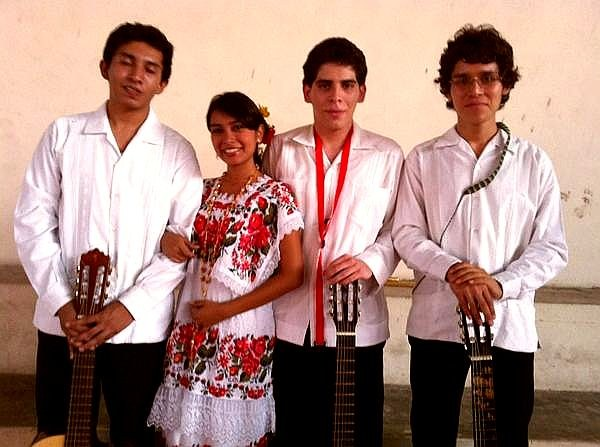
Los primeros guitarristas del taller (~2008)
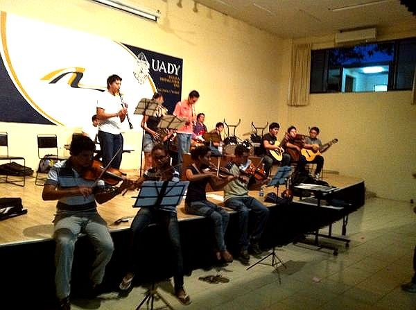
Identidad yucateca: guitarristas con alumna en hipil bordado
Ensayo nocturno — violines, clarinete, guitarras en escenario UADY
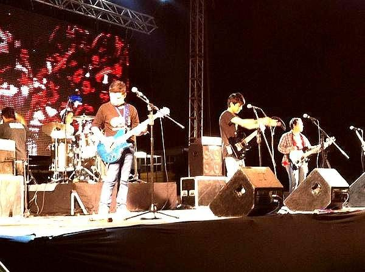
El día a día en el aula — las primeras generaciones
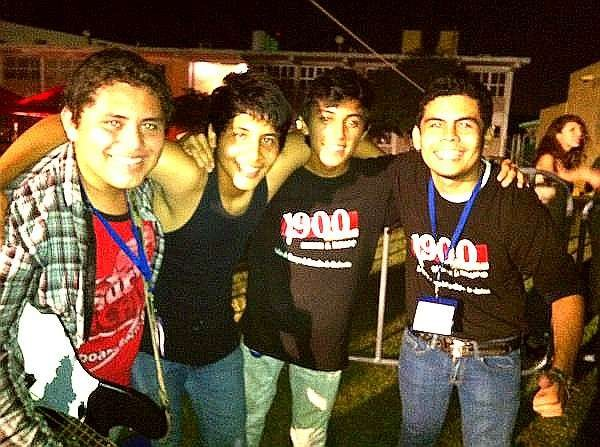
Rock en vivo — guitarra eléctrica, batería, un escenario de verdad
Post-concierto nocturno — la adrenalina después del show
Memo joven con alumnos — celebrando después de tocar
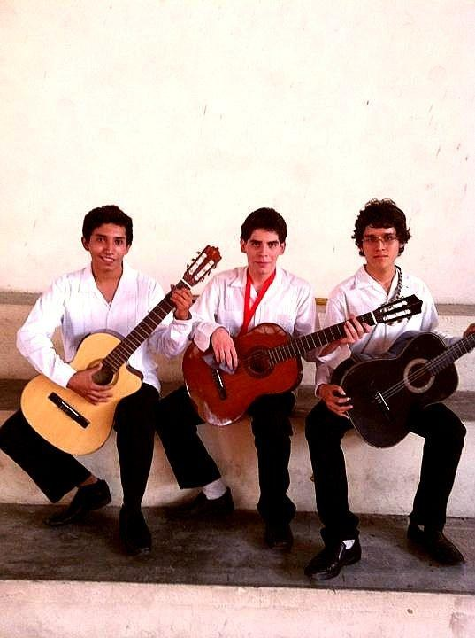
El grupo de blanco — listas para el concierto en el patio de la Prepa
Glosario Musical Ilustrado
Todas las palabras que necesitas para hablar el idioma de la música
"La teoría musical no es un obstáculo — es el mapa del tesoro."
Aquí encontrarás los términos que vamos a usar durante todo el año en el taller. Cada palabra tiene una explicación sencilla y un ejemplo con música que conoces. Si escuchas algo en clase y no sabes qué significa, ven aquí. Si ya conoces el término, úsalo como repaso rápido.
Tip: Usa Ctrl+F (o Cmd+F en Mac) para buscar una palabra directamente
A
A cappella
Cantar sin ningún instrumento que te acompañe. Solo voces. Como cuando tú y tus amigos cantan en el carro sin poner la música. Grupos como Pentatonix o Voctave hacen esto de forma profesional — y suena fuerte.
Acorde
Cuando 3 o más notas suenan al mismo tiempo. Como un abrazo grupal, pero de sonidos. Si tocas un "Do" en la guitarra (C), estás tocando las notas Do, Mi y Sol juntas. Eso es un acorde. Son la base de la armonía de TODAS las canciones que escuchas.
Afinación
Que tu instrumento (o tu voz) esté en el tono correcto. Cuando la guitarra suena "raro" o "desafinada", es que las cuerdas no vibran en la frecuencia exacta. Solución: usa un afinador (hay uno aquí en Recursos).
Armonía
La ciencia de cómo se combinan los sonidos simultáneos. Es la razón por la que una canción te pone triste o feliz. Cuando escuchas "Someone Like You" de Adele y sientes melancolía, eso es la armonía haciendo su trabajo.
Arreglo
Tomar una canción que ya existe y decidir CÓMO la vas a interpretar con tu grupo. ¿En qué tonalidad? ¿Quién canta qué? ¿Qué instrumentos? ¿Rápido o lento? El arreglista es como el chef que toma los ingredientes y decide la receta.
B
Bemol (♭)
Un símbolo que dice: "baja esta nota medio tono". Si tienes un Si y le pones un bemol, tienes Si♭ (que suena igual que La#). Es como bajar un escalón chiquito en la escalera musical.
Blanca (figura rítmica)
Una figura que dura 2 tiempos (el doble que una negra). Su sílaba Kodály es "ta-a". Se ve como un óvalo vacío con una plica (palito) arriba.
Bordón
Una nota o acorde que se mantiene constante mientras encima pasa la melodía. Como el zumbido grave del didgeridoo o cuando sostienes una nota grave mientras otro canta la melodía. Es una de las formas más antiguas de hacer armonía.
Bomba (yucateca)
No es un instrumento. Es esa copla pícaras que tu tío grita en las fiestas cuando suena la jarana. Ejemplo: "¡Bomba! En esta Preparatoria / cantan con mucha emoción / los alumnos del taller / que tienen ritmo y corazón." Ahora haz la tuya.
C
Canon
Cuando dos o más voces cantan la misma melodía pero empezando en momentos diferentes. "Fray Santiago" (Frère Jacques) es el canon más famoso del mundo. Es una de las primeras formas de polifonía que vas a practicar en el taller.
Cifrado (americano)
Un sistema para escribir acordes con letras: C = Do, D = Re, E = Mi, F = Fa, G = Sol, A = La, B = Si. Si ves "Am" encima de la letra de una canción, significa "toca La menor aquí". Es el sistema más usado en música popular — guitarristas y pianistas lo usan todo el tiempo.
Clave (de Sol, de Fa)
Un símbolo al inicio del pentagrama que dice dónde está cada nota. La clave de Sol (𝄞) es la más común — la usan voces, guitarra, piano (mano derecha), flauta. La clave de Fa (𝄢) es para sonidos graves — bajo, piano (mano izquierda), chelo.
Compás
La forma en que se organiza el tiempo en la música. Un compás de 4/4 (el más común) tiene 4 tiempos. Es como las líneas de un cuaderno: cada compás es un espacio donde caben cierta cantidad de tiempos. Casi todo el pop, rock y reggaetón está en 4/4.
Composición
Crear música original. Puede ser una canción con letra, una pieza instrumental, un arreglo nuevo. Componer no es solo para genios — es para cualquiera que tenga una idea y se atreva a desarrollarla.
Corchea
Una figura que dura medio tiempo (la mitad de una negra). Su sílaba Kodály es "ti" (y dos corcheas juntas = "ti-ti"). Se ven como negras pero con una banderita.
Coro
Un grupo de personas que cantan juntas. Puede ser al unísono (todos la misma melodía) o a varias voces (soprano, alto, tenor, bajo). Nuestro taller gira alrededor del coro — es el corazón de lo que hacemos.
Crescendo
Subir el volumen gradualmente. Imagina una ola que crece poco a poco. En la partitura se escribe con un símbolo que parece una "V" acostada abriéndose: <
D
Diafragma
El músculo que está debajo de tus pulmones y que controla tu respiración. Para cantar bien (o tocar instrumentos de viento), necesitas aprender a usarlo conscientemente. Respirar "desde la panza" es respirar con el diafragma.
Dinámica
El volumen con el que tocas o cantas. Desde pianissimo (pp = muy suave) hasta fortissimo (ff = muy fuerte). Las dinámicas son lo que le da vida a la música — una canción que siempre suena igual de fuerte es como hablar sin emoción.
Diminuendo
Lo contrario del crescendo: bajar el volumen gradualmente. El símbolo es una "V" cerrándose: >
E
Ensamble
Un grupo de músicos que tocan juntos, cada uno con su parte. Puede ser un ensamble vocal (coro), instrumental (banda), o mixto (voces + instrumentos). En nuestro taller hacemos ensambles mixtos: voces + guitarra + piano + bajo + percusión.
Escala
Una secuencia ordenada de notas que sube y baja. La más famosa es la escala de Do mayor: Do-Re-Mi-Fa-Sol-La-Si-Do. Es como la escalera de la música — cada escalón es una nota.
F
Forte (f)
Fuerte. Tocar o cantar con volumen alto. "ff" = fortissimo (muy fuerte). No confundir fuerte con gritado — fuerte con buena técnica es potente; gritado es lastimarse la voz.
G
Grado
La posición de una nota dentro de una escala. En Do mayor: Do es el grado I, Re es el II, Mi es el III, etc. Cuando decimos "progresión I-V-vi-IV", hablamos de los grados, no de las notas específicas — así puedes aplicar la misma fórmula en cualquier tonalidad.
I
Improvisación
Crear música en el momento, sin partitura. No necesitas ser un genio del jazz — todos improvisamos cuando tarareamos en la regadera. La escala pentatónica (5 notas) es tu mejor amiga para empezar a improvisar.
Intervalo
La distancia entre dos notas. Do a Mi es una "tercera" (porque hay 3 notas: Do-Re-Mi). Do a Sol es una "quinta". Cada intervalo tiene un sonido característico: el inicio de "Estrellita" (Twinkle Twinkle) es una quinta justa. "Cumpleaños Feliz" empieza con una segunda mayor.
L
Legato
Tocar o cantar las notas unidas, sin separación entre ellas. Como cuando dices una palabra larga sin pausas. Lo contrario es staccato (corto y separado).
M
Melodía
La secuencia de notas que puedes tararear. Es la parte que más recuerdas de una canción — lo que silbas o cantas cuando se te pega. En "Remember Me" de Coco, la melodía es la voz principal.
Metrónomo
Un aparato (o app) que hace "clic-clic-clic" a velocidad constante para ayudarte a mantener el tempo. Es como un GPS del ritmo. Hay uno en la sección de Recursos — úsalo cada que practiques.
N
Negra (figura rítmica)
La figura rítmica más básica: dura 1 tiempo. Su sílaba Kodály es "ta". Se ve como un óvalo relleno con una plica. Es la unidad de medida del ritmo — todo lo demás se mide en relación a ella.
Nota
Un sonido musical con un nombre (Do, Re, Mi... o C, D, E...). Hay 12 notas en total (7 naturales + 5 alteradas). Con esas 12, se construye TODA la música que existe.
O
Octava
Cuando subes (o bajas) 8 notas hasta llegar a la misma nota, pero más aguda (o grave). De un Do al siguiente Do hay una octava. Suenan "igual pero diferente" — es la relación más perfecta entre dos notas.
Ostinato
Un patrón musical que se repite una y otra vez sin cambiar. Puede ser rítmico (un patrón de palmas que no para) o melódico (una frase de bajo que se repite). "We Will Rock You" de Queen empieza con un ostinato rítmico: BUM-BUM-CLAP.
P
Partitura
La escritura de la música en papel (o pantalla), usando pentagramas, notas, silencios y símbolos. Es como el guion de una película, pero para músicos. No todos los músicos leen partitura — también existe el cifrado y la tablatura.
Pentagrama
Las 5 líneas horizontales donde se escriben las notas musicales. Cada línea y cada espacio representan una nota diferente. "Penta" = 5, "grama" = línea.
Piano (dinámica)
Suave. Tocar o cantar con volumen bajo. "pp" = pianissimo (muy suave). El instrumento se llama "piano" porque su nombre completo es "pianoforte" — podía tocar suave Y fuerte, algo revolucionario en su época.
Pulso
El latido constante de la música. Es lo que te hace mover el pie o la cabeza automáticamente cuando escuchas una canción. No es lo mismo que el ritmo — el pulso es constante (como tu corazón), el ritmo varía (como tu forma de caminar).
R
Redonda
La figura más larga básica: dura 4 tiempos (un compás completo de 4/4). Su sílaba Kodály es "ta-a-a-a". Se ve como un óvalo vacío sin plica.
Registro
El rango de notas que una voz o instrumento puede alcanzar, de la más grave a la más aguda. Tu registro vocal es único — algunos tienen registro amplio, otros más limitado, y ambos están bien.
Resonancia
El efecto de amplificación natural del sonido en tu cuerpo (pecho, cabeza, nariz). Cuando "colocas" la voz, estás buscando las resonancias que hacen que tu voz suene más rica y potente sin esforzarte.
Ritmo
El patrón de sonidos largos y cortos dentro de la música. A diferencia del pulso (que es constante), el ritmo varía — es la combinación de figuras rítmicas que le da personalidad a la música. El ritmo de "Despacito" es diferente al de "Bohemian Rhapsody", aunque los dos tienen pulso.
S
Silencio
Tan importante como el sonido. Un silencio en música es un espacio intencionado donde no suena nada. Hay silencios de negra, de corchea, de blanca, etc. Como dijo Debussy: "La música es el espacio entre las notas."
Sostenido (♯)
Un símbolo que dice: "sube esta nota medio tono". Si tienes un Fa y le pones un sostenido, tienes Fa♯ (que suena igual que Sol♭). Es como subir un escalón chiquito.
Staccato
Tocar o cantar las notas cortas y separadas, como si rebotaran. Lo contrario del legato. Se indica con un puntito encima de la nota.
T
Tablatura (Tab)
Un sistema de escritura musical para instrumentos de cuerdas (guitarra, bajo). En vez de un pentagrama, usa líneas que representan las cuerdas, y números que dicen en qué traste poner el dedo. Es más fácil de leer que la partitura si tocas guitarra o bajo.
Tempo
La velocidad de la música, medida en BPM (beats per minute = golpes por minuto). 60 BPM = un golpe por segundo (tranquilo, como una balada). 120 BPM = dos golpes por segundo (pop normal). 180 BPM = punk/ska (a toda velocidad ).
Tesitura
El rango cómodo de notas de una voz o instrumento. No es lo mismo que el registro completo — la tesitura es donde suenas mejor sin esforzarte. Todos tenemos una tesitura diferente, y conocerla te ayuda a elegir canciones que van contigo.
Transposición
Cambiar una canción de tonalidad. Si una canción está en Sol mayor y es muy aguda para tu voz, la transportas a Mi mayor (más grave). La melodía suena igual, solo que más arriba o más abajo. Es como ajustar el asiento del carro a tu altura.
U
Unísono
Cuando todos cantan o tocan exactamente lo mismo, al mismo tiempo. Es la forma más básica de hacer música en grupo. "¡Todos juntos, la misma nota, al mismo tiempo!" = unísono.
V
Vocalización
Los ejercicios de calentamiento vocal que hacemos al inicio de cada sesión. Vocalizamos para despertar la voz, calentar los músculos, y preparar el rango. Como el stretching antes de correr, pero para la voz.
Números y símbolos
4/4 (compás)
El compás más común en la música popular: 4 tiempos por compás, y la negra vale 1 tiempo. El 80% de las canciones que escuchas están en 4/4. Rock, pop, reggaetón, hip-hop, cumbia — casi todo.
3/4 (compás)
3 tiempos por compás. Es el compás del vals (UM-pa-pa, UM-pa-pa). También de muchas baladas. "My Heart Will Go On" de Titanic está en 3/4.
I-V-vi-IV (progresión)
La progresión armónica más usada en la historia de la música popular. En Do mayor sería: C - G - Am - F. "Someone Like You" de Adele, "Let It Be" de The Beatles, "Nada" de Zoé, "No Woman No Cry" de Bob Marley, y como 500 canciones más. Literalmente.
¿Falta una palabra? Dile a Memo y la agregamos. Este glosario crece con nosotros
Glosario del Taller de Música · Prepa UADY · MEFI · 2026-2027
Las Mascotas del Taller
Cada generación tiene sus tradiciones. Estas son las nuestras.